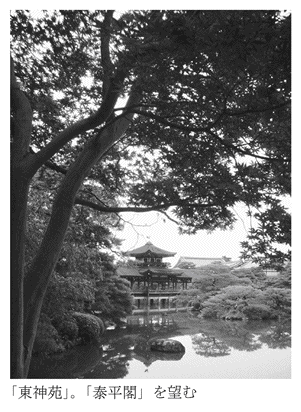
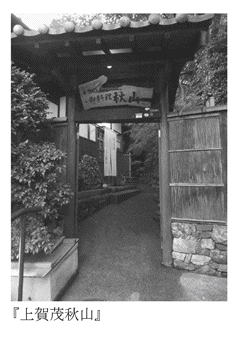
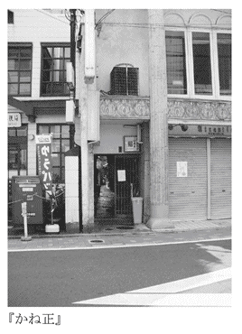
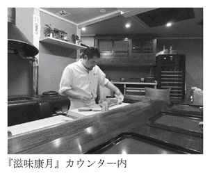

| おひとり京都の秋 (光文社新書) | |
| 柏井 壽 | |
| 光文社 (2011) | |
はじめに
季節ごとに京都のあれこれを紹介するシリーズの第二作目である。
秋。一年で、京都が最もにぎわいを見せる時期。だからこそ、ひとりで旅をしたい。雑踏の中、ただひとりで京都の紅葉を、思いのままに堪能したい。
あるいは近江、湖東三山など、ちょっと遠くにまで足を伸ばして、隠れもみじをひとりで探す。かさこそと落葉を踏みしめて、古寺のほとけさまに手を合わせる。誰に追い立てられることもない。静かな、静かな秋がそこにある。
しかし、秋の京都。わざわざに紹介せずとも、多く旅人は、すでに承知なのではないだろうか、とも思った。それぞれが、思い思いにご贔屓のもみじを持ち、お目当ての店を予約した上で、京都を訪れるのでは。
それを鑑みて、本当の穴場――他のガイドブックが通り過ぎてしまうような、真の隠れスポットを紹介しようと心がけた。ひとりでひっそり、訪れ愛でることのできる「誰も知らなかった京都」を。だが、そんなことをすれば京都に住まう人々から、きっと顰蹙を買うに違いない。ジレンマに陥る。
しかし、京都は動いている。悩む一方で、日々それを実感してもいる。
年間の入洛客数の目標を五〇〇〇万人と定め、いったんはそれを達成したが、次年度にはあっさりそれを割り込んだ。あやうい話なのである。リーマンショックだとか新型インフルエンザだとか、さまざまな要因を持ち出してはいるが、飽和状態が近いことは間違いのない事実である。
京都を一升の枡に喩えれば、すでに一升近くの水は入っている。それを超えれば溢れ出して、こぼれるに決まっている。僕はそう思うのだが、官民一体となって観光客を誘致する方々は、表面張力を無限大のものと考えておられたようだ。
昨今、数には限りがあることだけは分かったようで、今度は量から質への転換を図るのだと言い出した。今さら何を、と思わぬでもないが、気づかぬよりは気づいたほうがいい。公の方々にあっては、多くを動員することにのみ価値を見出していたことを、大いに反省していただきたい。
五〇〇〇万人が四〇〇〇万人になってもいいではないか。それより、京都を訪れた人たちが皆、来てよかった、と思って、気持ちよく過ごしてもらうことこそが大事なのではあるまいか。
もうひとつ。京都人にとって衝撃的なニュースがネット上に流れた。京都の街の住所表記〈上る・下る〉が危機に瀕しているというのだ。ＧＰＳ、グーグルマップ、スタンダードな地図検索に、京都独特の〈上る・下る〉は馴染まないから廃せよというのだ。
バカを言ってもらっては困る。京都において、〈上る・下る〉〈東入る・西入る〉は欠かすことのできない地理表現。これなくして、京都人は歩くことすらできない。尺貫法などとは比べることすらできないほど、身体に染みついたものなのである。
この流れと、先の目標五〇〇〇万人とは無関係ではない。質を無視して数集めに奔走した結果が、〈上る・下る〉不要説につながったのだ。あるいは、何でもかんでも数値化する、デジタル化の弊害。
うわべだけの京都観光客を増やすことより、真の京都ファンを集めることに注力していたなら、こんな流れにはならなかったはずだ。情緒は数値化できるものではない。
観光客で溢れ返る秋。この季節にこそ、本当の京都とは何なのか、正しい京都の姿はいかなるものなのか。招く側は真摯に考えるべきだと思う。
とは言え、招かれる側は余計な思索は無用。秋の京都は、紅葉のみならず、月よし、七草よし、味わいよし、と多くの魅力をたたえている。存分に秋の京都を愉しんでいただきたい。
月は、ひとりで眺めるからこそ冴え冴えと、紅葉は、ひとりだからこそ目に鮮やかに、七草は、ひとりならば深く心に染み入る。
おひとり京都の秋。美しくも愉しい。
目 次
秋に観ておきたいところ、もの。走りの秋から、旬、そして名残りまで、テーマを決めていくつか挙げてみた。月、秋草、茶。
誰もが知る名所から、知る人ぞ知る隠れた場所まで、秋ともなればぜひ足を運んでいただきたいところ。そしてそこを訪ねたなら、きっと立ち寄りたい《味処》も併せてご紹介する。食事というほど大仰なものではなく、《ちょっと旨いもの》や《格好の京土産》。秋の愉しみは尽きない。
一 月に遊び 秋草に酔う
雪月花、あるいは花鳥風月。古来、日本人は愛でるべき四季の移ろいの第一として、月を挙げてきた。秋といえば月。月といえば秋。ことさらに京都の月は美しい。
幸いにして、月夜の京都に出会えたとして、さてどこで名月を眺めようかと迷う。花や紅葉と違って、どこで愛でたとしても、その月は同じ。したがって違いを感じるのは、その場所の空気、雰囲気、そして舞台装置にある。
「祇園小唄」に倣って東山を背景に、も悪くないが、侘びた風情なら嵯峨野に軍配が上がる。日本三大名月観賞地のひとつ、『大覚寺』【地図Ｌ】。大沢池に映る月はまさに幽玄の世界。月明かりの中、さわさわ揺れる竹林を歩くのもまた風雅なもの。
中秋の名月の頃には、京都の街、あちこちで月見の行事が行われる。
科学的に言うなら、月はいつも同じで、春であろうが、秋であっても、その姿はまったく変わらない、のだろうが、そこに風流という非科学が加わると、秋の月は格別のものに変わるのである。
平成二二年であれば、九月二二日がちょうど中秋の名月。この前後に予定されているのが、
ざっとこんな感じである。これらの行事は毎年行われていて、それぞれの寺社が趣向を凝らす。イヴェントとしての月見を望むなら、右に挙げたいずれかに参集すればいい。にぎわいの中で見る月も悪くはない。
ひとり静かにとなると、はてどこがいいだろうか。背景の美しい『京都御苑』や賀茂川の堤などからの眺めもいいが、この項では「月」と奥深い関わりがある名所、「月」を愛でるために至高の設えがなされた建築をご紹介しよう。実際にそこで「月」を愛でることは叶わないが、訪れて、目に見えぬ「月」を想うのも一興である。
月には桂という木が生えている。だがそれは、日本に植わるそれとは違い、古代中国での伝説上の話である。月桂、あるいは月の桂。酒処伏見で醸す酒にも、そんな名をつけたものがある。
桂。月の明かりをそう呼ぶこともあるようだが、いずれにせよ、月と桂は深いつながりを持ち、月の名所には桂のついた地名が少なくない。修善寺の桂川、高知の桂浜。そして無論『桂離宮』【地図Ｍ】もそのひとつ。
「泣きたくなるほど美しい」。『桂離宮』を訪れ、「古書院」「月見の縁」を見たときの感想を、ブルーノ・タウトがそう洩らしたというのは知られた話。何もドイツ人に言われなくとも、ひとたびこの佇まいに身を置けば誰もがそう思うに違いない。そんなことを考えながら、タウトが著した『ニッポン』（講談社学術文庫）を読み返してみると、どうもニュアンスが異なっているのに気づいた。
ドイツの建築家が書いたものを、ドイツ文学を専攻する早稲田大学の教授が訳したものだから、両人とも没した今となってはどれが正確かは分からないが、著書には《それは実に涙ぐましいまでに美しい》と書かれている。
泣きたくなるほど美しい、と、涙ぐましいまでに美しい、では随分とニュアンスが異なる。この訳が正確だとするなら、ブルーノ・タウトは皮肉を込めて言っているようにも思える。月を愛でるためにそこまでの努力をするのか、と。『日光東照宮』を酷評しているタウト、どこに真意があったのか、読み返すほどに分からなくなるのである。
とは言え、一九三三年に来日し、そのまま日本に亡命したタウトが『桂離宮』の美しさを日本人に再認識させた功績は、とてつもなく大きい。もしもタウトが絶賛しなかったなら、『桂離宮』が今日ほどの評価を得ていたかどうか。
惜しむらくは宮内庁に管理されていて、いつでも気軽に観ることができないこと。だがそれは裏を返せば、それほどに管理されているから、いつまでも美しさを保っていられるということでもあるのだが。
突然訪ねていって観られるものではない。事前予約が必須だ。地方にお住まいの方なら宮内庁の京都事務所へ連絡して、往復はがきで申し込むシステム。だが、近隣の方なら直接、『京都御苑』を訪ね、御所の西北隅にある窓口で申し込むのがいい。運が良ければ、前日でも参観可能となることもある。
アクセスとしては阪急電鉄「桂」駅が最寄り駅になる。駅からはバスもあるが、歩いても二〇分と掛からない。
参観は、一日六回に分けて行われる。僕が訪ねた際は、運よく朝一番、午前九時スタートであった。期待に胸を膨らませながらも、緊張しているのか、しきりに喉が渇いた。
桂川沿いに歩くと垣根が見えてきて、よく見ると笹でできた生け垣である。後で訊くと、これを「桂垣」と呼ぶそうで、敷地内に生える竹を垣根側に曲げて、笹の葉だけを垣根に仕立てているそうだ。いきなりから凝った造りである。その「桂垣」はやがて、よく見掛ける竹の垣根になり、そこから表門へと続く。
まずは「御幸道」を歩き、いよいよ「御幸門」から入る。広大な庭は池泉回遊式になっていて、池の周りをぐるりと巡りながら参観する。残念ながら建物の中には入れないので、襖の引き手や、壁紙、欄間の意匠、襖絵など、教科書で見掛けた優れたデザインは窺い知ることができない。しかしながら、一時間近くかけて庭を歩き、書院を始めとするいくつかの建物を外から眺めるだけでも、『桂離宮』の並外れた〈美〉は垣間見ることができる。
一七世紀の初めから中頃にかけて、八条宮の初代・智仁、二代・智忠の、親子二代親王が心血注いで作り上げた『桂離宮』。その発露が〈もてなしの心〉だったとは、参観に来るまで実感できなかった。
戦国から徳川の世になり、政を離れるようになった宮家は、日本文化の正しい継承に力を注ぐことになる。それはまず建築に始まり、造園、芸能、茶道、料理、と多岐にわたって、それらの正しい姿を守り伝えるために力を注いだ。それがひとつの形で表されたのが、この『桂離宮』。都を離れた宮家の別荘として造られたものだが、もうひとつの大切な目的は、稀代の天皇である、後水尾天皇（後に上皇）をもてなすことにあったという。
敬愛する後水尾天皇をもてなそうとして、どれほどの工夫を凝らし、意匠を考え抜いたか。庭を歩くごとに、その凄さを知ることになる。たとえば庭の飛び石。桜色に艶めく御影石は、智忠親王が、自ら六甲山系の住吉川に入り込んで吟味したものだと伝わる。それを川から海へ、そしてまた淀川を遡り、桂まで運ばせたというのだから、執念とも言うべき熱意だ。
庭を歩き、その時々に出会う木々の一本一本、池に架かる石橋、灯籠、手水鉢など、それはすべて、いかにして後水尾天皇を喜ばせるか、それだけを心掛けて造り上げたもの。それだけの熱意を込めたにもかかわらず、後水尾天皇がここ『桂離宮』を訪れたのは、わずかに二度だけだったという。
なので、この『桂離宮』を訪ねるときは、後水尾天皇に成り切るのがいい。わたしひとりのために造られた庭だ、そう思いながら歩を進めると、一層感慨深いものがある。
腰掛けから見るソテツに驚き、海に見立てた州浜、灯台を思わせる石灯籠、さらには天橋立に似せた石橋。実に愉しい仕掛けである。たった二度だけとは言え、さぞや後水尾天皇も喜ばれたに違いない。
「松琴亭」、「笑意軒」など四つの茶屋には、在りし日には竈や炉が設えられ、客人の目の前で料理を作ったという。今でいうオープンキッチン、あるいは『草喰なかひがし』方式は今から三〇〇年以上も前に、すでに考案されていたのだ。それもこれも、すべては〈もてなし〉。
「もてなしの心でお迎えします」。旅館のホームページやパンフレットで女将の作り笑顔によく添えられている言葉だが、ここ『桂離宮』を訪れると、それが虚しく響いてしまう。〈もてなし〉とは、そんな軽々しいものではないのだから。
目にするものものに幾度となく感心したが、その最たるものは〈見せない工夫〉だ。たとえば池の全容をあからさまに見せないために松が植えられる。僅かな傾斜にもかかわらず、道に緩やかなカーブをつけることで、奥山に分け入るような趣きを見せる。それがまた池を隠し、やがて道が開けて、池を見渡すときの感動をより大きくする。いきなりすべてを見せないのだ。
さらには、ただ自然のみならず、「笑意軒」の裏には水田を作り、田植えから稲刈りに至る、暮らしの中の季節までをも景色にしてしまう。
建物の中は観られず、ましてや月の出る時間にいることなど許されないが、それは想像を巡らすことで完結するはず。
「月波楼」から「書院」の月見台へ進めば、東の空に浮かぶ月と、池に映る月、ふたつの月がゆっくりと水面を渡っていく様子が目に浮かぶ。どうしても、と願うなら、『桂離宮』のすぐ横を流れる桂川の川辺から月を眺めればいい。
月は欠けてもまた満ちる。月の桂は切ってもまた生えて、枯れることがない。輪廻転生、不老不死。さまざまな見方ができる。秋の月はことさらに美しい。
『桂離宮』のすぐ南側に建つ『中村軒』【地図Ｍ】はまるで離宮の門前茶屋であるかのように、参観した人はほとんどがこの暖簾を潜る。多くのお目当ては名物「麦代餅」。素朴な餅菓子は誰の口にも合い、長く人気を集めているが、その名の由来がおもしろい。
古くこの辺りの農家が田植えや麦狩りで忙しいとき、腹持ちのいいおやつとして、この『中村軒』の餅が重宝されたと言う。今で言うデリバリー。農作業に勤しむ人々の元へと、丁寧にも田んぼや畑まで届けたのだそうだ。無論のこと掛け売りであった。
農作業が一段落する半夏生の頃に、餅代金の代わりに麦を受け取りに行ったのだそうだ。つまりは物々交換、客の側からすれば、麦の代わりに餅をもらった、というわけで「麦代餅」となった。長閑な時代の、どこか心温まる話である。
たっぷり粒餡の入った餅に、さらりときな粉を塗した菓子はボリュームたっぷり。食の細い向きにはミニサイズもあって重宝する。
この店の特徴は、ともかく菓子の種類が豊富なこと。土産に買い求めようとして、大方が目移りし、店先で迷いに迷っている。素朴な皮に、あっさりしたこし餡を包んだ「かつら饅頭」や「きんつば」が人気。秋限定なら「昔の月見だんご」「栗ちゃきん」「柿羊羹」辺りがおすすめ。水曜日が定休なので注意が必要。
名所の隣に名菓あり。
月と言って、僕が真っ先に想い浮かべるのは、この時期の茶席で掛かる詩、「掬水月在手」。水を掬すれば、月、手に在り。なんとも風雅な光景ではないか。
蹲でも、手水鉢でもいい、両手を丸めてぴったり合わせ、水を掬う。そこに月が映れば、月は我が手の内にある。
この詩には後段があり、それは「弄花香満衣」。花を弄すれば、香りは衣に満つ。
つまりは何も行動を起こさなければ、月を手の内に収めることも、花の香りを衣に移すことも、何もできないという禅宗の教え。
月の名所、『慈照寺』。通称『銀閣寺』【地図Ａ、Ｄ】は、「臨済宗」の禅寺である。言うまでもなく「銀閣」は、北山文化である「金閣」の後を追う東山文化が造り上げたものである。
その施主と言えるのは足利義政。政から、そして妻である日野富子から逃げたくて、隠棲の地としてこの場所を選んだ。したがって権勢を誇るかのような豪奢なものではなく、山裾に佇む侘びた山荘を、望んで建てた。
だが皮肉なことに、今「銀閣」と呼ばれている「観音殿」がようやく完成した翌年、義政は没してしまう。そしてその義政の遺命により、後に寺院とされる。『相国寺』から住職を迎え、義政の法号からとって、寺名を『慈照寺』とした。
『銀閣寺』を訪れて、最初に迎えてくれるのは「銀閣寺垣」と呼ばれる高い生け垣である。冬から春にかけて、赤い花を咲かせる椿の木が多く使われている。「総門」を入り、「中門」までこの高い生け垣が続く。
左右の生け垣に高低差をつけ、真っ直ぐに細道を伸ばし、先を見通させず、期待を高めさせる。なかなか効果的な演出である。行き止まりから左へ、と、ようやくここで、庭と建物、「銀閣」らしき楼閣がちらりと見えてくる。だがしかし、そんなものが視界から消えてしまいそうなほどに、圧倒的な存在感を見せつけるのが、砂のオブジェ。小高い丘のような「向月台」と、それに続く「銀砂灘」だ。
月に向かう台。銀の砂。ふと気づけば、「月の砂漠」を口ずさんでいる。
僕が初めて、この『銀閣寺』とお月さまのただならぬ関係を知ったのは、中村直勝という学者が著した『京の魅力』という、写真集のような書物である。中学に入った当時、漫画もよく読んだが、こんな渋い本も買い求めていた。
この中に『銀閣寺』に触れた記述があって、それによると、「銀砂灘」の上面が斜めになっているのは、その傾斜部分に月の光を反射させて、楼閣に届くようにしたものだ、とあった。しかもそれは偶然発見したように書かれてあり、他の場所と違って、かなり昂ぶった記述だった（ように記憶する）。随分探したが、どこかへ仕舞い込んだのか、手元に無いので断定はできない。ただ当時、僕もこの「世紀の発見」に興奮した覚えがあるから、大きくは違っていないと思う。
そして当時の僕は、そのことを確かめるべく、日を置かず『銀閣寺』を訪ねたのだから、相当変わった中学生だ。そしてその中学生は「銀砂灘」を目の当たりにして、途方に暮れてしまう。いくらなんでも、この砂に月の光が反射して楼閣を照らすことなどないだろう、と。
しかも著書には、砂に反射した月光が楼閣の天井を照らし、そこに貼られた銀の箔に再度反射し、楼閣の部屋全体を照らす、とあったのだ。楼閣の中を確かめることは叶わなかったが、ためつすがめつ「銀砂灘」を見て、きっとそれは無理だと僕は断じた。
しかし氏は、京都を代表する歴史家として、知らぬ者などないほどの著名な学者だ。考えれば考えるほどに、謎は深まるばかりだった。さらに言えば、「向月台」も「銀砂灘」も江戸期になってから造られたものと知った。当然ながら義政が関わることなど不可能だ。
今と同じ住所、当時の僕の住まいから、すぐ近くに中村直勝先生は住んでおられた。同じ町内である。が、無論面識などあるはずもない。風格ある構えに掛かる表札を眺め、幾度か訪ねようと思い、しかし必ず躊躇った。
それが、史実を追う歴史家が抱くロマンであると気づいたのは、ずっと後のことだ。
若気の至り。真実は必ずひとつでなければならないと思い込んでいた。ふたつでも、みっつでもいい。もっと乱暴に言えば、何が真実かなど、どうでもいいことではないか。真実の探求は、専門の学者に任せればいい。そう思うに至った。
そしてそれは、今僕がこうして名所を訪ね、古き人の想いを推し量る礎になっている。科学による分析も無論大切だろうが、その想いを汲み、先人の心を観ることも大事だと教わった気がする。時にそれが非科学的であったとしても、史実として証明することができなくてもいい。きっとこんな想いを込めただろうと、先人に同化することが、古きを訪ねる際の心構えだ、今はそう固く信じている。
火難にあった『銀閣寺』、室町期から残されているのはいわゆる「銀閣」と「東求堂」。「銀閣」は写真でもよく見掛ける通り、二層式になっていて、屋根は杮葺である。白い和紙が貼られた障子が印象的な建物である。一方「東求堂」は「銀閣」と向かい合って建つ平屋。本来は阿弥陀堂として建てられたが、義政はここで茶を愉しんだり、読書をしたり、思索に耽る場所として活用したようだ。「同仁斎」と呼ばれる四畳半の部屋は、茶室というスタイルの原型だとも言われている。
侘び寂びという内省的な、極めて日本的な思想はここ「東求堂」から始まったのだ。そんな感慨に耽りながら庭を歩く。
手前の庭は、平坦だが奥に進むと突然山道になり、かなりの急坂を登ることになる。庭が二段構えになっているのだ。手前の庭には「錦鏡池」と名づけられた大きな池があり、その中には小さな島もある。池に架けられた七つの橋はそれぞれ、造りが異なり、景色も変わる。変化に富んだ庭池だ。
池の奥の小さな滝には、「洗月泉」と名がつけられている。どこまでも「月」なのだ。北へ歩を戻し、東の山道へと辿る。
山を登り切って、西を振り向くと、はるか下界に「銀閣」を見下ろせる。あっという間に高みに登ったことに、少しばかり驚き、はてここからの眺めに義政は、何を思ったのだろうと考えた。
義政はこの庭のデザインを『西芳寺』に求めたという。夢窓疏石が作ったその庭は女人禁制。将軍といえども、母親にその庭を見せることは叶わなかった。そこでこの庭である。義政は『西芳寺』に似せた庭を造り、母重子にそれを見せたかったのかもしれない。
妻富子からは逃れたくても、母重子への恋慕は募る。義政の造った庭にはそんな想いが込められているようだ。とすれば、「月」は「母」の象徴だったのかもしれない。
わずか八歳で将軍職に選ばれ、元服と同時に八代将軍となった足利義政。晩年を迎えて、側室だった母重子への想いを庭に、そして『銀閣寺』に託した。
「銀閣」すなわち「観音殿」の一層を「心空殿」、二層を「潮音閣」と義政が命名したのは、あるいは胎内回帰だったのだろうか。
この寺もまた、夜間は門を閉ざすゆえ、その境内から月を眺めることは叶わない。『銀閣寺』を出て西へ。哲学の道を少し南に歩く。遊歩道沿いに置かれたベンチが特等席。心静かに月を眺める。
月と甘党。意外に相性がよさそうだ。『銀閣寺』の近くにもまた、甘党向けの格好の店がある。
『銀閣寺』の参道を西へ、哲学の道を南に下る。小さな流れに沿って歩き、最初の角を西へ折れると、鹿ヶ谷通に出る。少しだけ下った西側にあるのが『㐂み家』【地図Ｄ⓭】。
猛暑の夏には「かき氷」、底冷えの冬には「ぜんざい」に人気が集まるが、年間を通しての名物はなんと言っても「豆かん」。
赤エンドウ豆に黒蜜を掛けた懐かしの甘味「豆かん」は、ふとした拍子に食べたくなる味の代表なのだが、いざ食べようとしても、これを品書きに載せている店など、ほとんど見当たらない。東京の下町ではよく見掛けるが、京都では、はてどこにあったか、と思い出せないこともしばしば。
浅草の『梅園』や『梅むら』。その味わいを思い出しながら、『㐂み家』の引き戸を開ける。
「あん入り」「白玉入り」「バニラアイス入り」とあるが、餡子とアイスが載った「まる豆かん」がおすすめ。赤エンドウと寒天が二段構えの歯応えで、餡子の甘みと絡み合う独特の食感。それを包み込むバニラアイスも香り高く、甘味を苦手とする僕でも、これなら、ぺろりと食べられる。「豆かん」は持ち帰りもできるので、宿で食後のデザートにするのもいい。
一一月の中頃からメニューに載る「白味噌雑煮」は隠れた人気。お正月でなくても美味しいことに変わりはない。白味噌雑煮にミニ豆かんをつけると九〇〇円。これならランチにしても充分。
二 萩の花
「今年はきつう暑おしたなぁ」
「そうどすな。なんや年々暑ぅなるように思いまっせ」
「けど、朝晩は楽になりましたな。昨夜なんか寒いくらいどしたえ」
「やっと、どすな。ぼちぼち『梨木』さんの萩も咲きますやろし」
長く暑い夏を終えた都大路。朝の散歩で出会った、ご近所さんどうし、秋の訪れにホッとしているようだ。
秋風が吹きはじめる京都。暑くなく寒くなく、紅葉にはまだ早い分、人出も少なく、観光には一番いい時候かもしれない。
紅葉はなくとも、見どころはいくらもある。わけても花。秋の京都には、爽やかな風に揺らす花々が、あちこちの社寺で咲き競う。先の会話に出てきた『梨木』さんなどが、その代表である。
京都市民憩いの場として長く親しまれている『京都御苑』。天皇ご一家が東京に仮住まいしておられる間なればこその、伸びやかな時間。
その『京都御苑』の北東、「清和院御門」を潜り、北に上ると『梨木神社』【地図Ｅ】の石鳥居が見えてくる。ここは「萩の宮」と呼ばれるほどに萩の花で知られ、毎年九月の第三、もしくは第四日曜前後に「萩まつり」が行われる。
萩。草冠に秋と書く。文字通り秋の訪れを告げる、愛らしい花は、万葉の歌にも多く歌われ、洋花にはけっして見ることのできない、かそけき姿。散り行く花弁が土に落ちて、これほど美しい花は他にない。
境内に萩の花が咲き、秋風に短冊が揺らめく。風に散った花弁がふわりと舞い上がり、短冊をかすめる。普段は縁遠い俳句を認めるのも、『梨木神社』、「萩まつり」の愉しみのひとつなのである。
『梨木神社』が萩の社なら、ここから北へ、鯖街道の入口に近い川端通に建つ『常林寺』【地図Ｂ】は「萩の寺」である。
山号は「光明山摂取院」。阿弥陀三尊をご本尊とする、浄土宗の寺院だ。元は先の『梨木神社』にほど近い、寺町荒神口にあったが、大火にあって焼失、元禄一一年、討ち入りの四年前に現在地に移転して再建された。元あった時から萩の名所だったというから、『梨木神社』界隈は萩の群生地だったのだろうか。
九月の中頃から下旬にかけてが例年の見頃。年によっていくらか異なるから、事前に問い合わせたほうがいい。
境内の「地蔵堂」に安置されている「世継子育地蔵尊」は、鯖街道を行き来する旅人の信仰も篤く、遠く海を越えて旅をした勝海舟は、この寺を定宿にしていた。旅人をやさしく見守り、旅の無事を約してくれるお地蔵さんなのである。
「萩の寺」、その名に恥じず、境内は萩で埋め尽くされ、萩をかき分けて歩かねばならない。薄紫の小さな花も愛らしいが、真っ赤に花を開く彼岸花の周りを飾る、白い花も美しい。萩のハシゴも愉しからずや。
三 秋の七草
「はぎのはな おばなくずはな なでしこのはな をみなへし またふぢはかま あさがほのはな」
山上憶良が万葉集で詠んだことから始まったと言われる秋の七草。春のそれとは違い、食べることなく、ただただその美しき佇まいに見とれる。
萩、尾花、葛花、撫子、女郎花、藤袴、朝顔。
最後の朝顔については、桔梗、木槿、昼顔を指すものと諸説あるものの、概ねは桔梗ということに落ち着いているようだ。華やかに咲き競う花ではなく、あくまで草としての有りようを愉しむもの。
秋の風に揺らめく草々は、はかなげで、胸にしみじみと染み入るが、先に書いた萩のように、それぞれ群れをなすのは見掛けても、七つが揃う姿を見ることは少ない。
遷都一一〇〇年を記念して造営された『平安神宮』【地図Ｄ】。その神苑に秋の七草が揃うことは存外知られていない。
神宮道。朱の大鳥居から北へ歩き、砂利を踏みしめて「応天門」を潜る。本殿の前に建つ「大極殿」に手を合わせたら、左手の「白虎楼」横から神苑に入る。
 社殿を囲むように配された神苑は、東西南中の四つに分かれ、すべてを合わせると一万坪にも及ぶ大庭園である。稀代の庭師、小川治兵衛の手になる庭は、一日眺めていても見飽きない。
それにしても小川治兵衛、通称「植治」はどこまで偉大な庭師なのだろう。この『平安神宮』からすぐ東、岡崎界隈に点在する別荘のあちこちに名園を数多く残していて、かつ、その姿形がそれぞれまったく異なるという離れ業をやってのけた。あれも「植治」、これも「植治」。今の時代に生きていたなら、一職人の域を超えて、間違いなくアーティストとして持て囃されたに違いない。ため息を吐いて本殿の裏手に回り込み、順路に逆らって、まずは東に向かった。
神苑の中で最も広いのが「東神苑」。「栖鳳池」に浮かぶ「泰平閣」が圧巻である。池を右手に見ながら北へと歩を進めると、池の幅が狭くなり、その先は「蒼龍池」と名を変える。架かる橋は「臥龍橋」。池の中には飛び石が配され、ここを渡るのも愉しい。
やがて水は本殿の後に回り込み、細く続く。後門を西へ進むと「白虎池」と再度名を変え、そこが「西神苑」となる。
東の蒼龍、西の白虎。すなわちこの神苑は風水思想に基づいて作庭されているのである。そもそも桓武天皇が平安京をこの街に置いたのは、風水思想の四神相応の地だったからで、その桓武天皇を祭神に抱く『平安神宮』だから、当然と言えば、当然のことなのだが。
池はまたその流れを細くし、「南神苑」へ続く。この庭の一角に設えられた四阿の近くに植わっているのが、「秋の七草」である。花の時期が異なるせいで、一斉にとはいかないものの、その風情は充分愉しめる。
「南神苑」のもうひとつの見どころは入口近くに植わる枝垂れ桜。と言っても秋には花をつけない。春の再訪を期して見上げれば、紅色の房が瞼に浮かぶやもしれぬ。文豪谷崎潤一郎流に表現するなら、〈忽ち夕空に広がっている紅の雲〉（『細雪』より）。
『細雪』の彼女たちはこの桜を〈一年待ち続けた〉とあるから、半年待つなど何の造作もない。
神苑の最後に見るべきはなんと「チンチン電車」。なぜここにあるかと言えば、琵琶湖疏水を使って発電し、その動力を使って走った、日本初の電車だったからである。琵琶湖と京都は切っても切れない関係にある、電車がそう語り掛けてくるようだ。
さてこの神苑。本来はこの「南神苑」から、西、中、東へと辿るのが正しい巡り方。なぜかと言えば、前述のように陰陽道の思想に沿って造られた庭だからである。
「南神苑」は樹木が生い茂り、暗く鬱蒼としている。つまり〈陰〉である。ここから、西、中へと辿ると、少しずつ明るく、広々としていき、最後に広大な「東神苑」が待ち受けている。〈陰〉から〈陽〉へという仕掛けだ。誰しも、最後は明るく終わりたい、そんな心理を見透かしてのこと。これもおそらくは「植治」の仕業だろうが、それを承知で敢えて逆行したのにはわけがある。
春ならきっと順行したい。〈陰〉から〈陽〉へ。暗い冬から明るい春へ、そんな気分にぴたりと嵌まるからだ。だが秋ともなれば、少しくその趣きを変えたいと願う。
燃えるような夏が終わり、寂とした秋が訪れる。そしてそれは、やがて例外なく、長い冬に連なる。都の冬は厳しい寒さと、重く暗い空がつきもの。その心づもりを胸に刻むために、秋に『平安神宮』を訪ねたら、僕は決まって神苑を逆行するのである。
九月なら五時半、十月は五時、一一月を過ぎれば四時半が入苑のタイムリミット。叶うならその直前に門を潜り、落日に合わせて神苑をそぞろ歩きたい。きっとさまざまに想いが巡ることだろう。
『平安神宮』の旨いもの――『ラ・ヴァチュール』の「タルト・タタン」
『平安神宮』を出て、西に歩く。疏水に行き当たったら北へと進む。ほどなく西側に見えてくるのが『ラ・ヴァチュール』【地図Ｅ⓮】。今風に言えば、カフェとなるのだろうが、古くから通い詰めている僕らにとっては、喫茶店だ。
店のオーナーだっただろう老夫妻は、一線を退き、今はその孫が跡を継いで店を守っている。いかにも京都らしい店。
京都は長く学生の街だったから、喫茶店文化とも呼ぶべきものがあった。ただ珈琲の味がどうだとか、ケーキが旨いだとかではなく、その店に集うこと、それこそが文化だと信じていた。そんな店のひとつが、この『ラ・ヴァチュール』。当時、北山通にあって、尖った若人がこぞって訪れた『ＯＡＫ』と双璧を成していた店だ。
名物は「タルト・タタン」。タルト生地に、とろとろに煮詰めたりんごがたっぷりと載り、ヨーグルトが掛かっている。甘酸っぱい香りが口に広がり、懐かしい味わい。
六三〇円という値段が高いのか安いのか、それすら分からないほどに、甘いケーキ類から遠ざかっているが、それでもこの店の「タルト・タタン」は別の胃袋に収まる。
四 火と戯れ 稔りを祈る
いかに我が家が京で四代続く家とは言うものの、悠久の都の流れから見れば、かそけきうたかたに過ぎない。なので、明治になって天皇さまが東に旅をされた後の空虚な都の空気は、我が家に伝わっていない。
その落胆ぶりは、何にも喩えようがなかった、と当時の記録にあるが、それを実感するのは難しい。明治生まれの祖父ですら、すでに京都が自信を取り戻してしばらく後に生まれたのである。
東京遷都。落ち込んでいる都人の、僅かでも心の慰めにしようと造営されたのが、先に書いた『平安神宮』。明治二八年のことである。建都一一〇〇年という節目が後押しをした。と同時に「時代祭」を興し、いきなり「京都三大祭」のひとつに押し上げた。一気呵成という流れだ。京都が「守り」から「攻め」に転じたのはこのときであった。
天皇さまは東京に移られたのではなく、あくまで「行宮」として、東京におられるのだと、自らに言い聞かせることで立ち直ったのが京都人だ。あちらは仮住まいで、必ずや京都に戻ってこられるものと信じてやまない。
あながちそれが、絵空事、夢物語とは言い切れないことを証明したのが、「今上天皇の即位の礼」だった。
平成の今日、〈皇居〉と言えば誰もが東京都のそれを思い浮かべるが、日本古来の考え方からいけば、〈皇居〉は今も『京都御所』なのである。なぜなら、唯一無二、天皇の正式な所在を示す〈玉座〉、「高御座」は東京ではなく、『京都御所』の「紫宸殿」に据えられているからだ。平成二二年の今もそれは変わらない。これが京都御所＝皇居説の根拠なのである。
したがって、近代、明治以降も、〈即位の礼〉は必ず、「高御座」のある『京都御所』で行われてきた。
昭和天皇崩御という哀しみを乗り越えて、さて、今上天皇の「即位の礼」はどこで行われるのか、固唾を飲んで見守っていた都人にとっては、不本意な結果が待ち受けていた。警備上の理由を建て前に、「高御座」を運んで東京で行うと発表されたからである。
明治以来、再び都人は落胆した。おそらくはこれで、「高御座」は東京に移され、二度と戻ることはないだろう、大方の京都人はそう思った。だがしかし、「即位の礼」が終わると、なんとまた京都に戻されたのである。
いったん諦めていただけに、その喜びは計り知れないほど大きい。提灯行列こそ出さなかったものの、大方の京都人は祝杯を挙げたのだった。
長々と述べてきたが、それはこの話を知らずして、『平安神宮』と「時代祭」の位置づけをきちんと理解できないからのこと。
新参者を極端に嫌う都人が、新参であるはずの『平安神宮』や「時代祭」を重用してきたのは、ひとえに、平安京は途切れることなく、連綿と続いているということを、誰の目にも明らかにするためなのである。
さて「時代祭」。平安遷都一一〇〇年の奉祝行事として始まり、ようやく一〇〇年を数えたばかり。同じ〈京都三大祭〉の「葵祭」も「祇園祭」も優に一〇〇〇年を軽く超える歴史を誇っている。時間の差は埋めようもないが、その重さは変えられなくもない。市民参加型の祭り。始まった頃は五〇〇人ほどだったのが、いつの間にか二〇〇〇人を超える大行列となった。ここに、新参の「時代祭」が京都三大祭のひとつに数えられるに至った所以がある。
祭りを運営する「平安講社」と呼ばれる市民組織が、今後どういう形で祭りを盛り上げていくのか、そんな眼差しで祭りを見物するのも面白い。
京都三大祭の後のふたつも、市民参加型と言えなくもない。「葵祭」の斎王代も、「祇園祭」のお稚児さんも、毎年市民の間から選ばれる。どちらもその発表には耳目が集まり、今年は誰があの大役を？ と、発表直前になると、都人の格好の噂話になる。
ただ、これらはいずれも〈選ばれた人〉であって、多くの町衆がその任を得られるものではない。斎王代にしても、お稚児さんにしても、その大役を引き受けるにはそれ相応の覚悟が要る。時間的な制約はもちろんのこと、経済的にも、精神的にも大きな負担を余儀なくされる。
誰にでもできることではないから、限られた人々の中から選ばれることになる。発表があると、都人たちは揃って、やっぱりなぁ、とため息を吐くほど、的を射た選択が行われる。
ある種の憧れを持って、その参列を見守りながらも、どこかに、参加したいという願いを持つのが大方の町衆。
これに比べると、「時代祭」の行列は、都人の目に、もっと身近な存在に映る。五穀豊穣を祈願する「葵祭」や疫病退散を祈った「祇園祭」のような、儀式的な意味合いが薄いこともその理由のひとつ。
一方で「鞍馬の火祭」は、『由岐神社』【地図Ｊ】の例大祭。京都三大奇祭のひとつに数えられる。ちなみに後のふたつは、『今宮神社』の「やすらい祭」、太秦『広隆寺』の「牛祭」である。この三つの寺社をつなぐと、辰巳の方角に、ほぼ一直線に並ぶことから、三大奇祭は鬼門守護と関連があるのでは、という説もある。
 平安京の終わり近く、平将門が暗躍し始めた頃に、平安京内裏に祀られていた「由岐明神」を朱雀天皇が鞍馬に還したのが、『由岐神社』の起源。そしてその遷宮の長い列を迎えるために、賀茂川に生えていた葦を篝火にしたのが、「火祭」の起こりと言われている。したがってこちらは一〇〇〇年を優に超える歴史を持つ。
平安京の終わり近く、平将門が暗躍し始めた頃に、平安京内裏に祀られていた「由岐明神」を朱雀天皇が鞍馬に還したのが、『由岐神社』の起源。そしてその遷宮の長い列を迎えるために、賀茂川に生えていた葦を篝火にしたのが、「火祭」の起こりと言われている。したがってこちらは一〇〇〇年を優に超える歴史を持つ。
鞍馬への道は細い。道路も鉄路も、普段はこれで充分なのだろうが、年に一度、各地から押し寄せる人波を受け止めるには、いささか心許ない。祭りの日には早めに鞍馬入りされることをおすすめする。午後三時にもなると、付近の道路には通行規制が敷かれ、唯一の鉄路叡山電鉄「出町柳」駅には人が溢れ出す。小さな二両編成の車両は、この日ばかりは増発されるが、鞍馬の集落内に入れる人数を超えると鞍馬行きの乗車券は販売が中止されるようだ。帰路も同様に大混雑するので、この祭りを観るには、相応の覚悟が必要である。
祭りの始まりは概ね夜六時頃。神事触れの合図、〈神事に参らっしゃれ〉の言葉に合わせて、各集落に積まれた松明に点火される。
子供たちが小さな松明を、しばらくして青年たちが大きめの松明を持って、〈さいれいや、さいりょう〉と掛け声をかけながら、集落を練り歩き、「御旅所」へと向かう。
八時頃ともなると、大松明が『鞍馬寺』の門前へと向かい始める。各仲間（住民組織）からの松明が門前でひしめき合う姿は勇壮そのもの。優美な「時代祭」の行列とは強烈な対比を見せる。
石段の奥にある注連縄が切られると、神輿が下ってくる。いよいよ祭りのハイライトである。集落内を練り歩いた神輿はやがて、「御旅所」へ安置され、その後に神楽が奉納され、神楽松明が境内を回って、ようやく祭りはクライマックスを迎える。この時点でたいてい日付が変わる。ほとんどの見物客はこの辺りで帰路に着くが、実は祭りはまだ終わらない。
「祇園祭」では祭神を載せた神輿が一週間、「御旅所」に安置されるが、鞍馬の神さまはせっかちなのか、わずか二時間ほどの滞在で、早くも神社に戻られるのだ。神輿が戻る「遷幸祭」が行われるのは午前二時頃のこと。辺りはすっかり深い闇に包まれている。草木も眠る丑三つ時に神さまは短い旅を終えて、社に戻っていく。まさに奇祭である。
じつはこの「火祭」と「時代祭」とは同じ一〇月二二日に行われる。同じ日に、京都を代表する祭りがふたつもあるのは不思議な話。桓武天皇が、長岡京から都を移し、京に入ったこの記念すべき日は、言ってみれば京都の誕生日なのだ。
京都はこの日辺りから、紅葉狩りの観光客が押し寄せる。嵐の前の静けさに、怪しい炎が、鞍馬の山里に揺らめく。
鞍馬の旨いもの――『杉々堂』の「山椒餅」
東京へ行って、店で食事を摂ろうとして何が困るかと言って、薬味の山椒が常備していないことだ。さすがに鰻屋には置いてあるが、蕎麦屋には七味だけしかないこともしばしば。
京都人は何かというと山椒を使う。鰻は言うに及ばず、天丼、親子丼、きつねうどん、漬物、肉じゃがに至るまで、ぱらぱらと粉山椒をふり掛ける。
今や京土産として名高い「ちりめん山椒」にも実山椒が欠かせないし、最近では「花山椒の牛すき焼き」も希少な鍋として人気を呼んでいる。
山国である京都は、しごく身近に山椒の木があり、当たり前のように新芽を摘んでは薬味にし、実がなれば佃煮に炊いた。だから洛内のどこにでも見掛ける木なのだが、名産地となれば鞍馬にとどめをさす。山椒の実を使った煮物を「鞍馬煮」というくらいである。
山椒は小粒でぴりりと辛い。甘味とは無縁のように思えるが、さすがに鞍馬。山椒を使った饅頭がある。
鞍馬駅から歩いてすぐ。参道沿いにあるのが『杉々堂』【地図Ｊ】。きんつば、しんこ団子、昔懐かしいガラスケースに、素朴な菓子が並ぶ。中でひときわ目につくのが、山椒餅。一見したところ、ただの餅菓子にしか見えないが、口に入れれば山椒の香りが口いっぱいに広がる。それでいて一一〇円。少しだけ粒の混じった餡の甘さと、山椒の香りが不思議なバランスを保ちながら、素朴な山里の空気を余韻として残していく。
「火祭」で昂ぶった胸を鎮めるには格好の和菓子。祭りの始まる前に買い求めておきたい。
五 茶に親しむ
お茶のルーツ
秋が深まる一一月になれば、いよいよ炉開き。茶人にとってはお正月にも似た、新たな気分でお茶と向き合う季節。
京都でお茶。これほどに似合うものはないだろう。近年急激に市場が広がっているペットボトル入りのお茶も、京都をイメージしたものが一番人気だ。
確かに京都人はお茶好きだが、それはただ単に「お茶を飲む」だけでなく、「お茶の時間を愉しむ」という意味でのお茶好きなのだ。そしてそれを形にしたのが「茶道」。お茶を飲む時間を「道」にまで高めた文化、その総本山ともいえる茶道三千家の家元はすべて京都に在り、京都人の心の拠りどころにもなっている。「表さん」「お裏さん」「武者小路はん」、親しみと尊敬を持って、三千家をそう呼ぶ京都人は少なくない。
堀川通から一本東、小川通を歩けば、その佇まいに触れることができる。
都人が〈お茶〉と言ったとき、その場の空気によって、ふた通りの意味合いを持つ。ひとつは飲み物としての〈お茶〉。もうひとつは、茶道としての〈お茶〉だ。飲み物としての〈お茶〉なら、その旬はやはり初夏。新茶の季節。だが、茶道としての〈お茶〉なら旬は秋。茶正月という季節がある。
それは夏の風炉を片づけ、いよいよ炉を開くとき。通常は旧暦亥の月の最初の亥の日。平成二二年ならば、一一月一〇日に当たる。それゆえこの季節の菓子は「亥の子餅」。
洛中の多くの菓子屋がこの日には、この菓子を商う。そしてそれは、ただ茶道のみならず町衆の民間信仰ともつながっている。古く平安時代に「御玄猪の儀式」という宮中の行事があり、無病息災と子孫繁栄を願ったもの。「御玄猪」とは、「亥の子餅」を搗く儀式のことで、搗いた餅は下賜されたという。これから、広く一般にも亥の日に「亥の子餅」を食べる習慣が広まった。
遠い昔の話のようだが、今も京都にはこの習慣は深く根づいていて、烏丸通、蛤御門前にある『護王神社』【地図Ｆ】では毎年、「亥子祭」が行われ、「御玄猪」も再現される。『護王神社』は、別名「いのしし神社」とも呼ばれ、狛犬ならぬ、狛いのししが参拝客を迎える不思議な社である。
茶と亥と神社。このつながりを解くカギは、和気清麻呂にある。
『護王神社』の祭神は和気清麻呂であり、元々この神社は高雄の『神護寺』【地図Ｋ】境内にあった。和気清麻呂の霊社として祀られていたのを、格上げして、御所の近くに移転、改称して今の『護王神社』となったのである。
ではなぜ和気清麻呂と猪がつながるかと言えば、それは九州は豊後の国、『宇佐八幡宮』へ和気清麻呂が向かおうとしたとき、数百頭もの猪が現れ、道案内をしたことに由来する。ただ道案内をしたに留まらず、このときから清麻呂の持病だった足の病気も癒えたと伝わり、それゆえ猪は足腰の守護神ともなった。
さて今度はお茶とのつながり。猪とお茶。このつながりは先に書いた、高雄という地に由縁がある。清麻呂の霊社があったのは高雄の『神護寺』。お茶のルーツは、そのすぐ近くで『神護寺』と関わりの深い栂尾『高山寺』【地図Ｋ】にある。
今の中国、宋の国に渡り、日本に初めてお茶を持ち込んだのが臨済宗の開祖栄西禅師。その功績はあまりにも大きい。
栄西は、平安末期にインドに渡ろうとして入宋、日本に茶を喫する文化を持ち帰った。
栄西禅師と言って忘れてならないのが『建仁寺』【地図Ｅ】。ここはその栄西の足跡が、功績を讃える碑という形で、しっかりと残されている。
茶祖とも讃えられる栄西禅師は、茶の効用を説き、『喫茶養生記』という形でそれを残している。実際に喫するお茶の実用的な効用とは別に、もう一方では茶を喫する作法をも、栄西は『建仁寺』に伝えた。それは今も当寺に残る。「方丈」で行われる「茶礼」がそれだ。そしてその「茶礼」はやがて、茶道として確立されていく。
そして紅葉狩りの項でも詳述するが、栂尾の『高山寺』。ここには日本最古と伝わる茶園があり、境内には「日本最古之茶園」と刻まれた石碑が建っている。
栄西禅師からもらった茶の種を植え、この茶園を作り、さらには宇治に移植して茶畑を広げたのが、かつて『神護寺』で出家し、師がその復興に尽力したという、栂尾『高山寺』の明恵上人である。鳥獣戯画で知られる寺はまた、宇治茶発祥の地でもあるのだ。
京都のお茶文化、そのルーツとなった、ふたつの寺の碑は、きっと見ておきたい。
和気清麻呂から栄西、そして明恵上人。この流れの中で、お茶から茶道が確立されていき、その流れの内のひとつに「亥の子餅」がある。ただひとつの菓子の裏には、こんな歴史が秘められている。それが京都。だからこそ飽きず、おもしろい。
お点前をするところまではいかないにしても、お茶席に遭遇する機会は頻繁にあるのが京都。お茶の一服も作法通りに喫することができなければ、ほんまもんの京都人とは言えない。不調法なもので、と言いながらも、茶席の締め括り、お道具拝見までをも、きちんとこなせなければ、一人前の京都人とは見られない。その街を旅するとなれば、最低限の立ち居振る舞いは身につけておきたい。
お茶。それは人と人を結ぶに欠かせないもの。一服のお茶を共にすることで心を通わせ、お互いを知る、それが京都人の「お茶」なのである。お茶の歴史を識り、作法を学び、味を知る。
茶道表千家、裏千家、両千家が軒を並べる小川通には、静謐でありながら、どこかにはんなりした空気が漂っている。稽古に通う和服姿の女性たちが行き交うからかもしれない。お茶を学ぶ、京都に住まうからには、避けて通れない道。それはただ単に作法を学ぶだけでなく、やはり京都人として恥ずかしくない立ち居振る舞いを身につけることでもある。
花嫁修業。今や死語になりつつあるのだろうが、言葉にしないまでも、京都の街には今もそれは生き続けている。どんな家に嫁いだとしても、堂々と振る舞うためには、茶の嗜みは必須とも言える。
その一端を垣間見るのも京都旅の一興。稽古に通う京女たちの真剣な眼差しに、京都の真髄を見る。それはどこかで見掛けた目と同じ。宮川町歌舞練場へと急ぐ、舞妓修業の若い女性も同じ目をしていた。花街も家元も、京の街には欠かせない。
この『裏千家茶道資料館』【地図Ｃ】、ただ資料を閲覧するためだけの施設ではない。五〇〇円の入館料だけで茶の湯体験までできてしまうのだ。
下世話な話になるが、京都の街で、季節の和菓子と一緒に抹茶を頂こうと思えば、少なくとも一〇〇〇円はかかる。つまりはその半額で、家元お墨つきのお茶とお菓子が頂けるという寸法だ。もちろんそれだけが目当てというわけではなく、数万冊にも及ぶ茶道関連の貴重な書物を閲覧できるという、崇高な目的が第一なのではあるが。
多くの京都人は、それぞれに贔屓のお茶屋を持っている。とは言っても、祇園のそれではなく、飲み物としてのお茶を商う店。有名無名取り合わせ、無数のお茶屋がひしめく京都の街。旅人に一番身近なのはやはり寺町二条近くの『一保堂茶舗』【地図Ｅ⓯】だろう。
前著『京料理の迷宮』（光文社新書）では、この店の佇まいと共に、「煎り番茶」を紹介した。
抹茶、煎茶、番茶。同じ茶葉からさまざまなお茶が生まれる。そしてそれらを気分や目的に応じて使い分ける。改まった時は無論抹茶。気持ちを高めたい時は濃い目の煎茶。ほっこりと寛ぎたい時は番茶、と、それぞれを味わい分けることで、お茶の時間がさらに豊かなものになる。
今回紹介するのは「粉茶」。その名も愛らしく「花粉」という。
「粉茶」とは、寿司屋で出されるあのお茶である。寿司を食べ終えて、「あがりいっちょう」という勇ましい掛け声と共に出される、熱々の苦いお茶。口の中の生臭さをさっぱりと洗い流してくれる、あれが「粉茶」だ。
「花粉」は、煎茶と柳のかけらを集めたもの。茶濾しに入れ、さっと熱湯を注ぐだけで淹れることができる。
飲むと後口がさっぱりするのは、寿司屋で立証済み。食事の後に「花粉」。ぜひ試して頂きたい。秋の夜長、食事を終えて「花粉」を淹れる。静謐な時間が流れていく。格好の秋土産である。
春は桜。秋はもみじ。どちらも天が与え賜うた彩りである。異なるのはその時間だろうか。桜の花は見る間に咲き、あっという間に散り行く。そこへいくと、もみじはその時間が長い。
春は里から、秋は山からやってくる。京の都が未だ炎暑に包まれている九月の半ばともなれば、北海道大雪山旭岳からは紅葉便りが届く。桜前線があっという間に日本列島を駆け抜けていくのに比べて、もみじの群れは、羊のごとく、のんびり長く、日本を紅く染めていく。
ゆっくりと色づき、紅から緋色、濃赤色へと時間をかけてグラデーションし、ようやくといった風に散っていく。
桜は散り初め、もみじは色づき始めが最も好ましいと思うが、そこは人それぞれ、好みが分かれることだろう。訪れる時期によって、見るべきもみじは異なる。
もみじと言って、京都ほどふさわしい地は他にない。黄色から紅色、濃赤色に至るまで、時の移ろいとともに、都のもみじはその艶やかな姿を存分に見せてくれる。この彩の木は、はて春はどんなだっただろう。新緑の頃はどういう姿で雨に打たれていたのか。思い出すことすらできないほどに、今の秋の姿が極まっている。だからこそ人は、京都のもみじに魅かれ、吸い寄せられるように、その木の下に集う。集いを誘うのがもみじである。
そして食と同じく、もみじにも、走り、旬、名残りがある。先に書いたように、もみじは山からやってくる。走りは山裾に沿って、旬は街中で存分に、名残りは探し求めて、とそれぞれに場所も違えば、愉しみ方も違ってくる。一〇月の半ば過ぎ辺りから、師走の声を聞き、事始めの頃まで、京のもみじを堪能する。
一 隠れもみじを探し当てるコツ
もみじの大敵は人混みである。華やかな春の桜なら、人混みもまた一興と思えなくもないのだが、せっかくのおひとり旅、侘びた風情を求めてもみじを眺めているのに、あちこちから嬌声が響いてきたり、携帯のレンズをもみじに向ける放列に遮られたのでは、もみじも何もあったものではない。叶うことなら、しんと静まった空気の中で、じっくりともみじに浸りたい。とは言え、観光地京都の中で、そんな空気を探すのは容易くはない。長年京都に住んできた経験から得た、いくつかのコツをご紹介しよう。
①有名寺社のすぐ近くを狙う
これは何も、もみじに限ったことではなく、桜にも当てはまるし、特段の目的がないときもそう言えるのだが、誰もがその名を知るような有名寺社のすぐ傍には、まるで図ったかのように、素敵な寺や神社がある。
たとえば、『清水寺』へと向かう参道沿いに、ひっそりと佇む『安祥院』【地図Ｈ】。京都人には「日限さん」と呼ばれて親しまれているお地蔵さんのある寺だが、ここなどは狭い境内ながら、山桜が本堂の前庭に枝を伸ばし、桜の葉が色づき始めた頃などは、えも言われぬ艶を見せる。にもかかわらず、この参道を行き交う人々は、小さな山門には目もくれず、ただひたすらに『清水寺』を目指す。実にもったいないことであるな、とこの寺を訪ねる度に想う。たしかに『清水寺』には見るべきものも多く、その境内に点在し、あるいは舞台から眺めるもみじは見事だが、その行き帰りに、ほんのわずか足を踏み入れるだけで、別世界が存在しているのだ。有名寺社の陰に隠れて、見過ごされてしまうのが常。ちなみに「日限さん」とは、日を限って祈願すれば諸々の願いが叶う、という地蔵信仰のこと。
もしもこの『安祥院』が、人里離れた隠れ里にでもあったなら、きっと人はわざわざ足を運んでまでもお参りすることだろう。この辺りの心理と言うのはまことにもって不思議なのだが、そういう例は決して少なくない。
秋だけでなく、年中人波が絶えない名刹『銀閣寺』。正式名称は『東山慈照寺』。この近くにも人影のほとんど見られない、小さな社がある。
『銀閣寺』の裏山を辿って、山道を登っていくと、やがて夏の送り火で知られる「大文字」の火床へと辿り着く。『東山如意ヶ嶽』への登り口。その途上、『銀閣寺』の「総門」から僅か一〇〇メートルのところに、隠れもみじがあるのだ。
多くが行き交う参道は、東に真っ直ぐ伸び、『銀閣寺』の前で行き当たる。それを左、北へと辿る道の突き当たりにあるのが『八神社』【地図Ａ】。
参道の喧騒が噓のように、楠が多く茂り、鬱蒼とした森は、しんと静まり返っている。鳥居を潜り、社務所の前に、小さなもみじの木が植わっている。深い緑に囲まれているだけに、その紅が際立つ。連なるもみじもいいが、こうして緑の中に隠れるようにして、ぽつんと立つもみじは心に深く染み入る。
この『八神社』。その名の通り、八つもの神さまがおわします。『銀閣寺』の鎮守という役割も担い、地域一帯の産土神として親しまれ、崇められている。『銀閣寺』を訪ねたなら、必ず立ち寄りたい社だ。
例を挙げたのはふたつの寺社だけだが、京都の主だった寺社の傍には、必ずと言っていいほど、こういう隠れ寺社があり、そのほとんどに隠れもみじがある。とは言え、それをどうして探し当てるかが難題なのだが、現実には意外と簡単に辿り着ける。
それは〈訊ねる〉ことにある。
『清水寺』、『銀閣寺』。そのいずれも参道には多くの土産物屋や茶店がある。中で目をつけるのは、さほど忙しくしていない店だ。
両隣の店の繁盛ぶりを羨ましそうに見つめている店主らしき老婦人に声を掛ける。
「そのお菓子、美味しそうですね。ひとつ頂けますか」
袋に入った飴菓子は一二〇円という値札がついている。
「どちらからおいでやしたん？」
老婦人はビニール袋に入れながら訊ねる。
「東京からです。でも凄い人ですね。ゆっくりもみじを見るどころじゃないですよ。近くに静かなお寺でもあればいいんですが」
他の商品を物色しているようなフリをして、老婦人を見る。
「お寺やおへんけど、小さい神社やったらありまっせ。ちょびっとしかおへんけど、もみじもありますわ。ちょうど今が見ごろと違うやろか。その行き当たりの道を左に曲がったら、すぐに鳥居が見えますわ」
釣銭を渡しながら、老婦人は店の前で、東を指差した。
と、こういう按配だ。覚えておくときっと役立つ。
②有名寺社は旬過ぎを狙う
季節になると、地元の新聞には必ず「もみじ便り」のコーナーが作られる。あるいは最近だと、ヤフーのトップページにも「紅葉速報」が掲載される。これを参考にして、もみじ旅を計画するのだが、これらで紹介されるのは、いわゆる名所だけである。穴場のもみじを訪ねるのに、これだけでは参考にならない。
だが名所のもみじも、それはそれで捨て難いものがある。古来、名所として知られてきたのには、それだけの理由がある。が、混雑は避けてもみじを味わいたい。そう思うなら、旬を過ぎた頃に訪ねると、相当な確率で喧騒を避けることができる。
「もみじ便り」はたいてい、〈色づき始め〉、〈見頃〉、〈散り初め〉、と三段階で紹介されている。と、多くは最初の二段階を選んで紅葉狩りに出掛ける。分けても〈見頃〉に集中するのが人情というもの。〈見頃〉の名所が移っていくのを追い掛けて、人波が移動する。
潮が引いた後のうつろな姿ともみじは、意外なほどの好相性を見せる。僕の経験から言うと、新聞の〈見頃〉から〈散り初め〉に移って、二、三日経った頃がベスト。
はらはらともみじが散る早朝。吐く息が白く、指先が冷たい。澄んだ空気に散り初めのもみじが、最後とばかりに、艶やかな色を見せる。少なくなる陽射しを受けようとして散らす葉が参道に赤い絨毯を作る。かさこそと、それを踏みしめて本堂へと向かう。
澄み切った秋の青空に散りもみじが舞う。はらり、くるりと舞った後、庭の池に落ち、すーっと流れていく。多くのもみじはその葉を散らせた後。池の水面に向かって伸びる枝は寒々として、しかし凜とした空気をも生み出す。
雑踏に紛れていたなら、ぎっしりと庭を埋め尽くすもみじに見とれていたなら、きっと見落としていただろう、庭石の美しさに気づく。旬を過ぎたからこそ見えてくる景色がある。
③乗り物に乗ってもみじを探す
当然ながら、地下鉄以外に限ってのことだが、乗り物に乗って窓の外を眺めて、お気に入りのもみじを探すのも愉しい。
代表は路面電車。「出町柳」駅を始発とする「叡山電鉄」。「四条大宮」、「北野白梅町」と、ふたつの始発駅を持つ、「京福電鉄嵐山線」、通称「嵐電」がいい。中でも「叡山電鉄」の「きらら号」は、〈もみじ列車〉と言ってもいいほどに愉しませてくれる。
正確に言えば「パノラミック電車きらら」。窓を大きく取り、車両中ほどの座席が窓を向いて配置された展望列車。時期がうまく合えば、もみじのトンネルを潜ることができる。
「叡山電鉄」は「宝ヶ池」で「鞍馬線」と「叡山本線」に分かれるのだが、どちらの路線でも、この分かれて後のもみじが美しい。どちらかを選ぶとなると、やはり山深い里に分け入る「鞍馬線」。前著『夏の極めつき』で「貴船」を訪ねたのと同じ路線だが、夏と秋では、その景色をがらりと変える。
「市原」を過ぎ「二ノ瀬」に差し掛かる辺りからがハイライトだろうか。
ただしこの車両で運行される時間は決まっているので、必ず確認してから乗りたい。窓を向いた席に座ろうと思うなら、わずかに二両しかない中で、一六席のプラチナシートを目指して早めに並ぶ必要がある。
「叡山電鉄」が東なら、西は「嵐電」。こちらもまた秋の盛りともなれば、もみじの枝が伸びる線路を、のんびりと走り抜ける。
こちらも路線はふたつに分かれていて、それぞれに、もみじの見どころがある。
「四条大宮」から出る路線では、三つ目の駅「山ノ内」から「嵐電天神川」にかけて。桜並木が紅く色づく。同じように「北野白梅町」を出る電車なら、「宇多野」から「鳴滝」にかけて。こちらは「桜のトンネル」と呼ばれるほどに見事な桜並木が続き、ここもまた陽の当たるところから順に色づいていく。
動く列車の中から紅葉狩り、最も美しいのは「嵯峨」から「亀岡」まで、保津川渓谷に沿って走る「トロッコ列車」だが、これはきっと、他のガイドブックで詳しく紹介されているだろうから、詳細は省く。
それとは逆に、他では決して紹介しないだろう、僕の取っておきを紹介しよう。それは路線バス。それも、山間を縫って走るような鄙びたものではなく、市民の足ともなっている、普通の路線バス。
一番のおすすめは京都市バスの三七号系統。
京都随一の繁華街、「三条京阪」から「四条河原町」を経由して、「西賀茂」に至る路線。最初のハイライトは「河原町今出川」辺りから賀茂川沿いに、「松ノ下町」に至るまでである。通称「賀茂街道」、賀茂川の堤防に植わる木々の紅葉を愉しめる。賀茂街道を北に進む時、賀茂川は右手に見えるので、バスは必ず右側の座席に座る。これだけは忘れないよう。
せっかく賀茂川の堤防を走っていたのに、途中から紫明通を西に進むようになる。普通はがっかりするだろうが、実はここからが第二のハイライト。
紫明通の中央分離帯には、見事な銀杏の木が植わっているのだ。それは、バスが曲がる烏丸通を越えて、ずっと堀川通まで続く。そこから後は、また後の項で詳しく。
紅葉から黄葉へ。この展開は実にドラマティックだ。できれば夕暮れがいい。賀茂街道をずっと走ってきて、ふいに西へ曲がる。と、正面の西山から夕陽が差し込んで来て、銀杏の木の黄葉を照らす。秋の極楽浄土が現れる。紫明通は緩やかなカーブを繰り返し、やがて烏丸通を曲がろうとする。そこで後ろを振り返る。するとどうだろう、夕陽に照らされた黄葉が、神々しいまでに美しく、空に向かって真っ直ぐにその黄色を伸ばす。涙が出そうになるほどの景色がそこにある。
この三七号系統は、「河原町丸太町」で降りれば『京都御苑』、「葵橋西詰」で降りれば『下賀茂神社』と、京都でも指折りの紅葉名所を巡るので便利。『上賀茂神社』、『神光院』と辿る辺りももみじの見どころ。乗ったり降りたりを繰り返せば、かなりの数のもみじを愉しめる。それには「一日乗車券」が便利だ。京都市バスの均一区間料金が二二〇円なのに対し、「一日乗車券」はその日限りながら、何度乗っても五〇〇円。三回乗れば元が取れるという仕組みは、かなりのお得。無論三七号系統だけでなく、どの市バスでも乗れる。
ところで、僕がなぜこの三七号系統のバスに詳しいかと言うと、中学から大学にかけて通学の足だったからである。わけても大阪の大学に通っていた六年間は、ほぼ毎日のように三七号系統のバスに乗っていたので、桜、紅葉のスポットは熟知しているのだ。
と、ここまで書いてきたのは、乗り物に乗りながらの紅葉狩り。それとは別に、乗り物に乗りながら「もみじを探す」のもおすすめしたい。
ただ単に、Ａ地点からＢ地点へ移動しようとして、その途上で、ふと見掛けたもみじが心に残る。その光景を目に焼きつけておいて、後からバスを降りてそれを探し歩く。そんなこともまた、京都で紅葉狩りをする愉しみのひとつである。
河原町通を通る市バスは数多くある。その車窓越しに色鮮やかなもみじが垣間見えた。あれ？ 今のもみじはどこのものだったのだろう。バスに乗り、降り仕度をしていて、ふと目にしたもみじ。それは『渉成園』、別名『枳殻邸』【地図Ｉ】だった。庭が見事だと知ってはいたが、紅葉とは結びつかなかった。
ならば、とわざわざバスを降りて園内に入ると、そこには池の水を中心にして、限りなくもみじが広がっていたのである。のみならず、池に映る京都タワーと、それに重なる紅葉、という不思議な光景をも目にしたのだ。
京都は広く、奥深いところだ。そう実感するのは、こんな瞬間である。「知ってるつもり」をあざ笑うかのように、これまで見たこともない、新たな景色を見せつける。それに出会うチャンスは、都人にも、観光客にも等しく与えられる。
ふと目にした光景を僅かな手掛かりにして、隠れもみじを探し当てる。京都旅の醍醐味にもなるだろう。そのためにも、乗り物に乗ったなら、ぼんやりしているわけにはいかない。右に左に、上を下へと目を動かせて、目ぼしきもみじを探したい。
二 洛北の里の走りもみじ
ニュータイプの書店と『鷺宮神社』
秋は山からやってくる。と言って、京都は東、北、西と三方を山で囲まれている。中でも早いのはやはり北。一〇月も半ばを過ぎると、そろそろ色づき始める。
出発点は「出町柳」駅。乗るのは「叡山電鉄」。夏の〈水〉歩きは「修学院」が降車駅だったが、今回はそのひとつ手前の「一乗寺」で降りる。ここもまた鄙びた駅である。
目指すのは東。が、その前に寄り道。ちょっと風変わりな本屋さんがあるのだ。
「一乗寺」駅から商店街を西へ、少し歩くと南側に、緑のドアと窓枠が印象的な、雑貨屋さんのような、それでいてカフェにも似た、お洒落な店が見えてくる。これが『恵文社一乗寺店』【地図Ａ❹】。新しい形の本屋さんなのだ。
書店なのだから本が置いてあるのは当然なのだが、そのセレクトが渋い。『民藝』なんていうコアな雑誌がバックナンバーまで揃えてある。絵本や写真集など、ビジュアル系がメインだが、懐かしい本も多い。京都本のコーナーもあるのだが、残念ながら僕の本は新刊だけ。
ＣＤもあれば雑貨も豊富。オリジナルのエコバッグやポストカードまであって、京都土産にもおもしろい。店内を回っているうちにあっという間に時間が過ぎていく、そんな店は、京都歩きに新たな風を吹き込んでくれる。
さて、店を出て東に向きを変える。
白川通を渡ったら北へと歩く。目指すのは『鷺森神社』【地図Ａ】。『修学院離宮』へと行きたいところだが、ここはまた季を改めて。
白川通からは、細い水の流れに沿って歩くと迷わず辿り着ける。山裾で二股に分かれたら左へと進む。その水の流れが山に入る直前の左手に『鷺森神社』がある。
山端の産土神。この社の名は知らなくとも、五月五日、端午の節句に行われる「さんやれ祭」の神社と言えば、京都人なら誰もが知る。
「さんやれ祭」のことは春にでも述べるとして、この社のもみじ。一番の見どころは空である。空を埋め尽くすようなもみじと言って、僕はこの『鷺森神社』のそれを超えるものを知らない。
圧倒的な存在感のあるもみじは、この社ならでは。であるのに、一一月のピーク時でも、この社へ紅葉狩りに訪れる参拝客はまばら。穴場としておすすめする所以である。控えめな社の構えには不釣り合いなほど、意外にも広い境内に、もみじがさまざまに枝を伸ばし、紅い葉を広げている。
『鷺森神社』のもみじの、もうひとつの特徴は三色の葉が重なり合うこと。黄、朱、緋色が見事なコントラストを見せる。境内のそこかしこに足を運び、その都度空を見上げると、きっとすぐに見つかる。結婚披露宴のケーキカットではないが、カメラをお持ちの方はぜひこの瞬間を。
『鷺森神社』を出たら、もと来た水路を辿り、「曼殊院道」を南に下る。目指すは『一乗寺下り松』【地図Ａ】。言わずと知れた、宮本武蔵決闘の地である。
何年前だったろうか。今の龍馬ブームには及ばないものの、宮本武蔵が大河ドラマの主役となった頃は、この辺りは多くの観光客でにぎわったものだ。それが遠い昔のことのように、ひっそりと静まり返る神社を見るにつけ、時代の流れはどんどん速くなっていることに気づく。あと二、三年もすれば、誰も龍馬のことなど、気に掛けなくなるのだろうか。
そんなことを思い浮かべながら潜る鳥居は『八大神社』【地図Ａ】。もみじの頃に人で溢れ返る『詩仙堂』【地図Ａ】の東隣の高台にある。
『八神社』には八つの神さまがおわしましたが、ここ『八大神社』は、スサノオノミコト、イナダヒメノミコト、ハチオウジノミコト、以上三つの祭神を祀っている。
「下り松」の名が示すように、松を始めとして、常緑の木が多い境内だが、二刀流の宮本武蔵が、いざ決闘という場面を切り取った銅像の後ろに、つつましやかなもみじがある。これがなんとも愛らしい。
料理で言うところのナントカ尽しと同じで、僕は埋め尽くすようなもみじが苦手だ。しごく当たり前に緑の木々が立ち、その合間を彩るもみじを好ましく感じるようになって久しい。
見渡す限りの桜、も同様に情趣を感じない。ちらっと見える、その趣きが好きだ。
そこでこの『八大神社』。なぜここを、と言えば、塀越しに覗き見る『詩仙堂』のもみじが、ぞくぞくするほど美しいからである。
一種の反則技は、究極の穴場でもある。見てはいけないもののようにして、『詩仙堂』のもみじを覗き見る。幾度となく客人に請われて案内し、『詩仙堂』の境内から見たもみじ。それとはまったくと言っていいほど、趣きの異なるもみじがそこにある。それは舞台に喩えるなら、幕の袖から観るような裏方感。人の目を意識しない横顔にも似た、独特の美しさが、もみじの木にもあることを偶然知った。爾来、『詩仙堂』のもみじを所望する旅人をこちら側に案内しては悦に入っている。
この『八大神社』。もうひとつの愉しみは、おみくじ。毎年、手彫りの干支を象り、背中におみくじを載せた愛らしいもの。おみくじの後はストラップにもなる優れものなのに三〇〇円という嬉しい価格。その人気の高さから売り切れてしまうことも多い。さて、二〇一〇年の寅はまだ残っているだろうか。
洛北の里。隠れもみじを堪能したなら、美味を求めて西へと歩みを進める。山を降り、高野の川面へと向かう感じだ。白川通を越えた辺り、地名に「山端」とある。やまばなと読む。
若狭と京の都を結ぶ「鯖街道」のクライマックスがここであった。若狭小浜から一八里の道のりを経て、ようやく都が見えてくる、そんな山端の地に四〇〇年以上の歴史を持つ茶屋があり、今もそこでは、滋味と呼べるほどに味わい深い食が息づいている。
『山ばな平八茶屋』【地図Ａ❶】がそれ。頼山陽が思索に耽り、岩倉具視が天下国家を論じ、魯山人が舌鼓を打った店。四〇〇年の長きにわたって、ずっと京都を見てきた庭があり、茶店がある。
簾越しに高野川を見下ろし、端正な座敷で食べておきたいのが「麦飯とろろ膳」。三一五〇円の贅沢。
山芋とろろと麦飯。一体誰がこの取り合わせを思いついたのか。そう思わせるほどに、麦飯ととろろは絶妙の相性を見せる。
ただ、この取り合わせは何もここだけでなく、浅草から丸子、豊橋と、東海道をつなぐ道沿いにも数えるほどあり珍しくはない。が、そんな野暮なことは言わずに箸をつけてみる。どうだろう、さすが京都だと思わせる味わいではなかろうか。そう、それが京都の出汁文化というものなのである。はるか北の海から北前船に乗ってやってきた昆布の出汁を効かせ、とろろと麦飯という素朴な取り合わせに、洗練の味を加える。それによって、都振りを見せるのだ。
大広間とはいえ、立派な座敷なので、一番安い「麦飯とろろ膳」を頼むとき、一瞬ならず躊躇するだろうが、ここは心を鬼にすべし。余分な贅沢をせず、ただただ麦飯ととろろを、じっくり味わいたい。
少しく時間があるなら、一度は体験しておきたいのが「かま風呂」。今でいうサウナ風呂だ。食事をすれば一〇五〇円を足すだけで、この「かま風呂」体験ができる。タオルも用意されているので、特段の準備も要らず、壬申の乱に大海人皇子の傷を癒したことから始まったという歴史ある湯を手軽に体験できる。
麦飯ととろろを味わい、かま風呂でひと汗かいたなら、同じ「山ばな」の名のついた菓子を土産にして、走りもみじの旅を締め括るとしよう。
『山ばな平八茶屋』を出て、街道沿いに南へ。やがて北山通の交差点に出たら、南へ渡り、少しばかり東へ。「叡山電鉄」の「修学院」駅へと向かう道沿いに『山ばな双鳩堂』【地図Ａ❷】という小さな菓子屋がある。ここで買い求めたいのは、ういろうにも似た味わいの「鳩もち」。白色がベースだが、抹茶味の緑と、ニッキ味の茶がある。
三 旬のもみじは街中で
天神さんと言えば梅。『北野天満宮』【地図Ｇ】の花と言って誰もがきっと梅を第一に挙げるだろうが、この神社の境内に点在する紅葉が見事に色づくことは、京都人以外には存外知られていない。
天正末期、豊臣秀吉が洛中洛外の境界線を兼ねて、水防のために築いた土塁を〈御土居〉と言い、市内各所にその遺構が残されている。僕が学んだ加茂川中学校などは、周りは御土居だらけで、僕らはその堤に登って遊んでいたくらいに身近な存在だった。
『北野天満宮』境内の西側にも、その御土居が残っていて、この周りが紅葉の名所となっている。秋も盛りを迎えると、「もみじ苑」と名づけられたこの界隈は、紅葉を愛でる都人でにぎわう。
その数およそ二五〇本。中には樹齢四〇〇年を数える古木も数本植わっている。なかなかに趣きのある紅葉である。夜になればライトアップされるようだが、僕は、桜にしても紅葉にしても、この景色を好まないので、日が暮れ始めると帰り仕度を始めるから、その様子をお伝えすることができない。
桜も紅葉も、夜になって人工的な明かりを当てられて、喜んでいるのだろうか。僕はきっと否だと思う。城や建築ならまだしも、木は生きものである。生きものである限り、朝は目覚め、夜は眠りに就くというリズムを持っているはずだ。だからこそ、その一年の繰り返しの結果として、花を咲かせ、葉を色づかせるのだ。眠りに就こうとしている木に煌々と明かりを当て、さらにはそこにフラッシュを当て、しばしば嬌声を上げる。安眠できるわけがないだろうと、木の身を案ずるのだ。
闇夜にうっすらと浮かぶ桜や紅葉ほど美しいものはない。〈夜目遠目笠の内〉と言うではないか。陽が沈めば、そっとしておくのが一番いい。
『北野天満宮』の西側に広がる紅葉を愛でたなら、北門から出て西へ向かって歩く。と、正面に見えてくるのが『平野神社』【地図Ｇ】。桜の名所として、つとに名高い社である。
もみじもいいが、桜葉が色づく様もまた美しい。
桜とひとくちに言っても、その種類は多く、ここ『平野神社』でも約五〇種、四〇〇本の桜がある。平野妹背桜、手弱女桜、寝覚桜などが、この社を代表する桜。葉が綺麗に色づくのは、この中では平野妹背桜だ。春には文字通り、仲のいいカップルのように、二つの花が寄り添うがごとく淡い紅を咲かせるが、秋にはまた葉を紅く染めるのである。拝殿の西側、もしくは社務所の北にあるのがそれだ。
あるいは本殿の東に植わる大内山桜、胡蝶桜、衣笠桜なども鮮やかな紅葉を見せてくれる。
境内の稲荷社近くには、もみじの木もあるので、その枝葉の広がりを桜と見比べるのもまた一興。
何ごとも決め込むと、見逃すものが多くなる。『北野天満宮』は梅、『平野神社』は桜と決め込んでしまうと、見事な秋の紅葉に出会うことができない。
京都の寺社を始めとする名所は、多くが複層的な魅力を備えているのだが、ガイドブックを筆頭に、たいていの京都案内はその一部だけを強調して伝える。したがって、そういう情報を鵜呑みにすると、いわゆる〈木を見て森を見ず〉になりがちだ。ガイド本を頼りにして名所を訪ねたとしても、皮相的でなく、その地が持つ別の一面や、本質的なところに目を向ける必要がある。たとえば先に挙げた『平野神社』で艶やかな桜を見上げたなら、それが秋にはどんな姿形になるだろうかと、想いを馳せることが大事だ。そうすればガイド本などに頼らずとも、自力で紅葉の名所を探り当てることができる。これこそが、繰り返し京都を訪れる醍醐味なのである。
烏丸通から御前通辺りにかけて、寺之内通を中心として、多くの寺院が軒を連ねている。かつてずらりと寺が居並んだ寺町通から、次々と寺が消えていったのと対照的に、この界隈の寺々は、今も変わらず西陣の町並みに溶け込んでいる。わけても堀川寺之内近辺には、『妙蓮寺』『本法寺』『妙顕寺』など、日蓮宗の寺院が密集している。紅葉の隠れ寺として、知る人ぞ知る『妙覚寺』【地図Ｃ】もそのひとつ。
堀川紫明のほど近く、上御霊通と鞍馬口通に挟まれた広い境内を持つ寺の表門は、武家屋敷にも似た大きな「薬医門」。春には美しい花を咲かせる枝垂れ桜を横目に門を潜ると、日蓮上人の像が安置される「祖師堂」が正面に見え、書院、庭園へと続く。
唐門を奥に望む庭園、「法姿園」が紅葉の見どころ。よく手入れの行き届いた庭には緑の苔が生し、石畳の両側に点在する紅葉は端正な姿を見せる。高低差もなく、シンプルな造りの庭に植わる紅葉も意外に珍しい。大きな盆栽のよう、というのも妙な表現だが、そんな印象。
本堂の奥には、比叡山で法華経一巻を写経したという、日蓮上人の書を納めた石塔や華芳宝塔など、天明期まで存在していたという多宝塔を彷彿させる寺宝も多く残されている。
紅葉の隠れ寺として、一度は訪ねてみたい。
『妙覚寺』を出て、北西に向かって歩くと、紫明通と堀川通が交わる交差点に出る。ここから紫明通に出て東に向かって歩いても、堀川通を南に下っていっても、平安の昔に人々が秋に愛でた紅葉ならぬ、黄葉の美しさに出会うことができる。紫明通については、先に書いた通り。昼から夕暮れにかけては、バスの車窓から眺めるのがいい。
現存する、我が国最古の和歌集と言われる『万葉集』。この中には、秋のもみじを詠んだ歌がいくつも残されているが、その多くは紅葉ではなく黄葉である。当然、奈良時代にも紅葉はあったはずなのに、歌に詠んだのはほとんどが黄葉。
とまれ、奈良時代から平安京に移っても、その傾向は変わらなかっただろう。
もみじと鹿。その取り合わせの端緒となったと伝わる、この歌。
《おく山に もみぢ踏みわけ 啼く鹿の こゑきく時ぞ 秋はかなしき》
このもみぢは、紅葉ではなく黄葉だというのが定説となっている。
『古今和歌集』では読み人知らずになっているが、『小倉百人一首』では猿丸大夫の作となっている。一説によれば、この猿丸大夫は柿本人麻呂ではないかとも言われていて、それはそれで興味深いのだが、ここではただ、古く奈良時代から平安の頃にかけては、紅葉よりも黄葉にこそ、秋の気配を感じ、それを歌にしていたことに目を向けたいと思うのである。その理由として、奈良時代には黄色が尊ばれたとも言われるが、実際には紅葉よりも黄葉のほうに、より一層の深みを感じたからではないだろうか、と言うのは僕の拙い説ではあるのだが。
黄葉といえば銀杏の木。天に向かって、すっくと伸びる木の姿は、ただそれだけで美しく、鮮やかな淡緑色の葉を黄色に変えていく時期は、より一層神々しさを増す。もみじやかえで、葉を紅く染める木は、枝をくねらせるが、銀杏の木は真っ直ぐに天空を目指す。その違いをもしっかり目に焼きつけておきたい。銀杏の黄は黄金に通じ、あるいは極楽浄土をも思わせる。
銀杏の黄葉は、陽の光を受けると、その美しさを際立たせるので、もしも早朝ならば紫明通を東に向かって歩き、叶うなら賀茂街道まで進んで、比叡山を背景にして朝陽を受ける黄葉を眺めてみたい。夕暮れとはまた違う眺めで、逆光を受けて立つ銀杏並木を見上げるのもいい。
堀川紫明を南に歩けば、すぐに寺之内通。ここを東に入ると表、裏、両千家が軒を並べる小川通に出る。この裏千家の『今日庵』【地図Ｃ】の露地には大きな銀杏の木が植わり、三代元伯宗旦が植えたことから、宗旦銀杏と呼ばれている。
樹齢五〇〇年にも及ぶ大木の太い幹には注連縄がはられ、裏千家のシンボル的存在となっている。茶道具に銀杏の紋様があれば、それは多くが裏千家ゆかりのものであるはずだ。一一月一九日、宗旦忌にはその実を使った銀杏餅が作られ、茶菓子とされる。
銀杏はまた、その葉に水分を多く含むことから燃えにくく、防火にも役立つと言われている。ここから遥か南、同じ堀川通にある『西本願寺』【地図Ｉ】の銀杏は、「水吹き銀杏」と呼ばれ、度重なる火災の際に、葉から水を吹き、寺を火から守ったと伝わっている。そんなエピソードを思い浮かべながら、堀川通をのんびり歩くのも、秋ならではの愉しみ。
雑踏に紛れて、ライトアップの紅葉に押し寄せるだけがもみじではない。
京都の寺は、親しみを込めて通称で呼ばれることが多く、正式名称で言われると、さてどこの寺だったか、と思い出せないことも少なくない。たとえば紅葉の名所としてつとに名高い『永観堂』は『禅林寺』だし、『千本釈迦堂』は『大報恩寺』。
 つまり永観禅師やお釈迦さまなど、そこにおわす方の名前で呼ぶことが多い。言うなれば、○○ちゃんの家、だ。
つまり永観禅師やお釈迦さまなど、そこにおわす方の名前で呼ぶことが多い。言うなれば、○○ちゃんの家、だ。
達磨さんのお寺、正しくは『法輪寺』【地図Ｇ】なのだが、おそらく京都人でも、この名を知る者は少ない。だが、『達磨寺』と言えば、
「あー、あの円町の、達磨はんがようけいはるお寺やな」となる。
円町というのは、西大路丸太町のことを言い、そこを少しばかり北に上がった紙屋川沿いに建つのが通称『達磨寺』である。
享保期創建、臨済宗妙心寺派のこの寺は、いささか風変わりなことで知られる。
本尊は釈迦三尊像だが、それを安置する本堂は後に回して、まずは「達磨堂」を拝見。ここには大小さまざま、意匠も異なる達磨像がおよそ八〇〇〇体も集められている。これは諸願成就の祈りを込めて、日本各地から奉納されたもの。お堂の中に入ってしばらくすると、達磨さんの視線が気になり始める。達磨さんの目は意外に鋭いのだ。あっちからも、こっちからも達磨さんににらまれて、早々にお堂を出る。と、その向かい側に建つ、南蛮寺風の紅いお堂が目に入る。これが「衆聖堂」。
このお堂には意外なものが納められている。
今もその面影は残されているが、京都はかつて映画の街でもあった。時代劇の撮影に適した場所が数多くあるというのが主な理由だろうが、長期間、映画撮影で籠る街として、俳優たちにとって魅力的だったのに違いない。宿、食、癒し所。撮影の合間の息抜きにも、京都は最適の街。この地に骨を埋めたいと思ったのかどうか。
『達磨寺』の「衆聖堂」に納められているのは、六〇〇名にも及ぶ映画人の位牌なのである。
「衆聖堂」の二階。一角に〈大日本映画界萬霊位〉と記された大きな位牌がある。そしてその周りには、古くは大河内伝次郎、阪東妻三郎、月形龍之介、田中絹代ら名優たちの位牌が並んでいる。僕らにも、馴染みの深い石原裕次郎、美空ひばりといった名優たち。そして名監督の誉れ高い、溝口健二、伊丹万作、小津安二郎。かかる有名映画人の位牌がすべてこの、「衆聖堂」のキネマ（貴寧磨）殿に安置されているのだ。
第二次大戦が始まる直前、ひとりの映画人が、うたかたのように消え去る映画人の末路を憐れんで、自宅を改造して慰霊のための祭壇を作ったのが始まりだそうだ。その後、敗戦の色が濃くなり、自宅では焼失の恐れがあることから、祭壇を『達磨寺』に移したという経緯。
キネマがシネマになり、みんなが一つの画面を食い入るように見た映画館は、一〇を超えるスクリーンを持つシネマコンプレックスが大勢になった。そんな時勢をこれらの位牌は、どんな思いで見ているのだろう。
さて紅葉。達磨、キネマと観てきて、どんなに風変わりな寺かと思えば、本堂は至って真っ当。風格ある本堂と、その前に広がる庭園は、名刹の風格さえたたえている。わけても庭園の見事さは、京都でも指折りと言ってもいいほど。
横に長い庭園には「十牛の庭」がある。十牛とは、禅の悟りに至る道筋を牛になぞらえたもの。牛を捜そうとする〈尋牛〉から始まり、牛の足跡を見つける、姿を見る、捕まえる、と、段階を経ていく。石をそんな様子に見立てた「十牛の庭」。京都では洛北『圓光寺』のそれが名高いが、この寺の庭もまた味わい深い。そんな庭のそこかしこに紅葉があり、実に美しい。何よりありがたいのは、地元京都でも、この寺の紅葉の見事さを知る人が少なく、見頃を迎えた時期に訪ねても、参拝客がまばらなことである。
縁側に腰掛け、「十牛の庭」の石に被さるカエデが色づく様を、飽かず眺める。円町のすぐ近くだというのに、辺りはしんと静まり返っている。紅葉がはらりと石に落ちた音が聞こえてきそうなほどの静寂。これほどに美しい紅葉を、こんなに心静かに見られるところは、京都広しといえども、そうそうない。街中で見る紅葉の穴場はここに極まる。
四 名残りのもみじ――下鴨神社 洋食と共に愉しむ
地球温暖化のせいなのかどうか、京都の紅葉は年々遅くなる。一一月も終わりを告げ、師走に入っても、まだまだ色鮮やかな紅葉が、洛中のそこかしこに見られる。
『南座』に招きが上がり、「吉例顔見世興行」が始まって、師走に紅葉はいかにも不似合いと思ってきたが、それはそれで意外に風情を感じられるものにも見えてきた。
古来、人は万物すべての名残りに、物の哀れを感じ取ってきた。
紅から朱、朱から赤、茜、そして深緋色。まるで人の一生のように色は移り、やがて散っていく。
それがなぜなのかは分からないのだが、京都の街中で、もっとも遅いもみじは『下鴨神社』の境内。例年のこととして、一番美しいのは〈事始め〉の頃である。
〈事始め〉は、新年正月の準備を始める日のことを言い、京都にあっては、花街の大事な行事として、師走を実感させる報せとなる。一二月一三日、芸妓舞妓が打ち揃い、鏡餅を携えて、師匠やお茶屋へ挨拶まわりに出向く。
「おめでとうさんどす。よろしゅう、おたのもうします」
艶やかな声が、五つの花街のあちこちで飛び交う。
ちょうどその頃、花街とは対照的に、しんと静まり返った古代の原生林、糺の森のもみじが、ひっそりと色づいていく。
「葵祭」に先立って、流鏑馬の神事が行われる馬場の、もみじがとりわけ美しい。真っ直ぐに長く続く道の両側から、盛りを迎えた紅葉が、はらはらと散り始める。
南側の参道から入り、左手の「河合神社」。ここから歩き始め、先の馬場をまっすぐに北へ進む。できることなら朝がいい。木漏れ日を受けて、緑の中で朱が際立つ。さわさわと吹く風が頰を冷んやりと撫でる。歩を進める度に、もみじの色が心までをも染めていく。あと半月もすれば新しい年が始まる。行く年を惜しむかのように、懸命に色づかせているようにも見え、しかし、諦観しているようでもある。
―行く川のながれは絶えずして しかももとの水にあらず よどみに浮ぶうたかたは かつ消えかつ結びて 久しくとゞまることなし―
『方丈記』の冒頭にこんな言葉を綴った鴨長明は、ここ『下鴨神社』とゆかりが深い。望んでいた「河合神社」の禰宜になれず、ついには出家して、日本三大随筆のひとつと賞される『方丈記』を著した。人の世の不思議。
参道へ出て、北へと歩くと、縁結びの神様として名高い「相生の社」辺りも、もみじはまだ散り初め。紅葉の絨毯はできていない。
拝殿でお参りをして、今度は参道を挟んで反対側を南に歩く。先の馬場よりこちらのほうが、森はうんと深い。空は木々に覆われ、木漏れ日も薄い。
しずしずと流れる泉川に映る紅葉は、息を呑むほどに美しい。
森閑とした古代林に、時折り鳴き声を響かせるのは、はて何の鳥なのだろう。
名残りのもみじ、感傷にひたり過ぎてしまった。気を取り直して、この界隈の名物とも言える洋食で切り替えよう。
洛北下鴨界隈には、名だたる洋食店が点在している。それは学究の徒が多く下宿しているということともうひとつ、相反するようだが、高級住宅街が控えているということに由来する。つまりは食欲旺盛な若人も、舌の肥えたインテリも、どちらにも満足感を与えられるのが、京都ならではの洋食だったというわけだ。が、実はそれ以外にもうひとつ。洋食屋は元より、この住宅街に飲食店が点在しているには、ある訳がある。その謎解きは後に回すとして、まずはその代表的な二軒をご紹介しよう。
神社の北の端から境内を出て、西に歩くとやがて下鴨本通に出る。ここを南に下ると『グリル生研会館』【地図Ｂ❽】が左手に見えてくる。
風変わりな店の名は、この店のあるビルに由来する。「生産開発科学研究所」というアカデミックな建物の一角に洋食屋が開業したのは昭和三三年のこと。爾来、学者たちをはじめ、学生や近隣の邸宅の住人たちの胃袋を満たしてきた。
したがって、街の洋食屋と言っても、少しばかりかしこまって、レストランの趣きもたたえている。
ピンクのテーブルクロスの上に、茶色のクロスを斜めに重ね、客を待ち受ける。
ハンバーグと海老フライがセットになったランチ一四〇〇円が僕のお気に入り。ご飯ではなく、お皿に盛られたライスが、この店の空気を表している。京都の多くの洋食屋がお箸を使うが、この店には紙ナプキンに置かれたナイフとフォークがよく似合う。
海老フライの中ほどにナイフを入れ、フォークに身を刺して、添えられたタルタルソースを絡めて口に運ぶ。海老の身がプリッと弾け、甘酸っぱいタルタルの香りと一緒に口の中に広がる。同様に、ハンバーグもひと口大に切り、今度はそれをライスの上に置き、フォークでライスごと掬いあげて、口に放り込む。ライスとハンバーグをドミグラスソースが包み込んで、旨みが舌から喉の奥へと広がっていく。
カレーライスを頼むと、例の、アラジンの魔法のランプに出てくるような銀の器に入ったカレーソースが、ライスとは別に添えられる。これをレードルで掬って、少しずつライスに掛けながら食べる。少しばかり気取って食事するのも『グリル生研会館』の愉しみのひとつ。
これぞ正統派の洋食。名残りのもみじにふさわしい。とは、まったくもって僕の思い込みではあるのだが。
この下鴨界隈で、美味しい洋食屋さんをもう一軒ご紹介しておこう。こちらは先の店に比べると、かなり庶民的だが、その味わいは勝るとも劣らない。
昭和九年の創業というから、七〇年を超える歴史を持つ店。『のらくろ』【地図Ｂ❾】という店名は、開業当時、人気を呼んでいた田河水泡描く人気漫画からつけたという。
僕の住まいからさほど離れていないせいもあって、この店には二〇年以上も前から通い詰めている。散歩の途中か、もしくは自転車に乗って。
通い始めた当初は、先代と当代が一緒に厨房でフライパンを振っていた。食事を終えてレジに立つと、先代と当代が揃って顔を覗かせて笑顔を見せる、そんな家庭的な空気が嬉しくて、数え切れないほど足を運んでいる。
先代亡き後は当代夫婦が、ぴったり息の合ったコンビネーションで店を切り盛りしていて、メニューの内容も、味つけも、初めて訪れた頃からまったく変わっていない。ブレない店である。
他店でいうランチ、Ａ定食、Ｂ定食といったメニューが昼、夜どちらでも食べられるのがありがたい店で、初めて訪れたなら、まずはこれらをオーダーするのがいい。
ビーフステーキ、海老フライとサラダ、ライスのついた豪華Ａ定食が二一〇〇円。ハンバーグ、カニクリームコロッケとサラダ、ライスのついた一番安いＣ定食は一一〇〇円。秋から冬はこれにカキフライが参戦する。目移り必至のメニューだ。
そしてこの店にはもうひとつ、名物とも呼べるメニューがある。それは今や長崎名物とも言われている「トルコライス」。
彼の地の「トルコライス」は、ピラフとスパゲティの上にカツレツが載り、ドミグラス、もしくはカレーソースが掛けられたもの。その名の由来は諸説ふんぷん。と同じく、ここ『のらくろ』のそれも、はっきりとした由来は不明だそうだ。しかもその中身は、相当趣きが異なる。
ケチャップライスの上に、ひと口カツをとじた玉子焼きが載り、さらりとドミグラスソースが掛かったもの。オムライスにカツレツが加わったもの、にも見え、しかし洋風カツ丼のようでもある。
僕が最初にこの店を訪ねたときは、これを食べたのだが、その頃はまだ長崎に同じメニューがあるとは知らなかった。つまり僕にとって「トルコライス」と言えば『のらくろ』なのである。
名の由来は不明だが、この料理が誕生したきっかけは先代から聞いたので、分かっている。それが最初に書いた、この近辺に飲食店が点在する理由とつながるのだ。
今ではその面影すらないが、かつてこの近くには映画の撮影所があった。古く大正一二年から昭和四九年まで、『のらくろ』と同じ町内、下鴨宮崎町に『松竹下加茂撮影所』があったのだ。
なぜ大正一二年かと言えば、関東大震災があったからだ。罹災した『松竹蒲田撮影所』が京都に移転してきたというわけ。爾来『松竹』が太秦へ移転してからも『京都映画撮影所』として、五〇年以上の長きにわたってこの地に撮影所があり、主に時代劇の撮影スタジオとして機能してきた。
映画全盛の時代、俳優もスタッフも撮影に追われ、昼はゆっくり食事をする時間は取れない。だが食欲も旺盛なら、旨いものも食いたい、となり、オムライスとカツを別々に注文するのが面倒になり、それを一体化したメニューを頼んだのが始まりだという。
スタッフだか俳優たちの中に長崎出身の者がいて、どうも地元長崎には似たような料理があったぞ、となって、それに倣って「トルコライス」と名づけた。
ちょん髷をつけたまま、侍姿の俳優が並んでこの「トルコライス」を搔っ込む図。見てみたかった気がする。
京都を旅する愉しみに、こういう歴史を辿ることがある。平成の今となっては、その面影すら消えてしまっている事象だが、その片鱗を窺わせるものが、どこかしらに残されていて、それはある意味で、ミステリーの謎解きにも似ている。
自らミステリーを書いているから分かるのだが、謎解きの端緒になるのは〈疑問〉だ。なぜ？ と疑問を持つことから謎解きが始まる。
たとえばこの『のらくろ』で「トルコライス」を食べたとして、ただ美味しかったで終わることなく、なぜ「トルコライス」という名前がついているのだろうと疑問を持つことが、この地にかつて映画撮影所があったことに行き着く。
と、同じように何かに疑問を持てば、平安京に行き着くことだってあるに違いない。
旅人が京都に魅かれる理由がここにある。前著で記したように、京都は再三の戦災にあって、平安京の遺構はあっても、目に見えて平安京があるわけではない。だが、だからこそ人は想像力を働かせ、それぞれの胸の中に平安京を作り上げていく。これこそが京都旅の醍醐味である。
『グリル生研会館』は木曜日が定休。『のらくろ』は火・水曜日が定休。休みが重なっていないので、どちらかの店に行けば、旨い洋食にありつける。つまりは、ここ下鴨界隈で、紅葉狩りをとなれば、出掛ける前から〈口を洋食〉にしても大丈夫、ということ。紅葉狩りと洋食をセットにして出掛けよう。
と、美味しい洋食でお腹を満たしたなら、再び歩き出そう。
「葵橋」で賀茂川を渡り、河原町通を南に歩く。
「出町枡形商店街」の入口近く。京都名物とも言える『出町ふたば』【地図Ｂ⓬】の行列ができている。多くのお目当ては「豆餅」。もしも思ったより列が短ければ、後ろに着いてみよう。一〇月ともなれば、同じ「豆餅」でも新豆を使ったものが食べられるからだ。あるいは九月なら「栗餅」、一一月なら「お火焚」と、月によって菓子が変わるのも京都の店ならではのこと。
お菓子を携えて、さらに南へ。今出川通を渡ったなら、西へと歩き、寺町通を南に歩く。と、先に萩の名所として書いた『梨木神社』へと辿る。
走り、旬、名残り。こうして移り行くもみじを存分に愉しめるのも、京都という街が、山から洛中へと、緩やかな坂を作りながら広がる盆地ゆえのこと。ただひと言で〈京都のもみじ〉と言ってしまえないほどに、さまざまな表情を見せてくれるもみじ。京都の地に改めて感謝。
一 京都・食店事情
安直な讃美
怒濤のような新店ラッシュも一段落。他府県からの参入組、店修業早期切上げ組のどちらにおいても、勝ち組と負け組がはっきりと分かれてきたようだ。が、こと和食に限って言えば、ほぼすべてが勝ち組と言ってもいいほどに、どの店も繁盛している。
オープンして二年になるかならないか、そんな店に予約の電話を入れると、希望の日は取れず、ようやく席が取れても、周りを見回せばきっちり満席。八割方は標準語なので、きっと東京からの客なのだろう。
特段、聞き耳を立てたわけではないのだが、自然と聞こえてくるのは絶賛の声ばかり。よほど東京の和食は酷いのだろうと思うほどに、どんな料理が出てきても感動の嵐。それも、作っている最中、目の前に出されたとき、口に運んで、とひとつの料理で三度感嘆の声を上げてくれるのだから、料理人冥利に尽きるだろう。
デザートを含めて八品ほどだっただろうか。残念ながら僕には、感動どころか、心の動く料理はひと皿としてなかった。決してまずくはないのだが、かと言って、このくらいの料理を出す店はいくらもある。料理だけを取り出してみれば、今どきのダイニングと大差はない。
いかにも京都、といった風情を漂わせ、名店での修業経験を売り物に、土鍋で炊いたご飯をプレゼンすれば、ほとんどの客が絶賛する。実に安直な〈京料理〉なのだが、それで繁盛するのだから、僕の苦言など余計なお世話だろう。
書籍に喩えるなら、感動本。泣きたくて仕方がない読者を相手にして、感動秘話、もしくは悲話を書けば、滂沱の涙を流して感動してくれる。その感動は「ブログ」というシステムを通して、人から人へと伝わっていき、やがて大きな流れになる。
よく似たパターンだと思う。美味しいと言いたくて仕方がない客がいて、そのツボを押さえた料理を作れば、客は絶賛してくれる。その絶賛は「ブログ」というシステムを通して、客から客へと伝わっていき、やがて予約の取れない店になる。
まだしばらくは、この流れが続くのだろうと思うと、ちょっとうんざりする。
過熱気味の京野菜ブーム
今や、肉や魚を押しのけて、食の中核をなすのは野菜。そう言ってもおかしくないほどに、野菜ブームはとどまるところを知らない。
地産地消、健康志向。いいことずくめの地場野菜には誰も異を唱えることなどできず、京野菜に関わるビジネスはすべて性善説に基づくことになる。その流れに乗って、京野菜を観光ビジネスにまで仕立て上げる会社まで出てきたことを、地元の新聞記事で知った。
京野菜の名産地を訪ね、農家の話を聞きながら野菜の収穫体験。その近くにあるイタリアンレストランでランチを摂って、四時間ほどでツアーは終了。収穫した野菜を手土産にして、喜ぶ参加者の写真つきで、結構大きな記事だ。新聞記事にはなかったが、ＨＰを見ると参加費用は一万一〇〇〇円也とあった。
件の店。ぐるなびで見ると、ランチは一一五〇円から、一番高いコースでも二九五〇円。ディナーコースの最高額を適用したとしても五五〇〇円。下世話な話で申し訳ないが、ここにある差額は農家と企画会社の取り分になるのだろう。とすれば、京野菜ほどオイシイ商売はない、ことになる。
同じ日に折り込まれていた旅行会社のチラシを見ると、日帰りツアーが多く紹介されている。朝七時に京都駅集合。バスで一路鳥取へ。昼網の体験をして、地元の魚料理店で昼食。ウニ、アワビ、岩牡蠣、甘エビが食べ放題とある。その後周辺観光をした後、観光農園で梨狩り体験。ここでもまた食べ放題。京都に戻るのは夜八時。一日びっしり愉しませてくれた上に、梨三キロの土産までついて六八〇〇円。
どちらのツアーも実際に参加したわけではないので、単純に比較はできないが、それでも、「京」の付加価値がいかに高いものであるかは実感できる。さらに言えば、後者はあくまで広告だが、前者はれっきとした記事なので、広告費を使うことなく告知をしてもらえるという寸法だ。山陰、日本海での網漁や梨狩りは単なる観光だが、「京野菜」の収穫体験は「文化行事」なのである。それがたとえ商行為であってもだ。
同じことが、京都の料理店にも言える。しばらく前までは、単に「京野菜」とだけ書いてあったのが、最近では「○○さんの畑の野菜」などと、農家の名前までを品書きに記すところが随分増えてきた。これも時折り記事になる。
―京都市中京区の和風料理店「△△」では、このほど、同市北区の農家××さんの畑で収穫した野菜を使った料理をメニューに載せた。××さんの畑では無農薬で有機野菜を育てていることから、京都はもとより東京の有名料理店でも、ほんものの京野菜として人気を呼んでいて、高値で取引されているという。―
どう読んでも、「△△」なる店の宣伝だと思うのだが、これも写真入りで記事になるのだ。
だが、さすが地元新聞。ちゃんと役に立つ記事も載せて、フォローしてくれている。先の記事が出た翌日に「時待ち食」が京都市民の間に浸透してきたと、大きく報道された。
「時待ち食」、ちょっと素敵な言葉だ。これは、京都市営地下鉄の駅にある。
正しくは「京の旬野菜『時待ち食』」のエキナカ直売所だ。京都市営地下鉄、烏丸線と東西線のエキナカの直売所は、平成二一年の冬にお目見えし、今や「東野」、「北大路」、「太秦天神川」、「二条城前」の四カ所の駅に広がっている。コンコースや駅前など、場所はそれぞれ異なるが、地下鉄の時間待ちの間に野菜が買えると好評だという。
今は商店街の一角に移ってしまったが、僕が住む町にある「北大路」駅の「時待ち食」の売り場を何度か覗いてみた。はっきりと農家直売と分かる野菜は、新鮮そのものだった。しかも安価とあって、片っ端から売れていく。
何より売り手、すなわち農家の顔つきがいい。カリスマ農家ではなく、かと言って、誇りを失っているわけでは無論ない。当たり前のこととして野菜を栽培して、自信を持ってそれを売る。ただそれだけの潔さが好ましい。
京の伝統野菜を栽培する、著名な農家にスポットを当てた番組が放映された。その農家は自ら育てた野菜を使う料理屋を組織し、自分の名を冠した会を作っているとあった。驚いたのは、料理人たちが作った料理に対して、その農家が苦言を呈していたことだった。自分が作った野菜をもっと素直に料理しろ、と。
これをして本末転倒というのではないだろうか。農家と料理人に上下関係はない。あるのはお互いの役割だけだ。
二 秋の美味点描 ひとりご飯
秋の京都と言って、はて何が美味しいかと考え、やはりご飯に尽きるだろうと思い至った。 僕も含めて、とかく日本人は〈生〉だとか〈新〉という言葉に弱いのだが、必ずしも、新米が古米より旨いとは限らない。現に、寿司のように、古米のほうが新米より適した料理だってあるくらいだ。しかし稔りの秋。実際に新米が出てくれば嬉しいが、そうでなくてもイメージとして、秋の澄んだ空気にはご飯がよく似合う。
炊き立ての白ご飯は、それだけを食べても充分美味しいのだが、寿司をはじめとして、味のついたご飯も、秋になれば旨みを増す気がする。丼、焼飯、果てはパエリャまで、ご飯ものも秋にはよく似合う。食欲の秋。がっつり洋食と一緒に食べるご飯も美味しい。
鱧はそろそろ名残りの時期に入り、代わって牡蠣や河豚が旨くなる。秋の野菜やキノコも顔を揃え、冬迎えの前のひととき、食卓を彩る。春から続いたお弁当もそろそろ納めどき。今の時代、季節を問わず弁当があるのだが、古くは春から秋に限られていたもの。弁当納めという行事まであったほど。名残りを惜しみつつ、名店のお弁当を携えて紅葉狩りに繰り出すのも愉しい。秋の味覚、芋や栗も、もちろん。デセールなどという外来語ではなく、日本古来の、おやつという言葉がふさわしい。
おひとり京都でも、存分に秋の美味を堪能できる店をご紹介しよう。
錦秋の候。京都の街中には艶やかな紅葉が溢れる。知られた寺社はもちろんのこと、紅く色づいたとなれば、洛中の路地奥にひっそりと佇む木々にまで、人々はその枝ぶりに目を細め、深まる秋に心を馳せる。多くの目に見つめられ、紅葉は一層その艶やかさを増す。
一方で、街中の雑踏を離れた山端の紅葉は、侘びた風情を漂わせる。わけても夕暮れ。人は落日と自らの生をも重ね、行く時を惜しむ。
たとえば洛北上賀茂。洛中からは鴨川に沿って北へ辿る。鴨川はやがて北東に遡る高野川と分かれ、賀茂川となり、北へと流れは続く。出雲路橋、北大路橋から、北山橋、上賀茂橋を経て、御園橋へといくつもの橋を過ぎ越す。
 まずは世界遺産のひとつ『上賀茂神社』【地図Ｃ】境内の紅葉を愛でる。
まずは世界遺産のひとつ『上賀茂神社』【地図Ｃ】境内の紅葉を愛でる。
朱の鳥居を潜り、緑の芝生を突っ切る白砂の道すがら、東の森はまばらに色づいている。立て砂、拝殿、本殿と続く境内を小さな流れが横切る。境内は山につながり、この社より北は、山深い里と言ってもいい。雅と鄙の境目。
境内を後にして東へ歩く。明神川の小さな流れに沿って、賀茂社の社家町が続く。つまりは神官の家々。美食家にして稀代の芸術家、北大路魯山人はこの辺りの出身だ。
初夏にはカキツバタの群生が見られる『大田神社』を通り過ぎ、山裾に沿って紅葉を辿ると、やがて一軒の山家に出会う。
通りからは石の階段が続き、旅人をやさしく誘う。軒端には薄ぼんやりと明かりが灯り、玄関先にはまるで古寺に植わるような、端正な紅葉が客を迎える。
店を開いてようやく四年になるが、その人気は絶えず右肩上がり。予約の取りづらい店として知られる『上賀茂秋山』【地図Ｂ❻】。秋と言わず、いつ訪れてもいいのだが、村はずれの農家を思わせるような店の佇まいには、秋の爽やかな空気が一番似合う。
 店の前に立つと、夕暮れて家路を急ぐ道すがら、通り掛かった家の軒先から漂ってくる炊き上がったばかりのご飯の匂いに、きゅうっとお腹を鳴らせた、そんな頃を思い出す。祇園や先斗町界隈では決して得られない、侘びた風情。街中を避け、店主があえてこの地を選んで店を構えたのはきっと、この空気ゆえのこと。喧騒とは無縁の静寂が暖簾を静かに揺らす。
引き戸を開け、店に入るとまずは右手、囲炉裏の間に通され、鉄瓶の湯を注いだ香煎茶で、待合いのひと時を過ごす。小窓からは山の冷気がそろそろと入り込み、手をかざす囲炉裏の火が嬉しい。
やがて声が掛かり、席へと案内される。厨房の奥には庭に面した座敷もあるが、客席はカウンターのみ。一〇席ばかりの店はすでに満席になっている。
旬の野菜を盛り込んだ先付、多く瀬戸内の鮮魚を取り合わせた向付に続き、この店の名物とも言える「黒米のお粥」が出てくる。『草喰なかひがし』で出される白味噌椀のような存在。常連客はみな一様に「これこれ、これを食べないとな」と言った表情で相好を崩している。
主に侘びた風情を漂わせる八寸が供され、焼き物、煮物へと流れていく。〆は薪の火で炊いたご飯。これもまた『上賀茂秋山』の名物となっている。カウンター席のどこからでも、その様子が見える位置に据えられた本物のお竈さん。消防法の関係で、ほとんどがガス火を使用する中で、洛北の一軒家に店を構える強みである。音を立て、炎を上げて薪の火が爆ぜる。
かつてはどこの家でも、夕暮れになると、この匂いが漂ってきたものだ。炊き上がって、蒸しに入った頃の白米の香り。それが、カウンター席に隈なく漂うと、誰もが期待に胸を膨らませて、よそわれるのを待つ。
炊き上がりの土鍋を客にプレゼンするのも、近頃の流行りだが、ここではそんな浅薄なパフォーマンスもなく、淡々と、しかし素早く茶碗によそわれる。
満腹、満足のお腹に、まだ入るのかと思うほどに、旨い白飯が収まっていく。
食事を終えて、また先の囲炉裏の間に戻り、菓子と共に、主人自らが点てる抹茶を喫する。物語に喩えるならエピローグ。一席の夕餉で昂ぶった胸を静かに鎮めていく時間だ。プロローグとエピローグが同じ場所というのは、何とはなしに落ち着きがいい。満ち足りて店を後にした。
日本料理を供する料亭とカウンター割烹。僕の持論として、割烹は料亭とは違い、客のペースで進めるべき場であると繰り返し述べてきた。コース仕立てではなく、客が食べたい物を食べたいように調理するのが割烹本来の姿であると。しかしながら、この『上賀茂秋山』での食事を振り返って、料亭、割烹以外に、第三の場があることに改めて思いが至った。
カウンターという設えがあることで、割烹という範疇に入るものと決めてきたが、この『上賀茂秋山』に代表される、おまかせコースだけを供する店は、割烹とはまったく別の道を歩んでいるのだ。僕はそれを認めたくなかったのかもしれない。
『草喰なかひがし』『祇園さゝ木』など、同じく予約の取れない店として知られる店は皆、このスタイル。そしてこれらの店の大きな特徴として、店と客との一体感が挙げられる。
割烹は、自分の注文した料理が、目の前で調理される様を見ながら待つところ。一方で料亭は、厨房と客席が別なので、次にどんな料理が出てくるのか分からない。それを心待ちにする愉しみを与えてくれるところ。僕の中では、長くそう分類してきた。
しかし、『上賀茂秋山』に代表される先に挙げた人気店は、割烹と料亭、両方の愉しみを併せ持っているのだ。つまり、次にどんな料理が出されるのか、でき上がっていく様を目の前で見ながら待つ愉しみを客に与えるのである。これをして僕は〈劇場型割烹〉と呼ぶことにした。
この〈劇場型割烹〉は、料理という形を借りたエンターテインメント施設なのだ、そう思えば納得がいく。ただ単に、旨いものを食べに行くのとは違う。他の目的も併せ持ってこそ、足を運ぶ意味があるのだ。食べて飲むことに主体を置く男性より、食以上に、エンターテインメントを求める女性に人気がある所以だろう。
ひと幕の舞台。客は演者が演じるままを観て愉しむ。ステージの途中であれこれ注文をつけるわけがない。愉しめたなら褒め称え、また再訪を期する。あるいは誰かにその詳細を伝え、勧めるに違いない。〈劇場型割烹〉ブームはまだまだ続くだろう。ただしぼちぼち、その力量の差も明らかになってきた。
〈観せる〉ことに、あまりに重きを置き過ぎると、どうしても〈食〉が軽んじられてしまう。あるいは〈食〉を弄んでしまう。このスタイルの店の嚆矢とも言える『草喰なかひがし』の主人はいつも、「〈食〉とは命をいただくこと」と述べていた。店の形だけでなく、その精神をも倣ってほしいものである。
かつて洛北下鴨の住宅地に、『楽家寿し』という瀟洒な鮨屋があった。僕の住まいからなら歩いて行けるほどの近さに、これほど使い勝手のいい鮨屋があるなど、実に僥倖であると喜んでいたのだが、事情があって店仕舞いした。残念だが致し方ない。店の前を通る度に、そのまま残された店の中を覗き込み、いつか再開されることを心待ちにしていた。
その甲斐あってか、平成二一年夏、『鮨よし田』【地図Ｂ❼】となって店が開いた。店の名は変わったが、佇まいは変わることなく、カウンター七席だけの小体な店である。
付け台に立つのは、『楽家寿し』の時と同じ板前。つまりは、同じ鮨が食べられるというわけだ。造作も器も大きな変化はなく、空気としては、新規開店というより再開である。
以前もそうだったように、ここの鮨の一番の特徴は、江戸前と関西風のいいとこどり。
握りの白身は昆布〆、鮑は蒸して、小鰭は築地から、となるのだが、そこはやはり京都の鮨屋。夏から秋にかけては鱧の棒寿司があり、若狭のぐじ（アマダイ）は塩焼きにされる。
東京の鮨屋なら、いきなり握りから入るが、この店では〈鮨前〉のあれこれを存分に愉しみたい。
もずく酢、タコの柔らか煮などをアテに、シャンパーニュを。旬を迎えた旨い肴と「ヴーヴ・クリコ」のハーフボトルは至福のプレリュード。鮨に移ると同時に日本酒へと切り替える。青森の銘酒「田酒の特別純米」。きりりと冷えて喉越しよし。
かつての店の名、楽家と書いてがくやと読む。芝居小屋の楽屋に掛けたのだろうか。楽屋見舞の寿司と同じく、醬油はネタに刷毛を使って塗る。前の店からのこの趣向はそのまま残った。これが結構愉しい。が、江戸前となればやはり、煮切りをさらりと塗って出すのが正統派。酢飯も基本は江戸前だが、苦手な向きには、関西風に砂糖の勝った甘めのシャリも用意されている。客の希望に合わせるのが『鮨よし田』流。
こだわりが過ぎて、何もかも自己流を押しつける料理人があまりに多い。わけても、小難しい職人が多い鮨屋にあって、柔軟な対応は客の心持をふわりと和ませる。
鯛、平目。白身から入り、鱚の昆布〆、鯵、烏賊へと続く。小鰭はほどよい〆加減、鯖は薄く切って、鰯はおろし生姜を載せて。小ぶりの握りはいくらでもお腹に収まる。蒸し鮑、穴子には濃厚なツメをたっぷり塗って、最後は干瓢を巻いて〆る。
軽やかな鮨は、気分までをも軽くする。京都らしいこの鮨屋はお昼も営業していて、こちらは二〇〇〇円でランチを愉しめる。洛北の紅葉狩りにはちょうどいい。
以前、『極みの京都』（光文社新書）で、和洋折衷料理の店として縄手通新橋近くの『レストランＭＡＥＫＡＷＡ』を紹介したが、その姉妹店とも言える店が新しくオープンした。
同じく縄手通にあるのだが、四条通を挟んで南側。つまりは四条縄手下る、西側に建つビルの二階、という住所になる。店の名は『縄手ワイン食堂』【地図Ｅ】。中々いいネーミングだ。
〈食堂〉という言葉の響きが好きだ。〈割烹〉〈料亭〉に比べて、はるかに身近で気楽な存在であることを表している。駅前食堂、社員食堂、学生食堂、そしてデパートの大食堂。小難しい仕来たりや面倒な予約も要らずに、思いついたらふらりと入り、食べたいものを好きなように食べる。それが〈食堂〉。『縄手ワイン食堂』は、その〈食堂〉の上に〈ワイン〉までもがついているのが愉しげ。
〈おまかせ〉という名の押付けコース全盛の京都にあって、なんとも有難い存在ではないか。オープン間無しの梅雨どきに早速店を訪ねた。
どこにでもあるような雑居ビルの二階。縄手通から見上げると、ガラス張りの席が見通せて、にこやかにワイングラスを汲み交わす女性グループが目に入る。
Ｌ字型のカウンターが一〇席、テーブルが一六席と、思ったより広い。椅子はすべてが真っ白いチェアで、カフェテリア風の内装はどことなく昭和モダンを彷彿させ、懐かしさを感じる。カウンターに貼られたモザイクタイルがいい空気を醸し出している。
メニューを見て驚いた。まさにワイン食堂、もしくはワイン居酒屋といった品書きなのだ。ピクルス三〇〇円、豚バラのパテ五〇〇円、フランス風モツじゃが六五〇円などなど、ほとんどが一〇〇〇円以下のメニュー。スパークリングワインのボトルが三〇〇〇円からあり、無論ＮＶ（ノンヴィンテージ）ながら、ローランペリエのブリュットがボトル七五〇〇円というのはエラい。赤、白ワインならボトルが二五〇〇円から、というのはガブ飲み派の僕にとってはまことにもって嬉しい価格。
ニンジンのサラダ、ピクルス、豚バラのパテに、スパークリングワインを合わせて、夕餉をスタートさせた。
月曜日が定休日ということで、僕が訪ねた火曜日には仕込みが間に合わなかったメニューがいくつかあったのが残念といえば残念だが、それでも、この店の魅力は十二分に伝わった。目指すものが明快なのだ。言うなればガブ飲み路線。フードメニューのポーションと価格を抑え、アラカルトであれこれ頼みつつ、ワインをしっかり飲む客を目当てにする。分かりやすい店だ。
時節柄、賀茂茄子とフォアグラのソテーが日替わりメニューにあり、これと、フランス風モツじゃががこの夜のベストメニューだった。
〆の「フレンチ風ホルモン焼きそば」や「ヘルシーカレー」も気にはなったが、いかんせん、お腹が言うことを聞いてくれない。泣く泣く〆を諦めて、泡と赤を一本ずつ、先に書いたアラカルトを堪能して、二人が満足して一万二〇〇〇円というのは、かなりのお値打ち価格。これなら通い詰める価値がある。
京都らしいのか、らしくないのか、僕には分からないが、らしい店で失敗するよりは、こちらのほうが遥かに心地よいことだけは間違いない。飽きられることのないよう、アラカルトメニューに変化をつけられれば、有数の人気店になるのは必至。地元民以外にはまだ知られていない店、秋の京都旅にきっと覚えておきたい。
鱧の旬は言うまでもなく夏。京都なら祇園祭、大阪では天神祭。どちらも「祭り鱧」という言葉があるほどに、夏真っ盛りの美味と言えば、だれもが鱧を真っ先に挙げる。
鱧落とし、焼き鱧、鱧皮の胡瓜和え、鱧寿司、お椀の牡丹鱧など。夏にはさまざまな料理で舌を喜ばせる鱧も、秋口になると、鱧しゃぶに姿を変える。
エアコンの効いた部屋で、盛夏に鱧しゃぶというのも悪くはないが、秋風が吹き始め、虫の集きが庭から聞こえる頃になると、秋の風情もあいまって、より一層その味わいは増す。
祇園町南側。祇園石段下の交差点を南に下がり、最初の道を西へ入って......。言葉で説明するのが難しい、そんな路地の奥に、狭い間口で白い暖簾をひっそり上げる店。それが『阪川』【地図Ｅ⓴】。京都では数少なくなってきた、正統派の板前割烹だ。
おまかせ料理全盛の中で、豊富な品書きを揃え、客の嗜好に合わせて、目の前で料理を作り上げていく『阪川』は貴重な店。
選りすぐった食材を、奇をてらうことなく、素直に調理する。そんな当たり前のことを、当然のようにして淡々とこなしていく。その様を見るだけでも、この店に来た価値がある。少しばかり窮屈ながら、そんなことさえ忘れてしまうほどに、『阪川』のカウンター席は愉しい。誰もがそう思うのだろう。年々その予約が取り辛くなっている。
秋口から初冬にかけて、蟹や河豚、牡蠣など、旨いものが目白押しになり、さて何を食べようかと、お腹がひとつしか無いのを恨めしく思いながら、品書きを眺めるのは至福のひととき、割烹の醍醐味である。
お腹と相談しながら、造り、焼き物、炊き合わせ、揚げ物などを、自分の好みで組み立てていくのは、慣れてくれば愉しいが、経験が少ないと戸惑うことも多いだろう。ならば、最初は予算を告げて、おまかせにすればいい。
一階の小上がり席、もしくは二階の座敷なら、迷うことなく鱧しゃぶを頼む。祭り鱧に勝るとも劣らない鱧をしゃぶしゃぶにして食べる。夏よりもお値打ち価格になっているはず。秋なら、一人前がおよそ七〇〇〇円辺りだろうか。質、味、雰囲気を考えれば、安価といってもいい。時期が合えば、松茸と鱧の出会いも愉しめる。
狭い板場に、主人を中心に、数人の職人がひしめきあって料理を作る。日本酒、ワインなどの飲み物も適価で、愛想のいい女将さんが笑顔を振りまく、となれば繁盛しないほうがおかしい。旅の日程が決まれば、早めの予約は必須。秋ならずとも、何度でも訪ねたい店。
京都通の方ならお気づきになるだろう。〈いづ〉がつくのは、鯖寿司の老舗『いづう』の暖簾分け店だからである。天明元年創業の店から別家を許されたのは、明治末期のことだという。
八坂神社の鳥居を望む、祇園石段下に店を開いたのは昭和二三年。以来六〇年を数えた。
今も割り木で炊いたご飯を酢飯に使う。米は近江の「ニホンバレ」。京都風に幾分柔らかめに炊き、甘めの酢加減でシャリを仕上げる。
『いづう』と同じく分厚い切り身を巻いた鯖寿司もいいが、『いづ重』【地図Ｅ⓳】の真価は箱寿司に発揮される。
持ち帰りなら「上箱寿司」一六〇〇円がいい。海老、玉子、トリガイ、鯛。季節によってネタは異なるのだろうが、四種類が区画整理よろしく、整然と並んだ姿は実に美しい。トリガイの代わりに穴子が入ることが多いと聞いた。季節がうまく合えば松茸も入るようだが、これは未だ出会っていない。
名物がもうひとつ。懐かしや麻の実の入った稲荷寿司。麻の実と言っても、ご存じない方が多いかもしれない。七味唐辛子に入っている、プチっと弾ける実のこと。昔の京都の稲荷寿司にはたいていこれが入っていて、子供心に、舌と歯がこの麻の実を見つけると、ちょっと嬉しかったのを思い出す。
さて『いづ重』の稲荷寿司。柚子の風味が効いていて、ごぼうの歯触りも嬉しく、しっかり味のついたジューシーな油揚げに包まれている。たっぷり大振りで五個七〇〇円。焼いたネギを挟んだ「大人のいなり」も値段は同じ。実に良心的な価格だ。
風情ある店で食べてもいいが、包んでもらって、秋の京都を散策しながらのお弁当に最適。予約して、時間を合わせて取りに行くのがいい。
これぞ京都ならではの寿司、紅葉を見上げながらそう納得するに違いない。
美味しい米を食べたい。秋も深まると、決まってそんな思いが胸をよぎる。
たわわに稔った稲穂が瞼に浮かび、新米の到来を報せる新聞記事に胸を躍らせる。普段はさほど気に掛けないが、秋ともなると、誰もが米に思いを寄せる。
炊き立てのご飯に何を合わせるか。あっさりと漬物。ちょっと辛めの明太子。鰻の山椒煮を載せてもいいなと、あれこれ考えて、しかし行き着いたのは洋食。
白いご飯と洋食。誰が考えたのか、黄金の取り合わせ。ウスターソース、ケチャップ、とんかつソース、さらにはドミグラスソースまでもが、白いご飯にぴったり合う。
文明開化。肉食が解禁され、西洋料理が上陸して、あっという間に日本ならではの「洋食」を作り上げた。恐るべき日本人の味覚と工夫は、遠く長崎から始まった。
長崎きっての観光名所、『グラバー園』の一角に「日本西洋料理発祥の地」という立て札が立っている。
元は、坂本龍馬らが作った『亀山社中』の近くにあって、その名を『良林亭』といった。新し物好きの龍馬もきっと食べたに違いないと言われる『良林亭』はやがて、『自由亭』と名を変え、多くの後進を育てたという。主の名は草野丈吉。
草野の薫陶を受けた料理人は全国で洋食屋を開いた。我が京都に店を開いた草野の弟子たちも多く、彼らはやがてそれを京都風にアレンジしていった。
龍馬に負けず劣らず、新し物好きの京都人は、すぐ洋食に飛びつき、先陣を切ったのは、夜な夜な花街に繰り出す旦那衆だった。今も京都の名だたる洋食屋が、花街の近くに店を構える所以である。
最も腐心したのは、いかにして日本のご飯に合う洋食を作るかということだったと言う草野、その末裔も京都で洋食の店を開いたと伝わる。よんどころない事情があるらしく、その店の名を記すのは叶わないが、今も草野家は京都に本拠を置いているのだ。
長崎で始まり、京都で成熟した「洋食」。それを引き立てるのは紛れもなく「白いご飯」だ。となれば、その白飯の善し悪しが大きな問題となってくる。
もしも〈米〉のプロフェッショナルと〈洋食〉が出会えば。そんな、もしもを実現した店があって、その名を『キッチンパパ』【地図Ｇ】と言う。
噓のような本当の話とは、こういうことを言うのだろう。表の看板には『大米米穀店』とある。大米という姓のお米屋さんなのである。目指す洋食店は、その米屋の奥にあって、つまりは同じ経営なのだ。
大米という姓の米屋さんが営む洋食店。期待するなというほうが無理というもの。噎せ返るような米の匂いが漂い、精米機が並ぶ店を通り抜けて、奥の店に入る。と、空気は一転、ウッディな空間にジャズの流れる小洒落たレストランへと変わる。こういうギャップがいかにも京都。表の店構えと奥の店の空気が異なるのはよくあること。
名物はハンバーグ。ランチタイムなら八〇〇円で食べられる。
じっくり煮込んだソースがたっぷり掛かったハンバーグはもちろん、やっぱり白いご飯がとてつもなく美味しい。しかもお代わり自由というのだから、ご飯好きには堪らない。
ふっくらと炊き上がったご飯に、たっぷりソースを絡めたハンバーグをお箸で切り取って載せる。これを落とさないよう、慎重に口へと運ぶ。ジューシーな肉汁、甘く濃厚なソース、それらを白いご飯がまとめ上げて、舌の上で味が重なり合う。ここで白いご飯が果たす役割は大きい。もしもご飯がなかったなら、はたしてこれらの味はまとまっただろうか。否である。肉にしてもソースにしても、ご飯がなければ、その濃密な旨みをどこに持っていけばいいか、迷いに迷うのは必定。
ハンバーグに絡んでいたソースが、じわりじわりと白いご飯に染みていく。ほどよきところで、そのご飯を口に運ぶ。ソースが多過ぎても足りなくてもダメ。頃合いを計るのが愉しい。
どんなご馳走も、これに勝る味はないのではないか。ご飯を頰張りながらそう思う。洋食の原型を作っただろう、彼のヨーロッパでは決して味わえない、美味の極み。ご飯あればこその洋食である。
〈洋食〉と〈ご飯〉。その相性を確かめるに『キッチンパパ』は最適の店。千本上立売という、辺鄙な場所にあるのだが、西陣の町家巡り、あるいは、『千本釈迦堂』、『釘抜地蔵』参りのランチタイムには最適の店である。
秋にふさわしい京都の洋食屋をもう一軒。
京都の通りには、南北、東西、街中を長く貫く通りもあるが、僅かな距離で、その名を消してしまう通りも少なくない。烏丸通の一本東、綾小路通から塩小路通までの不明門通も、そんな通りのひとつ。
松原通と万寿寺通のちょうど中ほど。細い通りの東側にあるのが『板前洋食彌生』【地図Ｉ】。その場所柄もあって、京都人でも知る人は少ない。俗に言う、知る人ぞ知る洋食店だ。
板前の名に恥じず、使い込まれた白木のカウンター。主人らしき板前が、淡々と揚げものに長い箸を動かしている。
ランチタイム。客の多くは日替わりランチを頼んでいるようで、席に着くなり、「ランチ」とひとこと告げるだけだ。
通いなれていない客は、まず、ここで戸惑う。メニューが豊富過ぎて、何をどうオーダーすればいいのかが分からない。洋食屋だから、ご飯と合わせるのだが、白いご飯にするか、はたまた、オムライスやカレーを合わせるという手もあるだろうし。
ここは「彌生」流に合わせたいところ。常連らしき客の様子を窺う。と、目に入ったのが、カキフライ、の五文字。
そうか、もうそんな季節になったのか。感慨を深くしながら、迷わずそれを注文。当然のようにライスを、と思って、しかし思い直す。カレーと合わせればどうだろう、と。
カレーショップで、冬の僕の定番は、カキフライカレーなのだ。カキフライとカレーの相性は、鴨と葱に匹敵する。そればかりを食べ続けると飽きてくるのは否めないけれど。
ウスターソースをかけてカキフライを一切れ。次はカレーソースを塗して、ご飯に載せてひとくち。そんな場面を想像しながら、厨房を覗き見る。満員の客の胃袋を満たすのに、板前は、ただひたすらに、肉を焼き、フライを揚げ、フライパンを振って、チキンライスらしきケチャップライスを炒めている。でき上がると、皿に載せ、サラダを足して、多くを語らず客の前に出す。
先客の皿を幾度眺めただろうか。ようやく僕のカキフライが揚がり、カレーライスと共に出てきた。これを幸せと言わずして、何を幸せと言おうか。想像通りの料理が出てくる、それがいかに貴重なことか。
カキフライを食べ、カレーを食べ、別々に、合わせて、と存分に愉しむ。
俗に言う、始めましたモノ。夏なら冷やし中華、冬のそれはカキフライ。店に札が貼られ出したら、頼まずにはいられない。
トンカツも旨そうだし、オムライスも気になる。さて次に来た時は何を食べようか、そう思って、箸を進めながら、メニューをじっと見つめる。これぞ、いい店の証である。
京都は蕎麦か、はたまた、うどんか。大阪なら間違いなく、うどん圏なのだが、京都は微妙だ。
寺が多いから、蕎麦がメインかと思いきや、京都人の好みは、概ねうどんだ。それも讃岐でも、大阪でもなく、京都独特の、言わば、腰抜けうどん。コシが無いのではなく、コシを敢えて抜いたうどん、とでも言えばいいのか。するするとした歯触りが一番の特徴。昆布の出汁がよく絡む。
洛北高野。紅葉の名所にもほど近い川端通から少し東に入った辺りに、赤い大きな提灯が下がる店。
『通しあげそば鶴』【地図Ａ❸】は蕎麦もうどんも旨い。店名が示す通り、揚げたての天麩羅を載せた蕎麦が名物。
他の季節なら迷うことなくそれを選ぶが、秋口に食べたくなるのが、茄子餡掛けうどん。この店オリジナルのメニューだ。
秋茄子は嫁にくわすな、と言うほどに旨いのか、不味いのか。茄子の薄切りをたっぷり載せて、生姜を添えた餡を掛ける。これが旨いのなんの。
京都は餡掛けが得意だ。若狭、鯖街道にある熊川宿の葛を使って、出汁にとろみをつけたのが始まりだろう。生姜と葛。どちらも身体を芯から温める。底冷えの京都には欠かせない。
これが京都のうどん出汁。そんな味わいは、紅葉狩りのあとさきにぴたりと嵌まる。ほっこりと、しんみりと、舌から喉、喉から胃の腑へと、染み渡っていく味に、心が緩む。
夜ともなれば、一品をアテに、杯を傾け、徳利が行き交う店になる。京都で居酒屋酒、そんな気分のときは、この店を覚えておきたい。出汁巻、焼き鳥、天麩羅と、割烹顔負けの料理を片手に、美酒を重ねる宵は至福のひととき。〆の麵類は、ざる蕎麦か、かけうどんか。愉しみは尽きない。
京都には、食事スペースを持たず、古くからの言葉でいう、仕出しを旨とする店が少なくない。茶懐石は茶席に出向いて、その場で仕上げて客に供する。そうでなければ、弁当に仕立てて、持ち帰りに供する。京都の三千家、それぞれに好みがあり、たとえば裏千家好みは東山三条近くの『辻留』。この料理を食べたくて、裏千家に入門した向きがあるとか無いとか。
 比較的、歴史の浅い店ながら、茶事には欠かせない店として名高いのが、白川通に店を構える『三友居』【地図Ａ❺】。
比較的、歴史の浅い店ながら、茶事には欠かせない店として名高いのが、白川通に店を構える『三友居』【地図Ａ❺】。
京都の店を愉しむに、店名の由来を辿ることがある。何を思って名をつけたか。たとえば京都で最も古い老舗のひとつ、『本家尾張屋』などは、誰にも分かるように、開業当初の主が、尾張の国の出身だったからだろう。『近江屋』や『丹波屋』などがこれと同じ。
そこでこの『三友居』。三友と言って、何を思うか。普通に考えれば、歳寒三友だろうか。俗に言う「松竹梅」。だが店主の思いはそこにあらず、まったく別だったというからおもしろい。
店名の由来は、唐の詩人、白居易の詩にあった。
〈人生の三つの友は、酒と詩と琴にある〉
そんな粋な詩に共感する主人が作る料理が、愉しくないわけがない。
風雅な竹籠に、酒肴、おかず、ご飯などが、ぎっしりと詰め込まれている「竹籠弁当」が一番のおすすめ。三日以上前に予約して店へ取りに行く。店は銀閣寺にも近く、そのまま弁当を携えて、紅葉狩りに行くに格好の場所。四〇〇〇円弱と、いささか値は張るが、内容の充実度を考えれば至極真っ当。量もたっぷりあり、年輩のご夫婦なら、ひと籠をふたりで分け合うのもいい。
平成二二年の夏に、東京高輪に店を開いたと聞いた。客席を持たない京都の店では食べられないだけに、いくらか悔しい思いもしている。
惜しまれつつ閉めた店というのは、いつまでも人の心に残る。
洛北下鴨にあった『グリルとみなが』や『グリル・オーツカ』。あるいは富小路通の『大三元』など、なぜかどこも決して愛想のいい店ではなかったのに、その店仕舞いを多くが惜しんだのは、ひとえにその味。代替のきかない味わいを思い出す度に、悔しい思いをするから、余計に郷愁を誘うのだろうが、跡形もなくなってしまうといつか忘れ去るのに、そのままの建物が残っていると、その前を通る度に思い出す。
典型が賀茂街道、紫明通にあった、中華料理の『鳳舞』。京都人なら誰もが一度はその料理を食べたに違いないだろう中華は、あっさりとした後口で、辛子鶏、シュウマイなど多くの名物を残した。その流れを汲む店は市内に何店かあり、前著『京都 夏の極めつき』（光文社新書）でご紹介した『鳳飛』などがその代表。
直系とも呼べる後継店『広東料理鳳泉』【地図Ｅ⓰】がオープンしたと聞いて、間を置かず訪ねてみた。
河原町通二条の角近く、店の佇まいにはまったく『鳳舞』の面影は見当たらない。前の店がヴォーリーズ張りの堂々たる建築だっただけに、拍子抜けしながら店に入ると、広々とした店内はカフェテリア風と、ここでも意表を突かれる。
しかしメニューは『鳳舞』と変わらない。ビニールのハードケースに入った一枚もの。懐かしや、品書きも、字体も価格までもが以前とほとんど同じ。
焼売五二五円。古老肉一〇五〇円。椒醬酥鶏一〇五〇円。いつも『鳳舞』で食べていたのと同じメニューをオーダー。ファミレスのマニュアル通りの愛敬ふりまきに比べると、むしろ潔さすら感じてしまう、簡潔（......）な接待も以前と同じ。
ビール中瓶五五〇円を飲みながら待つこと暫し。蒸し立ての焼売登場。
薄い皮が湯気に包まれて身を縮めている。それを弾き破ってしまいそうに、むっちりと膨れ上がったひき肉の塊。これこれ。これが僕にとっての焼売なのだ。富小路通の『大三元』、河原町三条を上って、細道を東に入ったところにあった『平安楼』。今は無きこれらの名店も、焼売といえば決まってこんな佇まいだった。
小籠包など無縁の時代。嚙みしめると、じゅわーっと口中に染み出てくる肉汁は、贅沢そのものだった。たっぷり入った中国慈姑のコリコリした歯触りも健在。焼売と言って、これを超える味は他にない。続くは古老肉。銘柄豚にこだわりの黒酢で味つけしました、といった今風に慣れた向きには頼りなく感じるだろうが、スブタと言えばこれ。京都の広東料理屋はたいていがこの味だった。色も味も淡く、とろみが少し残った汁をレンゲでさらえるのも、昔ながらの愉しみ。
椒醬酥鶏は必ず時間が掛かる。もも肉を丸ごと一枚、じっくり揚げて、芯まで火を通すのだから。ゆえにしばらく経ってからの登場。酸味と辛味のバランスも昔のままなのが嬉しい。〆はやはり焼飯六三〇円。どれもが、たっぷりのボリュームなので、ひとりで食べるとこれが限界。
開店間無しに入ったが、昼どきとも重なって、いつの間にか満席状態。以前もそうだったように、こうなると厨房は大忙し。待ちくたびれてイラついた客とホールスタッフとの遣り取りも、熱気を帯びている。
この店を訪ねる時は、時間に余裕を持って、おおらかな気持ちを持って臨みたい。
人は皆、幻の、という枕詞に弱い。そこに、とてつもない希少性を見出し、何とかしてそれを味わいたいと願う。
越後の銘酒「越乃寒梅」がその嚆矢だったろうか。入手困難とあって、プレミアのついた値段であっても飛ぶように売れたのは、バブル華やかなりし頃。ネット社会では瞬時に情報が行き交い、幻はすぐにその姿を晒す。幻が幻で無くなったことは、はたして良かったのかどうか。リアリティは、時として淡い夢を覚ます。
幻という言葉。たいていは誰か、他が言い出すのであって、自ら幻を宣することはない。
寺町通。正月用のポチ袋と葉書を買い求めて後、「大福茶」を求めようとして、御池通を越え、二条通へ向かっていた時、ラーメン屋の前に立つ〈幻カレー〉という字に目が留まった。幻。いつもならきっと、足をとめることは無かったが、おせち料理が頭に浮かび、しばらくはご無沙汰するであろうカレーに強く心を魅かれた。ましてやそれが幻となれば。
気がつくと、黴臭い古びたビルの階段を上っていた。『バー・シオン』【地図Ｅ⓱】の前に立つ。しんと静まり返っている。その店が、おそらくは明け方近くまで酒と煙草に塗れていただろう、すえた匂いに包まれていたことが、僕の背中を押した。何百にも及ぶスパイスを駆使して作り上げた、こだわりのカレーより、古びたバーのマスターが気まぐれに作るカレーのほうが、時として何倍も旨いことを経験してきたからだ。そうっとドアを開けた。
店に入っても、迎える言葉は掛からない。だが、拒むような空気もない。戸惑っていると、一匹の猫が足元に擦り寄ってきた。なんだか文学賞狙いの作家が書く、物語の始まりのようだ。
と、奇妙な展開を予想したのだが、現実はそんなに不思議ではなく、普通にオーダーを聞かれ、ややあって、ちゃんとカレーが出てきた。
食べてみて最初の印象は、とにかく辛い。スプーンを二度、三度動かすと、じわじわと旨みが口に舌に染みてくる。丁寧に作られたカレーだということが、少しずつ伝わってきて、やがて自然と笑みがこぼれはじめる。ヤ・ラ・レ・タ。
たしかにこれは幻のカレーだ。どんな謂れがあって、どういうプロセスを経て幻のカレーという看板を出すに至ったのか、何も聞かずに店を後にしたから、詳細は不明。しかし、並のカレーショップと比べるのが憚られるほどの旨さ。辛くて旨いカレーは後を引く。
見事、店の術中にはまった僕は、早速知人に訊いた。「幻のカレーって知ってる？」
今はいくらか「ちりめん山椒」に遅れを取っているが、京の名物土産に「お茶漬け鰻」というものがある。言ってみれば、浅く炊いた鰻の佃煮。この元祖はおそらく縄手通三条下るの『かね庄』だったと記憶する。夏場のお中元として、京都の町家を往ったり来たりしていた。手作りの人気商品ゆえ、品薄になることもしばしば。その後、割烹店や料亭が土産として売り始めることになった。
白ご飯に載せて、ご飯の友にしてもいいが、やはり商品名通り、お茶漬けにするのが一番旨い。炊き立てがいい。少なめによそったご飯の上に、たっぷりとこの「お茶漬け鰻」を載せ、上から熱々のほうじ茶を注ぐ。軽くかき混ぜたら、少しばかりのワサビを入れて、後は一気に搔っ込む。甘辛く煮上がった鰻は、ほろほろとその身を崩し、ご飯に寄り添っていく。何とも愛おしい味わいである。
 その店と似た名の鰻丼の店が開いたと聞いて、初めて訪ねたのは何年前だったろうか。同じ縄手通をさらに南に下り、四条通近くの路地を西に入る。いかにも隠れ家っぽい店には白い暖簾が掛かり、『鰻 かね正』【地図Ｅ⓲】と書かれていた。名物は「きんし丼」と聞いていたので、迷わずそれを注文。
鰻屋は時間が掛かるもの。それを地で行く店に、まずはうなった。
言葉がゆっくりなせいか、のんびりした気質だと思われているが、こう見えて、京都人は意外にせっかちである。関西の言葉で言う「いらち」。僕もそのひとりだが、待つことを苦手とし、ましてや食べるために店の前で行列を作ったり、席に着いてから長く待たされるのを極度に嫌う。だが、この店でだけは違った。待つことがさほど苦にならなかったのだ。それはひとえに、ふたりの職人が真摯に丼を作る様を、じっと目の当たりにしていたからである。
さすがに生きた鰻をさばくところから始めるわけではないが、それでも、客の注文が通ってから、串を打ち、コンロで丁寧に焼く。背開きの直焼き。じっくりと焙るように、主人らしき職人が焼き上げていく。
その焼き加減を確かめながら、もうひとりの若い職人は薄焼き玉子を焼き始める。これが「きんし」になるのだろう。鰻だけでなく、玉子焼きまで作り置きしないことに驚いた。
やがて飯きりに盛られたご飯に、白ゴマと鰻のたれが入り、混ぜ合わせられる。その混ぜご飯を笹葉模様の丼によそい、親指ほどの幅に切られた鰻を載せる。その上から、細く刻まれたきんし玉子をたっぷりと盛ればでき上がり。鰻もご飯も隠れてしまった。席に着いてからちょうど三〇分が経っていた。
祇園町にあって一二〇〇円という価格ゆえ、肝吸いとまではいかないが、それでも味わい深い吸い物と、香の物が添えられて出される。香の物も鰻に合う奈良漬と沢庵、大根の浅漬けがそれぞれふた切れつく。添え物にまで手抜かりがない。
待つ甲斐があった。ひと口食べてすぐにそう思った。ふうわり焼かれたきんし玉子と、地焼きにされた鰻、白ゴマの塗されたご飯が、まさに三位一体となって、口の中で弾む。普段僕は、鰻は蒸しの入った江戸焼きに限ると断じているのだが、この「きんし丼」だけは別だった。芳ばしくパリッと焼き上がった皮が旨いのなんの。それもこれも焼き立てだからこその味わいなのだろう。
爾来、何年経ったのだろう。久方振りに訪ねても、その味わいや佇まい、作り方、値段に至るまで、時間が止まっているかのように、すべてが昔のまま。京都の良心がこの店に変わらず流れていることにいたく感じ入った。
ところで、「お茶漬け鰻」も品書きにあったのだが、彼の『かね庄』とのつながりはあるやなしや。店の中にもそれを一切記してないので、改めて訊ねることはしなかった。なので、真偽のほどは不明だが、詮索は無用。旨い鰻が食べられることに、何ら変わりはないのだから。
『ボデゴン』と『フィゲラス スバコジェイアール京都伊勢丹店』のパエリャ
普段はその料理のことなど、まったく気に掛けていないのに、ひとたび頭に浮かぶと、無性に食べたくなるものがいくつかある。
僕の場合、それらは概して外来のものであり、たとえばタイのグリーンカレー、ベトナムのフォー、イギリスのフィッシュアンドチップスなど。いわゆる、お国の郷土料理である。
そのひとつにスペインのパエリャがある。平たい鉄鍋で米から炊き上げたご飯もの。ムール貝や海老、烏賊などがたっぷりと入り、レモンを絞って食べる。専用の鍋が必要なこともあって、家で作るのは難しい。これがきっと、無性に食べたくなる理由なのだと思う。
僕は結構料理好きなので、たいていの料理は家で真似て作ってしまう。誰に習うことも料理本を読むこともなく、勘と舌だけを頼りに作るのだが、店で食べた味に、そこそこ近づけることができる。無論それは、あくまでそこそこなのであって、食材の質も違えば調味料なども根本的に異なるわけだから、素人が真似たという域を出るものではない。
だが先に挙げた外来料理は、そこにすら至らない。もちろんインスタント食品も売られているし、あるいは逆に本格レシピを学んで道具を揃えれば可能だろうが、そのどちらもがイヤなのだ。安直に済ませるのも、凝り過ぎるのも、どっちも性に合わない。なので、これらの料理は作ろうと思ったことがない。食べたくなれば、店に出向くしかないのである。
結婚する前に何度も訪ねていたから、少なくとも三〇年以上の歴史はあるのだろう。京福電鉄嵐山線、「嵐山」の駅から歩いてすぐのところに、『ボデゴン』【地図Ｌ】という老舗のスペイン料理店がある。
フレンチこそ何軒かあったものの、イタリアンですら数えるほどの軒数しかなかった時代に、スペイン料理店ができたと聞いて、おそるおそるといった風にこの店を訪れた新しモノ好きの京都人は多かったはずだ。僕もその例に違わず、日本家屋をまだ見ぬスペイン風に改造した店内のインテリアに目を見張り、じゃがいものたっぷり入ったスパニッシュ・オムレツや、海老のアヒージョなどに舌を巻いたものだった。もう何年も訪ねていないが、時折り風の噂に、その健在ぶりを聞いている。
この店で一番気に入ったのがパエリャ。ここではパエージャと呼んでいたと記憶する。この味は衝撃的だった。それだけでなく、日本人の口に合った。
にんにくの香りが豊かなサフランライス、シーフード。炊き込みご飯のようでいて、似て非なる味。だが、どこか懐かしい気もする。何より、ご飯にレモンを絞って掛けるというのが新鮮な驚きだった。
常は忘れ去っているパエリャだが、たまに思い出すとダメだ。今すぐにでも食べたくなってしまう。しかしこれが厄介なことに、多くの店が二人前からのオーダーしか受けつけないのだ。ひとり鍋ならぬ、ひとりパエリャを食べられる店はないものかと、ふと立ち寄った店で意外な出会いをした。今風に言うならエキナカの店だ。
 ＪＲ京都駅。二階の改札口前にスバコというモールがあり、その中に『フィゲラス スバコジェイアール京都伊勢丹店』【地図Ｉ】という長い名前のスペイン料理店がある。本店は縄手通の四条を北に上ったところにある『フィゲラス』。このエキナカ店では、ランチタイム限定という制限つきながら、ひとりパエリャを愉しめる。
ＪＲ京都駅。二階の改札口前にスバコというモールがあり、その中に『フィゲラス スバコジェイアール京都伊勢丹店』【地図Ｉ】という長い名前のスペイン料理店がある。本店は縄手通の四条を北に上ったところにある『フィゲラス』。このエキナカ店では、ランチタイム限定という制限つきながら、ひとりパエリャを愉しめる。
どこからどこまでが店なのか、通路なのか、境界が曖昧なところも、なんだかスペインっぽくていい。ハイチェアテーブルかカウンター席。朝一一時を過ぎればランチタイムだ。パエリャランチ一五七五円と、辛口のスパークリングワインをグラス五二五円でオーダー。ボトルだと二六二五円と、かなり割安なのだが、昼からボトル一本をひとりで空けるのは気が引ける。
スパニッシュ・オムレツの入った前菜をつまみながらパエリャの到着を待つ。エキナカ独特の喧騒が耳に心地よい。ガラス張りになった隣の和食店では、丼を食べる客が多いようだ。そんな様子を窺っていると、スパークリングワインはすぐに空になる。お代わりが届くと同時にパエリャも熱々で運ばれてきた。
殻つきの海老が躍り、ムール貝が撥ねる。馨しいサフランライス。スパークリングワインを相の手に、パエリャをひとり占めする贅沢なランチタイム。
昼夜通し営業なので、列車の時間待ちにも使える。グラスワインが豊富なのでバルとしても利用できる。ひとり飯なら、夜はパエリャを諦めて、タパスの盛り合わせ九四五円や、フラメンカエッグ七三五円などをアテに、堂々とスパークリングワインのフルボトルを頼んで、存分に飲む。改札口が近いので、終電まで飲んで食べても可能、と、相当に使い勝手のいい店。哀愁漂うスパニッシュは、京都旅の締め括りにもよく似合う。
三 秋の京都の甘いもの
今ではとんと聞かなくなったが、つい最近まで、京都では、何軒もの焼き芋屋が街を流していた。甲高い笛の音に、「やーきーいもー」とのんびり間延びした売り声が重なると、がらがらと格子戸を開ける音が路地に響き、車が停まる。停まっている時間の長さで売れ行きが分かる。
辛党の僕でさえ、秋になると甘いものが恋しくなるのだから、甘党にとっては、まさにシーズン到来なのだろう。今の流行りで言うならスイーツ。スイーツ王子やら、スイーツ番長なんていう男子もいるそうだから、時代も変わったものだが、京都にあってはやはり和菓子。と言っても、茶席とは無縁の、普段使いのおやつが美味しい季節。
京の焼き芋
京都一の繁華街。秋から冬にかけて、人だかりの絶えない店がある。石焼き芋の店だ。時間を決めて焼いているから、客はそれに合わせないと買えない。客が店先でたむろするのは当然の仕組み。一本だけなんていう面倒な注文も受けつけない。すべてが店側のペースで進む。
決して安価とは言えないのに、客扱いはぞんざいこの上ない。僕はこの手の店が一番苦手なのだ。かかる店をして、京都らしい商いだと言われると、それは違うと、思わず声を大きくしてしまう。
京都の店ほど客を大事にするところを、僕は他に知らない。顧客を大切に扱うという点で、日本はおろか、世界でも類を見ない。
西陣の帯問屋。仮にＡ屋としておこう。年号が平成に代わって数年経ってのこと。ここに宅配便でペルーから古い帯が届いた。
移民した祖母の形見だという帯は、紛れもなくＡ屋のもの。色褪せや糸のほつれと傷みを補修してほしいと英語で書かれた手紙を読んで、Ａ屋の主人は職人にそれを見せたが、補修は難しいとのこと。悩んだ末に主人は、新調することを決めた。幸か不幸か、時間を持て余していた職人が数多くいた。半年も経たずに、明治半ばのと同じ帯が織り上がった。
Ａ屋の主人はそれを補修品として、件のペルー人に送り返した。そこに添えられた請求書は一万円。実際に掛かった費用はその一〇〇倍を軽く超えるというのにだ。
それが老舗の老舗たる所以。店はただ、うたかたではなく、孫子の代まで続くというのが京都の店。
とかく面白おかしく、相続争いの面でしか報じられないが、京都スーヴェニールの代表とも言える、『一澤信三郎帆布』は、先代が作り上げた『一澤帆布』をも背負う覚悟で立ち上げたブランド。それはちょうど、先のＡ屋が成し遂げたと同じこと。連綿と続く店にとって、大切なのは店の名ではなく、長い歴史の中で作り上げてきた商品であり、それを愛してくれる顧客たちなのである。
随分と前置きが長くなった。たかが焼き芋と侮るなかれ。京都には京都ならではの商いがあり、それに沿った焼き芋があるのだ。
ＪＲ奈良線の「稲荷」駅で降りて、そこから東へ歩くとすぐに『伏見稲荷』へ行き着く。が、その道を北へ辿り、右手に「稲荷小学校」を見ながら路地を左に入ると、そこに目指す店が目に入る。ここが通称「いなりのいもや」、『こにしいも』【地図Ｈ】である。
昔ながらの秤が嬉しい。大学芋や芋けんぴもあるが、やはり一番は石焼き芋。
焼き芋一筋数十年。琉球塩に一晩漬けた鳴門金時を、一時間近くかけて、蓋つきの釜でじっくりと焼き上げる。一〇〇グラム当たりの値段は一五〇円。値段も味も、長らく変わることがない。皮つきと皮なし。値段は同じ。好みで選べばいい。
火傷しそうに熱々の焼き芋は手に持つことすらできないほど。ほくほくと甘く、しみじみと美味しい。焼き芋といって誰もが思い浮かべるのと同じ味。
『伏見稲荷』に詣でたなら、必ず立ち寄りたい。
焼き芋を商うのは結構重労働と見えて、大方は跡を継ぐ者がいない。かつて寺町二条の角近くにあった『川越芋』の旨さと言ったら、比べるものもなかったのだが、残念ながらお爺ちゃんが亡くなると同時に、店を閉めてしまった。
東大路通の三条を下がったところにある『中井商店』はどうなのだろう。お婆ちゃんの具合が悪いからと、店を閉めていると聞いたが、再開されるのだろうか。
松原通寺町を西に入った『林商店』【地図Ｅ】は今も頑張っているし、七条通の『丸石』【地図Ｉ】などは、〈山は富士 お芋は丸石〉というキャッチコピーで知られ、スイートポテトや大学芋など、バリエーションも増やして健闘している。
地味な焼き芋屋さんは、パティシエのように持て囃されることもなく、セレブ御用達とはいかないが、京都の街には不可欠な存在。
京の栗菓子
芋ほどに地味ではないが、かと言って、華やかなとも言いづらいのが栗。秋ともなれば、栗を使った菓子が俄然美味しくなる。
美濃の国、中津川銘菓「すやの栗きんとん」ほどには知られていないが、京都にはその名もずばり、『京都くりや』【地図Ｆ】という栗菓子の老舗がある。
京都の北部にある園部で安政期に創業した老舗菓子屋『くりや』から明治の終わり頃に暖簾分けされたのが、今の『京都くりや』。由緒正しき店なのである。この店の名物が「金の実」。秋に獲れた大粒の丹波産栗を水で炊いて、砂糖に漬けた菓子。和風マロングラッセといったところだろうか。シンプルな菓子ながら、ひと粒をじっくり嚙みしめると、しみじみと味わい深い。
昭和天皇もお気に入りだったというだけあって、包まれるセロファンは金色。まさしく「金の実」なのである。
この店で九月の第二週から一一月末までの間、限定販売されるのが「栗おはぎ」。栗餡で蒸したもち米を包んだお菓子は、亥の子餅が原点というだけあって、茶席でも通用しそうに上品な姿。
店は丸太町通の堀川から少し西に入った辺り。『二条城』散策の折りにでも。
京都人にとって栗と言えばしかし、新京極の入口近くで甘い香りを漂わせながら、栗を釜で焼き上げる『林万昌堂』【地図Ｅ】の「天津甘栗」だろう。
甘栗に使う栗は中国河北産の小粒にこだわり、明治七年創業という歴史に恥じない商いを続けている。川砂を使って焼く釜は八〇年以上も前から同じだと言うから、僕が子供の頃に食べたものと変わらぬ味を保っているのも当然のこと。
秋の夜半。祇園帰りの父の土産はたいていがこの「天津甘栗」だった。眠い目をこすりながら、ご機嫌に酔った父の法螺話など耳に入らないほどに、むさぼり食べたことを思い出す。
栗皮のお腹の部分に爪を入れ、くるりと皮を剝いて、中の身がころんと出てくる瞬間は、子供心に無上の喜び。指先をまっ黒にして、心安らかにまた眠りに就いた頃を懐かしく思い出す。
芋、栗。どちらも無骨な姿ながら、秋の味覚を代表する甘味。そのしみじみとした味わいは京都によく似合う。
一 近江の紅葉狩り
みちのくに「四寺廻廊」という古寺巡礼がある。
山形の『立石寺』、宮城の『瑞巌寺』、岩手の『中尊寺』と『毛越寺』。四つの寺を巡る。これらはいずれも平安時代、慈覚大師円仁によって建立された寺である。平安期のものだけあって、当時隆盛を極めていた風水思想も取り入れられたことが窺えて興味深い。四つの寺はそれぞれ鬼門を護り、あるいは玄武や白虎に相応したりと、みちのくの地の平安を一二〇〇有余年にわたって保ち続けている。
江戸時代に入ると、松尾芭蕉がこの四つの寺を訪ね歩き、その姿や空気を『おくのほそ道』に書き残した。
円仁、すなわち慈覚大師は平安期の僧。遠く過去の人かと思いきや、つい最近、その名を世に広く知らしめる出来事があった。遠く中国の河南省の小さな寺院で、その足跡が見つかったというのだ。
最澄の弟子として、比叡山の基礎を築いたと言われる円仁は、遣唐使の一員として一〇年近く中国に滞在したと言われるが、一二〇〇年の時を経て、その証が見つかったのは平成二二年夏のこと。
河南省、登封市の『法王寺』。そのお堂を囲む塀に嵌め込まれていた石板に、「大唐会昌五年 円仁」と、くっきりと刻まれていたというのだ。円仁、中国にはその名に該当する僧侶は見当たらない。もしやと思った『法王寺』の僧が、円仁が幼少期を過ごした栃木県岩船町の『大慈寺』を訪ね、説明を求めたところ、これが遣唐使円仁に間違いないとなったのだ。
彼のライシャワーがそれを英訳し、マルコポーロの『東方見聞録』や三蔵法師の『大唐西域記』をしのぐほどの価値を認めた『入唐求法巡礼行記』を著した円仁だったが、その具体的な証が一二〇〇年の時を経て見つかったというのは、驚くべきことではなかろうか。
その著には、円仁は仏教弾圧により長安から追放され、洛陽から鄭州へ辿ったと記されていると言うが、まさに今回発見された『法王寺』が建つ登封市は、その真ん中に位置しているのだそうだ。石板には、弾圧により仏舎利が喪失するのを怖れ、それを地中に埋めて隠したと記してあったという。
弾圧を受け、苦難の多い旅の途上に、その足跡を彼の地に残し、仏画や仏舎利など多くを日本に持ち帰った円仁の労苦が偲ばれる。
湖東三山と永源寺の紅葉
近江湖東に「湖東三山」があることは、つとに知られている。深山幽谷の趣きを持つ三寺はまた、紅葉の名所として、秋も深まれば、訪れる参拝客が引きも切らない。そしてその三つはすべて中国から帰国した円仁が座主となった天台宗の寺院である。もしも円仁が無事に唐から帰国しなかったなら、今、この眺めは得られなかったかもしれない。そう思えば、そこに立つ一本のもみじにさえ、手を合わせたくなる。
円仁の功績を観るのは後に回すとして、この近くには、『永源寺』【地図Ｐ】という山寺がある。ここは先の三山と違い、臨済宗であり、永源寺派の総本山だ。
宗派は違えども、これら四つの寺は山深い古寺として、同じような空気をたたえている。森閑とした自然の中に建ち、威風堂々とした佇まいを持つ寺。叶うなら四寺を一度に巡ってみたい。
みちのくの「四寺廻廊」は、その立地ゆえ、四寺を巡るには二泊三日ほどを要するが、近江湖東の四寺なら、一日掛ければ充分巡ることができる。
さらにはその四寺の北に、近江の人々が「お多賀さん」と呼んで慣れ親しんでいる『多賀大社』【地図Ｐ】という古社がある。
古く『古事記』に「伊邪那岐大神は淡海の多賀に坐すなり」と記されているのが『多賀大社』である。中世から近世にかけて、伊勢、熊野と共に、庶民の参詣で多くにぎわった社。
「お伊勢参れば、お多賀へ参れ。お伊勢、お多賀の子でござる」とも、「お伊勢七度、熊野三度、お多賀さまへは月参り」とも謳われた。
四つの寺と、ひとつの社。どれもが京都には無い風情をたたえ、それ故、京都旅の足伸ばしには格好の巡礼となる。ましてやそれが紅葉の時期とあらば、何をおいても出掛けたいところである。
京都から離れ、琵琶湖の岸を東に辿る。ちょうど中ほど。近江八幡から山に少しばかり分け入る。そこには、「集わないもみじ」がある。ひっそりと、おひとりで向き合うにふさわしい、誰も集まらないもみじ。無論、紅葉のピークには多くが押し寄せるだろうが、それでも広さがある分、人の密度は、京都に比べれば圧倒的に低い。小旗の元に群れて歩く人波さえ避ければ、集うことのない紅葉に目を休ませることができる。
早朝、お昼どき、そして夕暮れ。この三つの時間帯を選べば、トップシーズンであっても、背中も押されず、紅葉の下に立ち止まって、心ゆくまで紅色に染まっていられる。まずは『永源寺』を訪ねることから、〈四寺一社廻廊〉を巡ってみよう。
近江という地を世に知らしめたひとりに、白洲正子がいる。『近江山河抄』『古寺巡礼』（講談社学術文庫）にそのいくらかが綴られている。どんなに思いを込めても、あるいは、どう工夫を凝らしても、この文章を超えて、近江の古寺を讃えることはできそうもない。それほどに巧みな書きようだ。だがしかし、物書きの定めとして、それを承知で綴るしかない。
そして『永源寺』を訪ねるには、少しばかりの勇気が要る。
ＪＲ東海道本線（琵琶湖線）「近江八幡」駅から、昼間は一時間に二本ほどしか運行しない近江鉄道に乗り換えて、揺られること一五分。「八日市」駅に着く。ここからまた、同じく一時間に二本程度の路線バスに乗り換えて三〇分余り。ようやく辿り着くのが『永源寺』。
運転を厭わないなら、近江八幡、もしくは米原辺りでレンタカーを調達するのが無難だろう。あるいは僕が強くおすすめしている草津のホテル『ホテルボストンプラザ草津』【地図Ｑ】に泊まれば、駅前、ホテルのすぐ向かい側に「トヨタレンタカー」があるので、まことに都合がいい。駅を挟んで東口には「駅レンタカー」もあれば、西口には「日産レンタカー」もある。選り取り見取りだ。
何はともあれ、車を調達することから「四寺一社廻廊」を始めるべきだと言いたいのである。
名神高速道路「八日市」インターから二〇分ほど、山裾に沿って車を走らせること暫し。愛知川（音無川）の右岸を遡っていくと、そこには臨済宗永源寺派の総本山『永源寺』が、ひっそりと佇んでいる。
ひっそりと、などというありきたりな言葉が無粋だとは思うのだが、それに代わる言葉がなかなか見つからない。潔く、でもないし、決然と、とも違う。やはり、ひっそりと、でいい。そんな佇まい。
川に沿って建つ寺ということから、すでに心を奪われてしまう。
橋を渡ると大きな駐車場がある。ここに車を停めて、また小さな橋を、今度は歩いて渡る。と、間もなく左手に小さな川と滝が見えてくる。これを横目に少しばかり、と言っても一二〇段あるのだが、緩やかな石段を上ると、山肌に居並ぶ十六羅漢が出迎えてくれる。
やがて、いかにも山寺といった風情の小ぢんまりとした総門があり、その手前の石段に被さるようにして紅葉が枝を広げている。これだけですでに、来た甲斐があると思わせる見事な眺めだが、総門を潜り、受付を済ますとさらなる紅葉が待ち受けている。
両側から石畳を覆い尽くす枝葉、威風堂々たる山門を隠すかのような葉が、艶やかなグラデーションを描き出す。
これが古寺の紅葉なのである。圧倒的な存在感を示しながらも、どこか控えめな佇まいで、しみじみと心の襞に染み入る彩り。都人としては悔しい限りだが、これに匹敵する紅葉を、洛中に見出すことは極めて難しい。そう思いながら、一歩、一歩と石畳を歩き、右に流れる愛知川と左手に迫る山肌との合間を埋め尽くす紅葉に、胸を昂ぶらせる。
参道の石畳を山門から斜めに走らせる、その意匠が、侘びた紅葉を一層引き立たせる。故き人の美意識はなぜかくも素晴らしいのだろう。もしもこの山門と石畳が正対していたなら、きっと興趣を削いだに違いない。山門を前にして、何度ため息を吐いたことか。
藤原家の流れを汲む、寂室元光禅師によって開かれた『永源寺』は開山六五〇年を迎える。禅師はまた、昭和天皇から正燈国師の称号を与えられている。今とは比ぶべくもない、人里離れた山中に建立した寺の有り様を見るにつけ、国を挙げて尊崇の念を抱かせる高僧に与えられた印は、至極当然と思わせる。
惜しむらくは、創建当時の寺がすべて兵火によって焼失したこと。後述する湖東三山と同じく、戦国期という時代の波に翻弄された寺の悲哀が、境内のそこかしこに漂う。鐘楼、庫裏、本堂、と整然と配されているのが何とも切ない。古くはきっと、土地のあるがままに点在していたことだろう。寺が自らの意思で〈並べる〉はずがない。そう思わせられる。
本堂の広縁に腰かけて庭を眺めていると、山裾から荒ぶる武士たちの雄叫びが響き、烽火が目に飛び込んでくるようだ。
法堂、「開山堂」を観て折り返す。と、そこにまた違った眺めが得られる。見上げる紅葉から、見下ろす紅葉へと、がらりとその様相が変わる。山からはるか下界の人里を見下ろしながら、そこに紅葉が重なる。遠くに山がそびえ、木々の隙間からわずかに人の営みが垣間見える。ごたごたした建築物が視界に入ってこないことが何より嬉しい。
我が京都では、こうはいかない。電柱、電線、マンション、雑居ビル、広告看板、ありとあらゆる「暮らし」が、紅葉の背景を汚してしまう。心静かに、胸を騒がせることなく、京都という地で、秋の彩り、色づきを観ることができなくなった所以である。
美しくて、端正で、素朴で。何より猥雑さと無縁であることがいい。近江の古寺に分け入ると、「寺」とは「山」であることを、改めて思い知らされる。
山肌を染めていくもみじ、山門に覆いかぶさる紅葉を、心おきなく見上げることができる近江の古寺『永源寺』。ぜひとも訪ねてほしい。
『永源寺』を出て、湖東三山へ向かう道すがら、ゆとりがあれば立ち寄りたいスポットがある。それは小さな美術館である。
『日登美美術館』【地図Ｐ】は、民藝派のひとりとして知られる英国人陶芸家バーナード・リーチの作品を多く蒐めた美術館。
 リーチは幼少時代を日本で過ごし、英国で美術を学ぶが、その後日本に戻るきっかけとなったのは『智恵子抄』を著した高村光太郎との英国での出会いだったというからおもしろい。
リーチは幼少時代を日本で過ごし、英国で美術を学ぶが、その後日本に戻るきっかけとなったのは『智恵子抄』を著した高村光太郎との英国での出会いだったというからおもしろい。
河井寛次郎、富本憲吉、浜田庄司。この美術館では、民藝派の巨匠たちの作品も収蔵・公開されている。バーナードはこれらの巨匠たちに比べて極めて地味な存在ながら、その作品群には目を瞠るものがある。飄々とした作風は誰にも親しみ深く、身近において愉しみたいものばかりである。それこそが「民藝」の目指したものだっただろう。
この地に魅せられた白洲正子は、筋金入りの「民藝」嫌いだった。対照をなす両者の足跡が、ここ『永源寺』の地に色濃く残されているのも、不思議な因縁ではある。
一見したところ、美術館の外観はどこにでもあるような、スーヴェニールショップ。まさかこの中に、民藝派の巨匠の作品が所蔵されているとは思えない構えが邪魔をして、きっと訪ねる人も少ないのだろう。美術館とは言っても、専用の玄関は閉ざされていて、入口はフードショップの奥にあり、否応なしに店を通ることになるのだが、結果的にはこれがよかった。すぐれたフードショップと出会えたのである。
開館中ではあっても、入館者がいないときは閉ざされている。フードショップのレジで入館券を買うと、係員が入口へ案内して鍵を開けてくれる。照明を点灯し、後は自由に観覧してください、と言って去っていく。つまりは貸切り状態だ。
監視カメラが随所に設置してあるからなのか、希少な作品群を陳列しているにもかかわらず、あっけらかんとした対応。誰はばかることなく、じっくり鑑賞できるのが有難い限り。
大きな壺から、土瓶、猪口、皿、抹茶碗、徳利まで、ありとあらゆる形状の器が残されている。白磁もあれば、無釉の陶皿もある。最も印象に残ったのは〈チェス一式〉。この辺りはさすがに英国人だ。多彩な作家だったことが一目瞭然、見どころの多い美術館の割に注目度が低いのは残念至極。
美術館を長くひとり占めして、売店へと戻る。
『ヒトミワイナリー』の地ワインも魅力的だが、何より焼き立てパンが嬉しい。入口横の工房で焼かれた多種多様のパンが、すぐに売り場に並ぶ。取り分けバゲットが旨い。皮目はパリッと香ばしく、嚙むうちに、ふわりと舌にやさしい。聞けば、ワイン酵母を使って焼いているのだという。
京都は名にし負う〈パン王国〉である。予約をしないと買えないような、洛中のブランジュリのそれと比べて、一歩も引けを取らない、どころか、その上を行く味わいのパンが、古寺巡りの途中にあるというのだから、出会いというのは不思議なものだ。ひと味違う近江土産を手に、近江路を北へと辿る。
湖東三山
『永源寺』を後にして、北西へと進路を取る。ここからが〈湖東三山〉。『百済寺』【地図Ｐ】、『金剛輪寺』【地図Ｐ】、『西明寺』【地図Ｐ】へと続く道。比較的狭いエリアにこれほどの趣き深い古寺が集まっているところは、そうそうない。
〈湖東三山〉という名が示す通り、これらの寺はすべて山寺である。それもかなりの坂を自力で登らねばならないので、訪ねるにはそれなりの覚悟が必要だ。
寺の入口を山門と呼ぶわけをさらに実感させてくれるのは、〈湖東三山〉ならでは。京都の街中の寺院だと、門から本堂までが、あっという間で、山を登ってやっと辿り着くという有難さが薄い。
〈三山〉のうち、最初に訪れた『百済寺』のそれは文字通り山門。山への入口であった。
『永源寺』から『百済寺』へ。渋滞がなければ三〇分ほど。寺へのアプローチは名神高速道路を跨ぐ。これもちょっと不思議な感じがする。民家が建ち並ぶ中に、細く枝分かれした道を山に向かい、寺の標識に従って進む。と、さほどの距離を経ず、寺の駐車場へと辿り着く。
『百済寺』。山号は『釈迦山』。
駐車場に車を停めて、すぐ前の石段を一〇段ほど上る。近江西国第一六番札所とある。小さな門を潜ると、そこには見通しのいい広場が広がる。と、ここに不思議な木が植わっている。
それが菩提樹。
釈迦が悟りを開いた場所に植わっていた木。菩提樹の名は、ゴータマ・ブッダの別名であったボーディに由来すると言う。
まさに、釈迦山の号にふさわしい。たまさか、この木の花が開くときに出くわした。何とも不思議な花で、夏至の頃に開花し、七夕の頃に散るという。例年決まって、この日取りだそうだが、今年は天候異変のせいで一週間遅れて咲いた。しかし、散るのは同じ。つまりは、花の命がいつもより短かったという。七月四日。なんとか散り際に間に合った。房状の白い花は、鈴なりに開き、馨しい香りを漂わせる。香りの花である。
辺り一面に広がる、甘く、切ない香りにたくさんの虫が魅きつけられ、花の蜜を求めて群がる。だが、そこに争いは起こらず、不思議と共存するのだという。また人を刺すことも無いと言い、つまりはここに集う虫たちは、慈悲の心を持っているのだろう、そう住持から聞いた。
釈迦が悟りを開いたという故事は、今の世にも生きている。
広い境内から、小さな門を潜って出る。
庭園に向かう道と、本堂に向かう坂道。二手に分かれる。まずは庭園へと歩を進めるのが正しい順路。池泉回遊式庭園だが、京都の寺に比べると、かなりワイルドだ。緻密な構成ではなく、大らかな配置。山との一体感を心掛けて作庭されたものであろう。
さて、いよいよ本堂へと向かう坂道に出る。本筋は石段だが、緩やかな傾斜の脇道もある。名づけて「なだら坂」。帰りはここを歩くとしよう。行きは真っ直ぐに伸びる石段を上る。かなりの段数に息が切れる。日頃の運動不足を嘆いても時遅し。息も絶え絶えに上ると、やがて、大きな草鞋が下がる門に出会う。「仁王門」だ。金剛力士像が向かい合っている。この一対の草鞋に触れると、身体壮健、無病長寿のご利益が授かるそうだ。
草鞋を撫で、身体をさすって、一礼し、「仁王門」を潜ると、古刹らしい鬱蒼とした緑が重なり、曲がり道を上る途上、木々の合間から本堂が見えてくる。
この眺めに心を打たれたのが五木寛之氏。この佇まいを『百寺巡礼』に書き残している。まさしく古寺の正しい有り様として、ここ近江の地を訪ねる意味合いを、正確に述べている。
本堂。十一面観音が金色に輝く様を、格子越しながら間近に眺められるのがありがたい。不動明王、毘沙門天を両脇に、堂々と鎮座まします。格子越しとは言え、十一面観音をじっくりと飽かず眺めることができる寺は、いくらもない。仏像ファンならずとも、その感動は深く長く続く。
本堂を出ると、下り道に出るところに鐘楼がある。この鐘はいつでも誰でも撞くことができる。これもまた珍しくも嬉しい。古刹の鐘楼の下に入り込み、太い紐を引く。鐘を撞く。長く余韻が残る。
もう一度撞いてみる。さっきより余韻が長く残る。
ただ鐘を撞くという、単純に見える作業に、熟練の技が要るのだと分かる。撞いて、素早く引く。そんなテクニック。そもそも、何のために鐘を撞くのだろうか。
時を知らせるため、が第一の目的なのだろうが、それ以外に、何か、もっと深遠な目当てがあるのだろうと思わせる。除夜の鐘を撞くとき以外、普段、お寺の鐘を撞くことはない。寺につきものの鐘楼の役割とは何なのだろうか。そんなことを考えるのも秋の京、近江旅ならではのこと。
この鐘を撞くためだけにでも訪ねてみたい、そう思わせる鐘の音だった。
「なだら坂」を早足で下る。下りはやはり石段でないほうが楽だ。本坊まで降りて、庭園から下界を見下ろす。本堂の辺りが海抜三五〇メートルとあるから、そこそこの高地。「天下遠望の名園」と称されるのも、むべなるかな。琵琶湖から、比叡山までを西方に眺めることができる。
さらに西に目を遣ると、往時の百済の国が見えてくるようだ。百済からの渡来人はきっと、ここから母国を偲んだに違いない。
『百済寺』を出て、次に向かうのは『金剛輪寺』。国道三〇七号線を北へ進む。今度は名神高速道路の下を潜る。『百済寺』と同じようなアプローチを辿って、『金剛輪寺』に着く。ここもまた緑深き森の合間に佇んでいる。
すぐ前の駐車場に車を置いて潜る山門「黒門」には「聖観音」と大書された赤い大提灯がさがっていて、「近江湖東二十七名刹霊場第十番」と木札にある。
受付を済ませ、なだらかな坂を作る石畳を真っ直ぐ歩く。突き当たりの「西谷堂」の前で、左に進み、稲荷社を右に見ながら上っていくと、両側にずらりと居並ぶ、お地蔵さまたちが迎えてくれる。お手製の前掛けはいいのだが、はて、赤い風車はどうだろう。プラスティック製の赤いそれは、可愛くはあっても厳かさに欠ける気がする。錫杖の代わりだと言われているようだが、ちょっと不気味でもある。
長い参道を歩き、急な石段を上ると、両側に大きな草鞋の下がる「二天門」が建っている。室町中期の建立と伝わる重要文化財である。かつては楼門だったそうだが、今は一重の門。この門の間から本堂が見える。
鎌倉時代の典型的な和様建築として知られ、国宝に指定されている「大悲閣本堂」は雄大な眺め。元寇の乱に勝利した記念に建てられたというだけあって、誇らしげな佇まい。
その本堂に先立って建立されたのが三重塔「待龍塔」。下から見上げると、精緻に木が組まれているのが、はっきりと見て取れる。中に安置された「大日如来」も穏やかないい表情。こちらは戦とは無縁なのだろう。
山から降りて、庭園を暫し散策。誰の作庭かは不明だと記されているが、桃山、江戸初期、中期とその作庭時期が分かれた池泉回遊式庭園は、のんびりと歩き、目を休めるには格好の庭園。
秋も深まる頃には、「血染めのもみじ」と呼ばれるほどの濃赤色の紅葉が、境内を染める。三山のうち、こと紅葉狩りということにかけては、この寺が最も美しいと言われている。
湖東三山の最後を飾る『西明寺』へと向かう。『金剛輪寺』のすぐ北側にあり、車だとものの五分ほどで辿り着ける。
「西国薬師第三十二番霊場」と木札の掲げられた、控えめな山門を潜り、受付を済ませると、庭園を抜けて、本堂へと向かう。湖東三山のうち、この寺が一番傾斜が緩く、歩くには楽だ。
 山門を潜ってすぐに庭園があり、坂道を上って上に本堂、という造りは、三山とも同じ。どこも天台宗の寺院。総門が、どの寺も西を向いているのは、比叡山『延暦寺』と向き合っているのだろうか。そんなことを考えながら、本堂の前に立つ。他の三山と同じく、ここでも脇には三重塔が控えている。鎌倉時代建立の本堂は檜皮葺の屋根を持ち、優美な姿。堂内には多くの寺宝を擁していると知り、期待に胸が膨らむ。
山門を潜ってすぐに庭園があり、坂道を上って上に本堂、という造りは、三山とも同じ。どこも天台宗の寺院。総門が、どの寺も西を向いているのは、比叡山『延暦寺』と向き合っているのだろうか。そんなことを考えながら、本堂の前に立つ。他の三山と同じく、ここでも脇には三重塔が控えている。鎌倉時代建立の本堂は檜皮葺の屋根を持ち、優美な姿。堂内には多くの寺宝を擁していると知り、期待に胸が膨らむ。
正面から入ればいいのかどうか、しばらくの間、逡巡していると、本堂から声が掛かり、堂内へと案内された。
この龍應山『西明寺』には珍しい秘仏があり、平成二二年は寅年ということでご開帳されている。案内係の男性からそう聞かされた。梅雨のさなか、他に参拝客もなく、つきっ切りで案内を受けたのは、何よりの幸甚であった。
まずは十二神将。それぞれ異なった武器を持ち、七〇〇〇の家来を引き連れて、薬師如来を護る一二の神々は、干支と結びつき、頭上に干支を象った像を載せている。僕の干支、辰は「アニラ大将」。中々勇壮な顔つきである。
「釈迦如来」、「日光・月光菩薩」、そしてご本尊さまである「薬師如来」。次々と解説を聞きながら、じっくりと本堂の表裏を拝観する。どれもが重文クラスの貴重な宝物。
なぜご本尊を寅年にご開帳かというと、この「薬師如来」さまは寅の上に乗って立っているからである。通称「虎薬師」、正式名称を「秘仏薬師瑠璃光如来立像」。檜の一本造り、江戸期の作である。
白象に乗る「普賢菩薩」や、獅子に乗る「文殊菩薩」など、菩薩さまが動物に乗っている姿は時折り見かけるが、如来さまが動物に乗る姿はあまり見たことがない。薬師如来と虎。いったいどんな縁があるのだろうか。訊ねようと思いながらタイミングを計るのだが、話が途切れず、結局聞きそびれてしまった。
と言うのも、あまりにも凄い仏像を拝見してしまったからだ。
「阿弥陀三尊」。鎌倉時代、快慶の作と伝わるその三つの仏像は、神々しくも美しい。真ん中におわすのは、中尊、「阿弥陀如来」。檜の寄木造りが見事だ。右側は左脇侍の「観音菩薩」、左側は右脇侍の「勢至菩薩」。どの像も光背が美しく、文字通り、後光が差している。たいていの光背は金属製だが、ここのは木製。よくぞ折れずに残ったものだ。
「阿弥陀三尊」、京都なら、『清凉寺』、『三千院』、『仁和寺』にあるが、いずれも坐像や、跪いている像で、三尊とも立像というのは初めて見た。そんなことを話すと、案内係の男性は、ポケットから小さなマグライトを取り出した。はて、何が始まるのかと訝っていると、件の男性はそっとその灯りを両脇の菩薩さまに向けた。と、驚くべき光景が目の前で繰り広げられた。
菩薩の眼差しが、光の当て方で劇的に変化するのだ。当て方によって、柔和な眼差しになったり、鋭い眼光を発したり、と。一体どういう彫り方をすれば、こんなことができるのか。摩訶不思議な思いと、深い感動が交互に押し寄せてくる。これもしかし、季節外れの時期に、ひとりで訪ねたからこその僥倖なのだろう。
そんな出会いもあったせいで、この『西明寺』は、僕のお気に入りの寺のひとつとなった。
と、この寺を歩いていて、どこかに似た寺があったなぁと。それも最近、世紀の発見と言われていた寺のことだったような。
ふとしたはずみに思い出した。奈良の『新薬師寺』である。僕にとって、理想の女性とも言える光明皇后が、聖武天皇が重い病に罹ったときに、その快癒を願って建立した寺と伝わりながら、その詳細が不明だったのを、近年痕跡が見つかり、現在の規模をはるかに超える巨大な寺院を築いていたことが明らかになった寺。その当時の姿とよく似ているのだ。
往時の『新薬師寺』は今の七倍というとてつもない大きさだったが、『西明寺』も規模は小さいものの、その配置はほぼ同じなのだ。薬師如来さまを本尊にして、日光、月光の脇侍、十二神将、方位を護る天王まで、光明皇后の祈りと形を同じくする寺がこの湖東にある。
天平の時代に生きた光明皇后の来し方は、もっと称賛されてしかるべきではないかと、いつも思っている。文字通り私財を擲って、民を救おうとした崇高な姿勢。自ら手を汚し、貴賎の垣根を払い、ただただ、日本という国を栄えさせんがために生きた、ひとりの女性。光明皇后の幻を『西明寺』に見た。
この『西明寺』。すぐ近くに同名の寺があり、そちらは浄土真宗本願寺派。なぜ近くに同じ名の、しかも宗派が異なる寺があるのか不思議な話。これもまた山深い里らしいのではあるのだが。
近江の〈四寺一社廻廊〉、締め括りは『多賀大社』である。
彦根にほど近い社は、たしかに『伊勢神宮』と似通った空気をたたえているが、お伊勢さんに比べると、うんと規模も小さく親しみやすい。同じ神域でありながら、張り詰めておらず、どことなく緩やかで長閑な境内である。
「御神門」の前に控える石の太鼓橋、「太閤橋」も、どこかユーモラスな眺め。老いも若きも神妙というより、笑みを浮かべて慎重に上り下りしている。『伊勢神宮』の「内宮」、五十鈴川に架かる「宇治橋」に似ているようで、やはりその佇まいはまったく異なる。
上ってみる。かなりの急坂。上りはなんとかなるが、下りるのは怖々だ。近江の〈四寺一社廻廊〉はどこもアップダウンが激しく、ふくらはぎが張る。
一〇を超える摂社、末社が境内に点在している。すべてを参る時間がないので、気になった社を訪ねる。
「御神門」を潜り、「手水舎」で身を清め、まずは「拝殿」から。「伊邪那美大神」「伊邪那岐大神」の二大祭神に手を合わせる。夫婦円満に霊験あらたかと聞いて、念入りにお参りする。
一四を数える摂社のなかで、目についたのが「金咲稲荷神社」。お稲荷さんに金が咲く。なんとも効きそうな名前ではないか。当然のことながら、ご利益は商売繁盛。金運求めて、手を合わせる。
ちなみに、近隣には末社とされる『胡宮神社』【地図Ｐ】があり、ここの紅葉は圧巻である。時間が許せば、ぜひともさらなる足伸ばしをしたい。
さて、四寺一社、すべてのお参りを終えて、ちょうど昼どき。「太閤橋」の前にも何軒かの茶店があって、食事もできるようだが、かねてから、一度訪ねてみたいと思っていた蕎麦屋が近くにあるので、少しだけ足を伸ばす。
『多賀大社』を擁する多賀町は、近畿圏最大の蕎麦産地。蕎麦栽培に適した土壌と、鈴鹿山系から湧出する清冽な水で育ったここの蕎麦は中々の味わいだ。『多賀大社』近くに店を構える人気店『そば吉』【地図Ｐ】を訪ねた。
ちょうど週末の時分どきとあって、そこそこ広い店ながら満席盛況。順番待ちの席で品書き片手に暫しのウエイティング。温かい種ものもあるが、ほとんどの客はせいろを食べているようだ。「天ぷら付き三色せいろ」一七〇〇円也を奮発して、奥の小上がり席に座った。
先に天ぷらが運ばれてくる。大ぶりの海老が二匹、かぼちゃ、しし唐、海苔。熱々で、かりっと軽やかに揚がっている。天つゆは蕎麦と兼用のようだ。揚げ立ての香ばしい海老を一匹かじったところで三色蕎麦が登場。席に着いてから一〇分足らずだろうか。
やたら待たせる蕎麦屋が京都をはじめ各地にある。席に着いてから、平日でも三〇分、土日なら小一時間も待たないと、蕎麦一本出てこない店は大いに反省すべきだろう。脱サラ系によく見られるが、五人以上は断るだの、土日は必ず待たせるだのと注意書きを貼り出すくらいなら、手際良く供する術を身につけるよう精進すべし、と僕は思うのだが、それらはいつも行列ができる人気店。なぜかこういう店を甘やかせる〈蕎麦通〉は少なくない。趣味と客商売は区別すべきと声を大きくしておこう。
さて、蕎麦である。蕎麦の品種は「常陸秋そば」と店内に記されている。かつて金砂郷と呼ばれた蕎麦の名産地、常陸生まれ、選りすぐりの在来品種である。三色は太打ち、茶蕎麦、柚子切り。
僕が訪れた際は夏場の蕎麦だったゆえ、香りが弱いのはいたしかたないとして、何より喉越しがよかった。せいろ蕎麦はかくあるべし、そんなお手本のような味わい。特筆すべきはその分量。講釈だけは山盛りなのに、肝心の蕎麦たるや、虫の涌くような僅かな分量しか供さない、今どきの小難しい蕎麦屋とは大違いだ。
正直なところ、門前の名物蕎麦と聞いて、さほどの期待を持たずに入った店だが、これなら、わざわざ足を運ぶ価値は充分ある。変わり蕎麦を出す店が少ない京都。足を伸ばすに、何の躊躇も要らない。
多賀参りと多賀蕎麦。秋も深まれば「鴨なんばん蕎麦」などがいいだろう。八五〇円という適価も嬉しい。先の待たせる店など、鴨ざる蕎麦が二倍近い一六〇〇円する。京都ならではの大名商売は、そろそろ卒業してもらいたいものだ。
そもそも蕎麦はもっと気楽に、愉しく食べるものだったはずが、いつの間にか、店主のこだわりを押しつけられる、窮屈な食べ物になってしまったのはいかがなものか。
かつての江戸で栄えたように、蕎麦前をアテにして盃を上げ、客と店が一体になって、和気あいあいとした空気を作りだすのが蕎麦屋の仕事だったはず。殺気立った空気の中で、黙々と蕎麦を手繰る、昨今の流行りの蕎麦屋は、どこか勘違いをしているように思えてならない。
蕎聖と呼ばれた片倉康雄は草葉の陰で、今の蕎麦ブームをどんな思いで見つめているだろうか。この『そば吉』は片倉が始めた『一茶庵』の流れを汲む店だと聞いて納得。愉しく蕎麦を手繰れる、鄙にも稀な店である。
二 琵琶湖東岸の美味巡り
週末、草津に居を置くようになって半年近くになる。駅前のホテル『ホテルボストンプラザ草津』を基地とし、多くの時間は筆を執り、合間を見つけては、近江を逍遥している。当初、もっとも懸念したのは「食」だった。美食の宝庫に長年住んでいるから、京都にいる間、日々の「食」には不自由しない。何を食べようか、どの店に行こうかと迷うことはあっても、わざわざに美味を探す必要はまったく感じなかった。
だがしかし、こう言っては失礼だが、食のガイドブックすらほとんど見当たらない近江の地。きっと店探しに難渋するだろうと危惧したが、その懸念はあっさりと覆され、京都と同じように美味だらけ、いやそれ以上かもしれず、さて今日はどこで何を食べようかと、夜な夜な舌舐めずりしている。
その筆頭に挙げられるのが、草津駅近くに店を構える『滋味康月』【地図Ｑ】。今や僕にとって草津になくてはならない店で、毎週一度は必ず訪れているのだが、この店との出会いも不思議に満ちていた。因縁という言葉を改めて感じたのである。
知らない土地で店を探すとき、基本的には口コミに頼るのを常としている。ガイドブックやネット情報では何度も苦渋をなめてきたので、よほどの時以外は頼らない。
口コミで店探しをするとき、もっとも大事なのは最初の一軒。これだけは外せない。その地でわざわざ訪ねるのにふさわしいベストな店。それさえ見つけることができれば、後は芋づる式に辿っていけばいい。たいていの地では、この方法で多くの店を訪ね歩いてきた。だが、それも尽きてしまい、はたと困り果てた時に、ごく稀にネット情報に頼ることもあって、その場合は『食べログ』や『ぐるなび』などのサイトをパラパラと見ながら、気になる店をチェックする。だがその多くは、つぶさに見ると、結局は行かず終いになるのがほとんど。どうも信用できないなぁ、となるからである。当たりと言えそうな店は、ごく稀なこと。
大した期待も持たず、草津のホテルで日曜日の昼下がりに『ぐるなび』を見ていて、一瞬我が目を疑う店を見つけた。まさか、そんなことはあるまい。眉に唾をつけ、眼鏡を掛け直し、頭を整理しつつ、何度も見た。それでもまだ信じられない。そんな店があるわけないだろう。
いったんページを閉じ、知らんぷりを決め込んでおいて、ふいを突いて、もう一度サイトを覗く、と、やっぱり同じページがある。さては信楽の狸が草津に現れたか。よし、こうなれば、その狸の化けの皮をはがしてやろうではないか。期待三割、疑い七割を胸に、すぐさまその夜の予約を入れ、昂ぶりを抑えつつ、日暮れを待った。
さて、ここまでお読みになって、？マークのたくさんついた方がさぞや多いことだろう。ミステリーを手掛けるようになって、焦らすことに愉しみを覚えるようになってしまった。ご容赦いただくとして、謎解きを始めよう。
京都洛北。名刹銀閣寺の参道に『草喰なかひがし』という日本料理店がある。拙著にも再三登場する名店である。本書を手に取られるような京都ファンの方なら、一度は訪ねられたか、もしくはその名前だけでも、耳にされたことがあるだろう。
『草喰なかひがし』はまた、京都で最も予約の取りづらい店としても知られている。それもただ電話をして予約をすればいい、そんな簡単なものではない。チケットぴあと同じく、決まった時間にならないと予約はできないのだ。
一カ月前の午前八時。次の月の電話予約が始まるや否や、五分と経たずにすべての席が埋まってしまうという。
開店してしばらく後、『草を喰む』（プレジデント社）という書名で、この店のことだけを書いて、一冊本を著してしまったくらいだから、数年ほど前までは、月に一度は必ず足を運んでいたが、ここ二、三年は取材以外に暖簾を潜ることはない。未だ『なかひがし』体験をされてない方に、ひとりでも多く、ぜひ味わってもらいたく、ご遠慮申し上げているからである。
ではあるのだが、やはりその恋慕は募り、時折り無性に食べたくなる料理。唯一無二の店は代わりの利くあてがあるはずもなく、じっと我慢を自らに強いてきた。
『ぐるなび』で見つけた店には、その『なかひがし』の文字が店紹介記事の中にあったのだ。
―草喰なかひがし出身の料理長が―
間違いなくそう記してある。
きっと僕を哀れに思った神さまが、草津という辺鄙な（失礼！）地に仮住まいする僕にご褒美をくださったのだろう。『滋味康月』は『草喰なかひがし』の正しい流れを汲む店らしいのである。
『草喰なかひがし』が店を開いて、すでに暦はひと回りをとうに超える。一〇数年前、この店の出現は京都の日本料理界に計り知れないインパクトを与えた。
瀬戸内の鯛以外はお造りにあらず、そう決め込んでいた京料理に、あえて鯉の造りを持ち込み、脇役に過ぎなかった野菜を、料理の主役に据えた。
カウンターの中には竈を設え、客の目の前の土鍋で炊いたご飯を供する。同じく竈の炭火で焼いたメザシを添えて。
「これが手前どものメインディッシュでございます」という口上は、たちまちの内に評判を呼び、あっという間に超がつく繁盛店となった。まさに時代が求めていた料理店だったのである。
爾来一〇数年。雨後の筍のように、似た設えを持つ店が増えた。まるで太古の昔からそうであったかのように、オープンキッチンの真ん中に竈を据え、『草喰なかひがし』と見紛うような『雲井窯』の土鍋でご飯を炊いてそれを呼びものにする。お粥状の煮え端を最初に出すのも真似なら、あえて作ったお焦げを供するのもそっくりそのまま。
『草喰なかひがし』に少しでも縁のある店なら、喜んで応援もしただろうが、縁もゆかりもない料理人が形だけを真似た店に、かけらほども興味はない。矜持を持たない料理人に、真っ当な料理が作れるとは思わない。
浪速で学んだ仕事なら、浪速の地で、浪速割烹らしい店を開いてこそ、師に学んだ仕事が生きてくるはず。突如として京都に出てきて、お竃さんのご飯を見せられても戸惑うばかりだ。店の味を作るのは「心」であり、それを教わるのは「師」である。『草喰なかひがし』に学んだこともない料理人が形だけを真似た〈もどき〉の店に僕は素直に拍手を送れない。
『草喰なかひがし』、『レストランよねむら』、『祇園さゝ木』、『千ひろ』。いずれも、修業を積んだ先、あるいは育った店の様式を踏襲し、そこにアレンジを加えて創造したから価値がある。浪速の名店で修業したなら、近江の料亭で学んだのなら、その師の料理をこそ次代に伝えていくべきなのではないだろうか。
竈で炊いた土鍋ご飯を客の前でプレゼンテーションして供する。仏作って魂入れず、にも似たパフォーマンスは寒々として、胸に響くことが無い。
もしもこの『滋味康月』が祇園辺りで店を開いていたなら、僕はきっと鼻白んでいたに違いないが、例によって、フードライター達やブロガーの皆さんは直ぐに駆けつけ、絶賛の言葉を連発したことだろう。
だが開店から二カ月、三カ月経っても、彼ら彼女らは一向に訪ねる気配もない。さもありなん、である。〈食のプロ〉と自他ともに認める人たちにとっては、京都にあってこそ価値があるのだから。滋賀県にあるなら、それがどんなに素晴らしい店であったとしても、なんら興味をひかないのだろう。
これをして、神の思し召し、という。〈食通〉や〈食のプロ〉に占領されることのないカウンター席で、存分に、『草喰なかひがし』スピリッツを堪能できるのだから。
『滋味康月』を表すのに、もっともふさわしいフレーズは、〈もしも『草喰なかひがし』が居酒屋割烹だったら〉だ。
今や若い人にとってはドリフターズのコントなど、記憶にあるはずもないだろう。したがって、先のフレーズもちんぷんかんぷんかもしれない。だが僕にとって、『草喰なかひがし』という店に出会ってからの、切望とも言えるのが《なかひがし流居酒屋割烹》だったのである。それが長い時を経て、しかも僕が週末に仮住まいする草津に出現したのは、奇跡といってもいい出来事なのである。
草津駅の東口から歩くこと三分ばかり。どこの街にもあるような雑居ビルの地下に『滋味康月』はある。通りに面した一階から地下へと続くアプローチには、薪が積まれ、農具が並んでいる。どことなく田舎の古民家風の造り。『草喰なかひがし』を感じさせるようでいて、まったく別物にも見える。
店に入る扉は蔵戸。それを開けると、なんとも不思議な空間が目に飛び込んで来る。
左手にはオープンキッチンを囲むようにカウンター席が並び、右手には小上がりの座敷と、仕切り戸で区切られた個室風のテーブル席がある。ひとり予約なので当然カウンター席。
オープンキッチンの中で、ひときわ目を引くのが、黒く塗られたお竈さん。土鍋が三つ掛かっている。無論それは『草喰なかひがし』と同じ雲井の窯。お竈さんの上には神棚があり、そのすぐ横には、京都の店につきものの、『愛宕神社』の火伏せのお札「火迺要慎」が貼られている。お竈さんの隣には炭火の焼き床が設えられ、換気用の大きなフードが覆いかぶさっている。炊き立ての土鍋ご飯、炭火焼。弥が上にも期待が高まる。
幅広のカウンターには、『草喰なかひがし』お下がりだと言う、年季の入った折敷が並ぶ。先客はすでに食事を始めているようだ。座り心地のいい椅子が嬉しい。調理の様を眺めながら、じっと料理を待つ。と、ふと店の奥にワインセラーを見つけた。飲み物はと聞かれて、迷わずスパークリングワインをオーダーした。
着物を着こんだスタッフの女性は、なんとソムリエールなのだという。『草喰なかひがし』＋ソムリエール。ワイン好きの僕にとっては、最強のコンビネーションではないか。
漆器のワインクーラーが運ばれてきて、スプマンテが抜栓される。音もなく開いたそれを、そっとテイスティングするソムリエール。僕の胸はときめくばかり。
コース料理もあるが、基本はアラカルト。ブックメニューには定番料理が並び、別におすすめメニューが和紙に書かれている。
スプマンテで喉を湿らせていると、『草喰なかひがし』でいう〈八寸〉が出された。どうやらこれは、居酒屋に喩えるなら〈お通し〉のようだ。野菜を主体にして、小さな寿司や貝の煮つけなど、数品が品よく盛られている。
と、目の前で包丁を握る料理人、『草喰なかひがし』での姿を思い出した。当時とは髪型もスタイルもまるで変わっていたので、しばらくは思い出せなかったが、造りを引く包丁さばきを見て、やっと当時につながった。取材に行った際、何度か見掛けていたのだ。
 本シリーズの第一作『京都 夏の極めつき』を著したとき、実はまだこの『滋味康月』に出会っていなかった。なのに第三章、第五章でくどいほどに近江、草津という地をおすすめしたのだった。まるでこの店の出現を予感していたかのように、京都の本であるのに草津をごり押ししているのだ。きっとそれは、この店の出現を予知していてのことだったのだろう。草津びいきは、今回、この店を紹介するための伏線だったのだと思えるほど。
備長炭独特の固い金属音が響く。焼き場では、炭火で鰻が焼かれている。さて、この後は何を食べようかと、メニューを見て嬉しくなった。
こだわり玉子の出汁巻き六三〇円や、牛スジと豆腐八四〇円、さらには下足唐揚げ八四〇円など、まさに居酒屋メニューが適価で並んでいる。他の客の食べている料理の様子を見つつ、メニューを選ぶ。おまかせ料理もいいが、やはり僕はこういう一品料理が圧倒的に好きだ。
五〇も半ばを超えて、量を食べなくなったせいもあるのだが、自分のペースで、一品ずつの料理をゆっくり愉しみたい。次から次へと押し寄せてくると、味わう間も無く、片づけることに気が行ってしまうのだ。
〈お通し〉の後は、ノドグロの造り、鰻の白焼きを食べて初日の食事を終えた。爾来この店での食事は軽く一〇回を超える。〈お通し〉の後に白味噌椀を加え、その後一、二品頼んで、ご飯もので〆るというパターンができ上がった。僕は自他共に認める、飽きっぽい性格だが、今のところ、飽きそうな気配もない。週に一度の『滋味康月』通いは当分続きそうだ。
ＪＲ京都駅から二〇分ばかり。草津駅から歩くこと三分。そこに京都で一番予約の取りづらい店の流れを汲む店がある。祇園にばかり目を向けず、こういうところにまで足を運んでこそ、真の京都ファンというものだ。
知らない街で旨い店を探すコツ・『坐空』
知らない街で、口コミ以外に旨い店を探すコツ。そのカギは営業時間前の佇まいにある。夜営業だけの店なら夕暮れが始まる前。昼も営業する店だと、朝九時から一〇時頃。その前を通ってみて、ゴミの散乱もなく、残飯の匂いもしていなければ一応の合格点。綺麗に掃除されていれば星をつけて間違いない。これはしかし、店のスタッフがまだ来ていない段階での話。そこもきちんと見極める。スタッフが来ていてもなお、穢ければ何をかいわんやだ。
地方の商店街には深夜営業の店が固まっていて、店によってその差は相当大きい。全国展開するチェーン店であっても、個別にその清潔度は異なる。草津駅から数分の間歩いてみて、『坐空』【地図Ｑ 】と名のついた店先が一番整然としていた。
】と名のついた店先が一番整然としていた。
と、ここまでが第一段階。次になすべきは予約の電話。店の準備が始まっただろう頃合いを計り、控えておいたメモを見ながら店に電話を入れる。夜六時開店なら概ね四時過ぎ辺り。もし、この時点で誰も電話に出ないようなら×印をつける。仕込も含めて、最低でも二時間前に店に入るのは最低限と言ってもいい。
電話がつながれば、まずは探りを入れる。メニューのことでも座席のことでも何でもいい。何かを尋ねてみる。僕の場合はワインの種類と値段。それとカウンター席の有無、禁煙か喫煙可か、だ。ここまで尋ねて、さらりと即答できれば問題なし。予約へと移る。答えに窮したり、途中で電話を他のスタッフに代わるようなら△印。質問の度に「少々お待ちください」と言ったまま、長く待たせるようなら×だ。
そんな面倒なことはできない、と思われる向きは、仕方ない。当たり外れを覚悟すべしだ。この方法で失敗した経験は皆無に近い、とだけ付言しておこう。
さて、この店、カウンター席の喫煙可だけは減点だったが、それ以外はすべて合格。予約の時間通りに店を目指した。
草津駅の西口から続くアーケード商店街の中ほどにある店。どこの街にでもありそうな、一見、ごく、ありきたりの、今風の居酒屋である。
店の名は『坐空』。ザクと読む。坐空という名は、ガンダムに由来するという。そんな風変わりな名を店につけるなぞ、ただものではないなと、聞けば、オーナーはやはり元ヤンチャ青年だったそうだ。そんな若者が一念発起して始めた店、当然ながら気合いが入っている。地元民の信頼を得るべく、草津の清掃活動など、ボランティアにも精を出し、地域のリーダーとしての役割も果たすという。商人の里、近江の国らしい逸話だ。
この店の名物が、バームクーヘン豚。世にブランド豚は数あれど、贅沢な育ちと言って、この豚を上回るものはないだろう。何しろ、行列必至の菓子をエサにして育ったというのだから。バームクーヘン豚。まだあまりその名は知られていない。
大阪梅田。阪神百貨店の、デパ地下名物、『クラブハリエ』のバームクーヘンを求めてできる行列は長く、週末などは、一時間待ちも珍しくないと聞く。最近は全国的な人気だそうだ。バームクーヘン豚は、切れ端とは言え、その貴重な菓子を食べて育ったというのである。当然ながら真っ先にそれをオーダーした。
シンプルに焼く、石焼きが旨い。客の目の前で、焼酎を掛けて仕上げる。熱々を頰張れば、微かに、バームクーヘンの甘味がしたような。かどうかは別にして、旨味の濃い豚であることは間違いない。串カツにしても、角煮にしても、その美味さは格別。焼酎、ワイン、日本酒。酒の種類も豊富で、ついつい飲み過ぎてしまう。
ここで仕上げてもいいのだが、草津には、まだまだ旨い店があるので、草津の夜は決まってハシゴ店となる。
『坐空』のほど近く、同じ商店街に、どこの街にでもありそうな一軒の中華料理店がある。店の名は『金燕の家』【地図Ｑ】。この店名にまずは魅かれた。金燕、すなわちは燕の巣。高級中華食材の代表。きっと高みを目指しているだろうことが見て取れる。ここもまた、先の方法で、昼間に目星をつけておいた店。すぐ近くには『餃子の王将』もある。そこを通り越していくべき価値は有りや無しや。
この手の店の真価を計るのは簡単。餃子を食べてみれば大体見当がつく。高級中華にはないメニューで、しかし街場の中華屋には不可欠な存在。既製品は論外だが、焼き方が雑だったり、不揃いなら×。大きさも揃った美形の餃子を綺麗に焼き上げて、熱々が登場すれば◎。
初めてこの店の餃子を食べたときの衝撃は大きかった。さほどの期待を持たずに食べたせいもあるのだろうが、それにしても旨い餃子。餡、皮、焼き方、すべてに◎だった。たまさかこの時、餃子には一家言持つカメラマンと同席したのだが、彼もまたその旨さに舌を巻いていたから、お墨つきといっていいだろう。
少しく日を置いて再訪し、餃子六個三五〇円はもちろん、店の名物ともなっている草津ラーメン六〇〇円や焼飯五〇〇円も食べてみたが、どれも街場の中華屋のレヴェルを大きく超えていた。
京都から足を伸ばしても後悔しない、侮れない中華料理店である。
三 北近江の旨いもの――米原・長浜・彦根
駅弁「湖北のおはなし」
海から遠い都人にとって、近くの琵琶湖は、伸びやかな水辺で憩うことのできる貴重な場所。「近江」という言葉、近い海と解釈すれば、これはまさに、京都から見たイメージがその語源なのだろう。それほどに京都と滋賀の国はごく近しい間柄だ。
むろん京都に旨いものは溢れているのだが、それとはまったく趣きの異なる美味が、「近江」には少なからず存在していて、わけても湖東から湖北にかけての地域には、山海ならぬ、山湖の幸が目白押しである。
京都から「近江」へ。比叡、あるいは逢坂、ひと山越えれば、あっという間である。あるいは新幹線でいうなら、京都の隣の駅は米原。まさにお隣さんだ。新幹線「こだま」号なら二〇分。琵琶湖線の新快速を使っても一時間と掛からない。足を伸ばすには格好の距離感だ。
米原は、東海道新幹線をはじめ、琵琶湖線、東海道本線、北陸本線、さらには近江鉄道本線が交わる要衝の地である。ここに人気の駅弁が生まれたのは、当然の帰結であろう。
ここでまずはその駅弁を調達。お目当ては駅弁マニアにも人気の「湖北のおはなし」。
唐草模様の風呂敷風包みを解き、簾籠を開くと、鴨に「永源寺こんにゃく」、海老豆と、近江の特産をびっしり詰め込んだお弁当が現れる。叶うなら水辺で、さざ波を耳にしながら箸を取りたいところ。春は山菜、夏は枝豆と、おこわの具が変わるのも愉しい趣向。揚げ物満載のほか弁と違って、あっさりした味わいは朝食代わりにもちょうどいい。
腹の虫を抑えたなら、湖畔に沿って北へ、長浜の街を訪ねる。
平成二二年、日本の主だった観光地は龍馬一色となった。言うまでもなく大河ドラマの影響だ。京都は言うに及ばず、高知、長崎は、龍馬の面影を探し求める観光客で、大いににぎわった。
そこで近江長浜である。平成二三年、大河ドラマのヒロインは浅井三姉妹の三女、江と決まった。となれば、湖北長浜界隈は、江さまの面影を求める旅人でにぎわいを見せるのは必定。それを見越しての長浜紹介でもある。ちょっと先取り。
北国街道の古い町並みをぶらりと歩き、土産を物色。さて昼飯はどうしようかと悩みは深い。ここ長浜に来たなら、どうしても食べておきたい昼餉がふたつあって、『翼果楼』【地図Ｏ】の「鯖そうめん」、『鳥喜多』【地図Ｏ】の「親子丼」がそれだ。
どちらも、この地まで足を運ばないと味わえないもの、血気盛んな頃なら平気で両方平らげたものだが、今は無理。ではあるが、どちらも捨て難い。一計を案じて『翼果楼』を訪ねた。
長浜名物とも言える鯖そうめん。京都でもあまり知られていないが、その歴史は古く、素敵なエピソードを持つ料理である。
湖北長浜の初夏。田植えの時期に、農家へ嫁いだ娘の元へ実家の母が焼き鯖を届ける習慣がある。これを〈五月見舞い〉と言い、農繁期に農作業や家事に追われる娘の身を案じた母親が、すぐに食べられる食材を届けるというもの。娘はそれをそうめんと炊き合わせて、義父母にふるまったと伝わる。それがいつしか、長浜の〈曳山まつり〉の客人をもてなすご馳走となった。地方へ散った親族も、〈曳山まつり〉には帰郷して集う。鯖そうめんは、懐かしい故郷の味。娘を思いやる母の気持ちに始まり、家族の絆を確かめる料理なのである。
『翼果楼』の鯖そうめんは、持ち帰りができる。冷めてなお旨く、寝酒の供にもぴったり。買い求め、包みを携えて『鳥喜多』の列に着いた。
この店は何も、親子丼専門店ではない。カツ丼もあれば、きつねうどんもあるという、普通の麵類食堂なのである。だが、親子丼の旨さが評判を呼び、いつの間にか『鳥喜多』といえば親子丼、となってしまったのである。京都でもそうなのだが、親子丼が人気の店は必ず行列ができる。湖北長浜でも例に違わず、昼どきは必ず順番待ちの列が店の外にできる。
食べることのために並ぶのを苦手とする僕だが、ここだけは例外。意外に列が早く進むし、何よりその味わいが一度頭に浮かんだら、絶対後には引けないのだ。
八割を超える客が注文するという名物「親子丼」に、吸い物代わりの「かしわ鍋」をセットにするのが僕の『鳥喜多』スタイル。両方でちょうど一〇〇〇円。列に着いている間、たまにはカツ丼をと思うのだが、いざ店に入って注文する段になると、どういうわけか、「親子丼！」と言ってしまうのだ。
 それほどに引力のある親子丼は、ふたつの味を持っている。親子丼プラス玉子掛けご飯。親子丼の上に玉子の黄身だけを載せる店は他にもあるのだが、不思議とこの店のようにはならない。親子丼一色になってしまうのである。『鳥喜多』のそれは、最初に玉子を崩すと玉子掛けご飯のようになり、食べ進むうち、それがいつしか親子丼に代わっている。そんな不思議な味。生姜の効いたスープが旨い「かしわ鍋」を合いの手にすれば、一〇〇〇円で三つの味が愉しめるという寸法。超がつくほどのお値打ち店。並ぶ価値は充分ある。
それほどに引力のある親子丼は、ふたつの味を持っている。親子丼プラス玉子掛けご飯。親子丼の上に玉子の黄身だけを載せる店は他にもあるのだが、不思議とこの店のようにはならない。親子丼一色になってしまうのである。『鳥喜多』のそれは、最初に玉子を崩すと玉子掛けご飯のようになり、食べ進むうち、それがいつしか親子丼に代わっている。そんな不思議な味。生姜の効いたスープが旨い「かしわ鍋」を合いの手にすれば、一〇〇〇円で三つの味が愉しめるという寸法。超がつくほどのお値打ち店。並ぶ価値は充分ある。
そしてこの店で見るべきは、その主夫妻の姿勢だ。
概して、これくらいの人気店になれば、客をぞんざいに扱うようになるのが常のこと。マスメディアを優先し、一般客を軽んじる。列を作る客に対しては、〈食べさせている〉と勘違いし、開店当初の矜持はとうに消え失せ、価格ばかりが上っていく。
だが『鳥喜多』は違う。初めてこの店を訪れた一〇年ほども前から今に至るまで、店の姿勢は何ら変わることがない。ただ一杯の親子丼を精魂込めて作り、満ち足りて店を後にする客の笑顔を何よりの励みにして、また次の日の商いを続ける。その心根が、ただの親子丼を奇跡のように味わい深くする。
『鳥喜多』未体験の方は、騙されたと思って、この店の親子丼を食べてみてほしい。京都をはじめ、日本各地に、これぞ日本一という親子丼は数知れずあるが、ひと味もふた味も違うことをお分かり頂けるはずだ。
当初の高い志は今いずこ。行列をさばきながら年々その価格を上げ、それに反比例するかのように味を落としていく京都の有名店と、どこが違うか目の当たりにできる。それだけでも、わざわざ湖北、長浜まで足を伸ばした甲斐があるというもの。
京都が日々失いつつあるものを、近江はずっと保ち続けている。
行列が絶えない店ゆえ、サクッと食べて、さっさと店を後にする。店を出ると、長い列から、恨めしそうな視線が矢のように飛んで来るのが、申し訳なくも誇らしい。
彦根の鮎
米原と長浜はＪＲ北陸本線で一〇分、米原と彦根は琵琶湖線で五分。路線は異名であっても、直通電車が走っているので、三つの街は一五分ほどもあれば行き来ができる。京都から訪ねて半日あれば充分な距離だ。
ゆるキャラの中でも人気の高い「ひこにゃん」で知られる彦根の街。彦根城と、その前に続くキャッスルロードは観光客に人気の地。石積みが見事な彦根城は一見の価値あり。天守閣からの眺めも圧巻である。一度は登城してみたい。その際、ぜひお土産に買い求めたいのが『あゆの店きむら』【地図Ｏ】の鮎缶詰。
キャッスルロードの中ほどにある『あゆの店きむら』。琵琶湖特産の鮎をさまざまに調理した商品が店先にずらりと並ぶ。
佃煮や鮎ぞうすいの素など、近江土産に格好の品が数ある中で、僕のイチオシが鮎の缶詰。大振りの鮎をあっさり味で炊き上げて、筒切りにした切り身が数切れ入っている。缶蓋を開けたときの眺めは、ちょっと鮭缶にも似ている。運がよければ子持ち鮎も入っていて、酒のアテにはぴったりの肴になる。
店の奥にはイートインコーナーもあり、ここでは鮎ぞうすいに塩焼きや一夜干しのついたランチセットも食べられる。琵琶湖と鮎の結びつきがいかに強いかを知るには最適の店。
山椒と炊き合わせた稚鮎、海老豆、しじみ、ごりなど、懐かしい味も豊富に揃う。こちらはぜひご飯の友に。
＊ ＊ ＊
近江草津に、週末の本拠を置くようになって半年近くになる。この間、隠れた名店を探し歩き、ひっそりと佇む古寺を訪ね歩いたが、その果てしない魅力に強く惹かれている。凜とした空気をたたえる古刹。地道ながら誠意を込めた仕事ぶりが心地よい店。どちらも今の京都が失いつつあるもの。とりわけ店については、近江を見習うべき点が多々ある。さすがに近江商人の里。店よし、客よし、世間よし、の三方よしの精神が染み込んでいる。
食事に行っても、取材に行っても、いつも気持ちよく店を後にできる。観光都市京都では、中々そうはいかない。取材の時は気持ちよく応対していた店が、ひとりの客として訪ねたら、おそろしく無愛想だったり、逆に、取材に対しては、虚勢を張るのか、やたらに偉そうにする店もある。
客であろうが、取材であろうが、常に同じ姿勢で接し、相手の立場を重んじる近江の店。きっとこれからも通い続け、選りすぐってご紹介することになるだろう。
一 宿坊・紅葉の名所に泊まる
お寺（宿坊）に泊まる
宿坊がブームなのだそうだ。とは言っても、宿坊は昨日今日出現したものではなく、長い歴史を持っている。どころか、今は名の知れた日本旅館として、宿を営んでいるところも、元宿坊だったというのはよく聞く話。京都なら洛北花背の名宿『美山荘』は『峰定寺』の宿坊から始まったし、日本三古湯のひとつ、有馬温泉に多く見られる宿名のお尻に〈坊〉がつく宿は、かつて宿坊だったことを表している。
お寺に泊まる。よほどの理由がないと、普通の旅人にはあり得ない選択だと思われていた。まず泊まり方からして、分からないからだ。
異教徒が泊まってもいいものか。食事は精進料理だけなのか。朝寝坊はできないのか。飲酒は許されるのか。相部屋なのか、個室なのか。朝のお勤めは必須なのか。座禅を組んで、警策を打たれるのか。価格は決まっているのか、志納金やお布施なのか。そもそも、どこの寺なら泊まれるのか......。疑問だらけであった。
愉しむべき旅行で、わざわざお寺に泊まって窮屈な思いをする必要などないな、というのが大方の考えだっただろうし、寺側も積極的に誘致することもなかった。
長く続く不況が、ひとつのきっかけになったことは間違いないだろう。きっと一般に比べて安く泊まれるはずだし、心の救いになるかもしれない。そんな思いに旅人の側が目覚め始め、寺方は寺方で、仏像ブームの先に来るものとして、宿坊に目をつけ始めた。
お寺を取り巻く環境の変化は著しいものがあり、檀家の減少に伴って、不特定多数の参拝客からの志納金がないと、寺を維持できないようになりつつあるという。
お賽銭、お布施、拝観料。多くを集めて貴重な文化財を守らねばならない。ライトアップを始めとし、拝観、参拝客を増やすのに、お寺も本腰を入れ始めた。その一環として、宿坊の充実化がある。
旅人、寺方、両者の思惑が合致し、宿坊を専門に紹介するテレビ番組が始まり、宿坊のガイド本はベストセラーの仲間入りを果たすに至った。寺の多い京都は、当然ながら宿坊も少なくない。京都で宿坊というのも悪くない選択だ。
名古屋の『中日新聞文化センター』で「おひとり京都の愉しみ方」という講座を開いているが、何人かの聴講生の方から、京都の宿坊はどこがおすすめか、と質問を受けた。宿坊泊まりが浸透している証左であるなと実感した次第。
宿坊には大きく分けて、ふたつのタイプがあり、ひとつは昔ながらの〈寺泊まり〉を旨とした、質実なもの。そしてもうひとつ、ニュータイプの宿坊と呼ぶべきそれは、旅館やホテル真っ青の豪華な宿。部屋の写真を見ただけでは、そこが宿坊とは思えないようなそれも出現している。後者のパイオニアはなんと言っても高野山。
数年ほど前、僕が初めて宿坊体験をしたのも高野山だった。その時でも施設の充実度に驚いたものだったが、今はもっと進んで、大変なことになっている。
『普門院』という別格本山が高野山の山裾にあるのだが、近年リニューアルされ、五室造られた特別室などは、誰が見ても高級シティホテルの一室。たとえば一番広い「竜胆」。
一〇畳の和室にツインベッドルームがつき、テレビは液晶の三七インチ。風呂こそ部屋についておらず、別室を貸切りで使用することになっているが、トイレは最新式のウォシュレットだし、ケーブルをつなげばＬＡＮ接続までできる。料理は部屋まで運んでくれるのだから、これぞいたれりつくせりのお手本。
当宿坊の最高級の部屋にひとりで泊まると、二食つき、税サ込で四万三〇〇〇円也。宿坊としては図抜けて高いが、旅館やホテルに比べれば真っ当な値段である。
さてしかし、これでは宿坊に泊まる意味が薄れるのではないか、と思うのも当然のこと。さりとて、あれこれ制約が多い宿坊も、それはそれで今ひとつ気持ちが動かない。大方の宿坊観はそんなところだろう。
旅館やホテルにはない、宿坊ならではの空気が味わえて、写経や朝のお勤めなど、少しばかり僧侶気分になり、しかし快適に過ごせるところ。これが存外難しいリクエストだ。
宿坊マニアと思しき友人からの情報を元に、何軒かの宿坊に泊まってみた。が、上級者向けと言われたコアな宿坊は端から避けた。あくまで京都旅の流れの中で、たまには宿坊に泊まるのも悪くないな、と思っている旅人におすすめできる範疇に限定したかったからだ。まずはこの辺りの宿坊から泊まってみて、気に入ったなら、さらなる本格を目指されるのがいいだろう。
と言うことで、専ら旅館やホテルに泊まっていて、民宿すら苦手という向きにもおすすめできる宿坊をご紹介しよう。
東山。『八坂神社』の最奥と言ってもいい山裾に、ひっそりと佇む『長楽寺』【地図Ｄ】という寺がある。円山公園を東へ辿り、右手に『大谷祖廟』の塀を見ながら、突き当たりに並ぶ灯籠が目印。
平安期、桓武天皇の勅命を受けて、伝教大師を開基として創建されたのが、この『長楽寺』。かつては円山公園のほとんどを含む広大な境内を有したが、『大谷祖廟』の建設に伴い、縮小を余儀なくされた歴史を持つ。
壇の浦の戦いで平家が敗れた際、囚われの身となった建礼門院徳子が、京都に戻され、この『長楽寺』で髪を下ろし出家したという悲話も伝わる寺である。その髪を納めたとも言われる御塔が境内にそびえ立つ。
幕末の文人、頼山陽の墓や、安政の大獄で処刑された水戸藩士の墓などがあり、幕末ゆかりの寺でもあるが、もうひとつの見どころは、市内を一望する眺め。相阿弥作と伝わる庭園は、『銀閣寺』作庭の際の試作とも言われている。火災によって焼失した収蔵庫も無事再建され、見るべき姿は整った。
庭園の池に映る紅葉、門前の灯籠に覆いかぶさる紅葉は、きっと深く胸に染み入ることだろう。
と、この『長楽寺』には、境内から離れた場所にではあるが、『遊行庵』【地図Ｅ】と名づけられた宿坊があることは存外知られていない。
東大路通を挟んで『八坂神社』の西向かい、鉄筋五階建て、近代建築の宿坊である。バストイレのついた八畳間。朝粥朝食がついて二名一室、ひとり八〇〇〇円。ひとり泊まりでも八六〇〇円と、場所を考えれば、極めてリーズナブルだ。
宿坊らしい施設として、二階休憩室の奥に、「光明」「遍照」「極楽」「浄土」と、四室、読経、写経のできる部屋が設けてある。ネットカフェの個室のような小さなスペースは、集中して写経するのに格好の場だ。
焼香、合掌した後、デスクに置かれたカセットデッキのスイッチを入れると読経のテープが流れるので、その後写経という段取り。夕方チェックインして、ここまでを済ませておき、さて陽が沈めば、ここは祇園のど真ん中。夕餉の選択肢はいくらもある。
泊まって翌朝七時から、『長楽寺』本堂にて行われるお勤めにはぜひとも参加したいもの。前夕に写経したものを持っていけば、祈願を読み上げてもらえる。
朝のお勤めが終われば、住職の案内でお寺の中をひと通り拝観。宿坊に戻れば、心の籠った朝食が待ち受けているという段取りだ。
『長楽寺』の拝観料も宿泊費に含まれていて、かつ先着順ではあるが駐車場が無料というのもありがたい。今どきは、ほとんどのホテルが一泊当たり一〇〇〇円を超える駐車料金を取ることを考えれば、これもお得な話。宿坊マニアにはきっと物足りないだろうが、初めての宿坊体験には最適である。
『京都全日空ホテル』に泊まっていて、京都駅からのシャトルバスに乗ると、必ず前を通るのがこの『本願寺聞法会館』【地図Ｉ】。
『西本願寺』のすぐ北隣に建つ、立派なビルだ。堀川通のこの辺りは、信号が続いていて、たいていは信号待ちの時間がある。その間、しばらくこの出入り口の様子を見ていると、宿坊にもかかわらず、かなりの数の熟年夫婦や、身なりのいい老紳士がキャリーバッグを転がしながら、愉しげに出入りしている。これなら大丈夫だろうという思いと、普段は滅多に足を運ぶことのない『西本願寺』をじっくり参拝してみたいと思って、一夜の宿を求めてみた。
ＪＲ京都駅からのアクセスは、あまりいいとは言えない。およそ一・四キロ。歩けなくはない、中途半端な距離なのだ。市バスなら数分、「西本願寺前」で降りればすぐそこ。タクシーは、ちょっと微妙な距離。流しならともかく、長い間客待ちをしている駅前乗り場からのタクシーは避けたほうがいいだろう。
部屋は、和室、洋室、和洋室とさまざまなタイプがあり、どれもユニットバスがついているらしい。平日にひとり泊まりだったが、かなり広い洋室に通された。ベッドが並び、窓際にはソファセットがある。部屋に入ってしまえば、ここが宿坊だとはまったく感じない。
早速『西本願寺』へ。会館を出てすぐ西側に花屋町通を横切る出入り口があり、ここからお寺へ入ると、ただの参拝客とは違うぞ、と、少しばかり宿坊を実感できる。
寺に入る。さすがに広い。広い上に、ずらりと国宝級の建造物が建ち並び、どこからどう観ればいいのか迷うほどだ。なので、会館を出るときに、フロント（宿坊だが、ちゃんと普通にある）で聞いておいた。小一時間で、ざっと観回るのには、どこをどう辿ればいいか、と。おそらくはそういう質問は聞き飽きているのだろう。地図を片手に、すらすらと淀みなく説明してくれた。
境内に入ってまずは東に歩き「太鼓楼」へ向かう。ちょっと不思議な眺めの楼閣だ。今も中に残る太鼓で、江戸期には時を報せたという。幕末の頃には新撰組の屯所になっていたらしく、刀傷が残ると聞いたが確かめるには至らなかった。
次に向かうのは「大銀杏」。先に隠れもみじの項でも記したように、この銀杏は再三にわたる火難から、当寺を護ってきたと伝わる、樹齢四〇〇年にも及ぶ大木だ。根っこを天に向かって広げたように見えることから、「逆さ銀杏」とも呼ばれている。
「大銀杏」の背後に控えるのは「御影堂」と「阿弥陀堂」。堂々たる建築で、どちらも重文に指定されている。両方を合わせると、南北に一〇〇メートルを超え、普通のデジカメだと収まり切らない。
南に歩き「滴翆園」の中に建つ「飛雲閣」が次の見どころ。「金閣」「銀閣」と共に「京都三名閣」のひとつと呼ばれていることを、このとき初めて知った。超がつくほどの有名寺院であるのに、その中に「金閣」「銀閣」と肩を並べる楼閣があるとは。
これが京都という街。知れども知れども、まだまだ知らないことがたくさんある。
南側の塀に沿って西に進むとやがて、日光の「陽明門」をも思わせる「唐門」が見えてくる。茅葺の屋根に、黒塗りの柱と門。極彩色の彫刻が愉しい。竹に虎、唐獅子牡丹、麒麟や孔雀など、観ていて飽きることがない。ゆえに別名「ひぐらし門」。
この門の彫刻でぜひとも探してほしいのが、中国伝説の隠者、許由の姿。頴川で耳を洗う故事が透かし彫りにされている。
清廉潔白を絵に描いたような許由を、帝に仕立てようと目論んだ当時の堯帝だが、許由はそれを嫌い、隠遁してしまう。一計を案じた堯帝は、さらに高い地位を授けることで説得しようとしたが、それを伝え聞いた許由は、「汚らしいことを聞いた」と言って、頴川の流れで耳を洗ったという故事。今どきの政治家とは無縁の姿がある。この話の続きは狩野永徳が『許由巣父図』に描いている。
他にも「抜け雀の間」や「八方にらみの猫」など、まだまだ観ておきたいものがあるのだが、それはまた機会を改めて。早めに夕食を済ませておきたいので、会館に戻る。
夕食は会館内のレストランで摂ってもいいが、京都駅ビルでお弁当を買っておくのがいい。『ＪＲ京都伊勢丹』のデパ地下なら老舗弁当のコーナーがあり、そこには名だたる店の弁当が売られている。それを先に求めておき、部屋でゆっくり食べるという寸法。温め直しが必要なら、五階に備えられた電子レンジを使えばいい。宿坊にはコインランドリーや電子レンジまで置いてあるのだ。
毎日午後七時から「法座」が行われ、約一時間の法話を聞くことができる。これぞ宿坊ならではのイヴェント。ぜひとも参加したい。大広間の畳の上に並んだ椅子に座って聞くことができるので、足の痺れを心配しなくてもいいのも有難い。
この夜は「観無量寿経の教え」といういかにも有難いテーマであった。本願寺派司教という肩書をお持ちの方だったから、きっと法話には慣れておられるのだろう、あっという間に一時間が過ぎた。
とある太子が自らの父親を餓死させようと幽閉するところから始まり、釈尊が観法を説かれるまでの経典の解説。極楽世界、阿弥陀仏と、普段、濁り切った心を洗い清めるような、有難いお話を聞くにつけ、日々の暮らしを見つめ直さなければ、と強く思った。
が、門限は二三時なので、法話を聞いた後は、会館を出て、すぐ北側に建つ『京都東急ホテル』のバーで一献傾ける。見つめ直すには時間が掛かるのだ。
バー『風花』【地図Ｉ】は、使い勝手のいい店なので、他に泊まったときにも利用したい。ゆったりとしたカウンターチェアに腰掛けて、ワインでも地酒でも焼酎でもモルトでもお好み次第。ホテルのバーの割にはリーズナブルな価格も嬉しい。小腹が空いたなら、「ミックスピザ」か、京都らしく「京漬物とじゃこのピラフ」がいい。宿坊とホテルのバー。この取り合わせが愉しい。
宿坊の一番の愉しみは朝。ここでも朝六時から『西本願寺』のお堂でお勤めがある。無論自由参加だが、せっかくだから出ておきたい。
五時半には開門されるから、それに合わせて先に境内を散策するのがいい。銀杏は勿論のこと、紅く色づいた木々もあちこちに植わっていて、朝の澄んだ空気の中でひときわ映えるもみじに目を癒すことができる。
さて、お勤めを終えて、お腹が空いて、堀川通の向かい側にある『ロイヤルホスト』【地図Ｉ】へと向かう。会館でも朝食は摂れるのだが、精進ではなく、普通のビュッフェスタイル。ならばと、迷いながらもファミレスに入った。
と、これが存外いいのである。無論全国チェーンだから、京都らしさなどは望むべくはないのだが、そうそう何もかも京都色に染めなくてもいいではないか、という考えに同意して頂ける向きにはおすすめできる。
「レタスと蒸し鶏のお粥」四五〇円、「朝の目玉焼き定食」五九〇円、「ボイルドエッグ＆トースト」四五〇円など、モーニングメニューが豊富にあって、かなり迷う。迷ったあげく、トーストと茹で卵のセットを頼んで驚いた。薄切りと厚切りを選べるというのだ。今どきのファミレスは決してバカにできないと、この時知った。気持ちだけだが野菜もついて、無論ドリンクつきでこの値段は嬉しい。
素泊まりで六三〇〇円。朝風呂こそないが、大浴場もあって部屋も広々。宿坊体験には最適の宿であった。
紅葉三昧の宿『もみぢ家』
京都で紅葉の名所と言って、誰もが真っ先にその名を挙げるのが〈紅葉三尾〉。
『栂尾高山寺』【地図Ｋ】、『槇尾西明寺』【地図Ｋ】、『高雄神護寺』【地図Ｋ】の三山三寺である。
洛中からは遠く離れ、嵐山からさらに山の奥へ分け入らないと、この紅葉を見ることは叶わない。ＪＲ嵯峨野線「花園」駅からタクシーとバスを乗り継いで、少なくとも一時間は掛かる。だがこれは、あくまで常の季節のこと。紅葉の季節ともなれば、国道一六二号線の渋滞は避けられず、市内中心部から二時間で辿り着ければよしとしないといけない。それほどに混雑するのは、ひとえに皆、〈三尾〉の紅葉を見たいと願うからである。
〈三尾〉。なぜ尾っぽなのかと言えば、京都の北西方を守護する愛宕山の姿を思い浮かべねば分からない。
都の東北方を護る比叡山と並んで、愛宕山もまた信仰の山である。火の神として崇められ、それ故、京都の大方の家庭の台所や、料理屋の厨房には、『愛宕神社』の火除け札が貼ってある。
栂尾、槇尾、高雄は、その愛宕山を頭とすると、長く伸びる三つの尾っぽのように見えることから、〈三尾〉と呼ばれている。
ではその〈三尾〉のもみじは、と言えば、当然のように山もみじである。
古寺独特の凜とした空気が、紅葉の色をより一層鮮やかなものにしている。第四章で書いた〈近江四寺一社廻廊〉とよく似た雰囲気だが、湖東三山が天台宗なのに対して、〈三尾〉の寺は三つとも真言宗であるから、より山岳寺院の趣きが深い。懐に抱かれるというより、こちらが験されているように、時に険しい表情を見せる。
深い山里だけに、この〈三尾〉のもみじは、色鮮やかで一度ならず二度までも見ておきたいが、如何せん、その込み具合は半端なものではない。エリア全体を見れば、決して狭くはないので、〈三尾〉の中に入ってしまえば、さほどの混雑は感じないが、問題はここに至るルート。逃げ道がほとんどないのである。ここに入るのも出るのも、ひと苦労どころではない。〈三尾〉のもみじを見たい気持ちは山々なれど、往復を考えると二の足を踏むのが常のこと。そこで、はたと妙案を思いついた。泊まってしまえばいいのだ。そうすれば、行き帰りの時間など気に掛けることなく、じっくりと〈三尾〉のもみじを堪能できる。
栄西禅師ゆかり、日本最古の茶畑が残り、明恵上人が伝えたという説のある鳥獣人物戯画で知られる『栂尾高山寺』。運慶作と言われる釈迦如来像を本尊とする『槇尾西明寺』。弘法大師空海が、真言密教の礎を築いたとされる『高雄神護寺』。この三寺を徒歩圏内に持つ宿が、高雄にある。
『槇尾西明寺』や『高雄神護寺』までは三〇〇メートルほど、最も遠い『栂尾高山寺』まででも八〇〇メートルほど。宿に泊まれば渋滞知らず。帰途を気に掛けることなく、夕暮れ迫る紅葉を堪能し、明けて翌朝、朝靄に包まれる幽玄の紅葉を見ることができる。
地下鉄東西線「天神川」駅、ＪＲ嵯峨野線「花園」駅からは、宿の送迎バスが出ている。予約時に時間を尋ねておきたい。路線バス、タクシーを使ったとしても、同じ一六二号線を通る。通称「周山街道」。若狭へと通じる道だ。
もうひとつのルートは嵐山からドライブウェーを辿るもの。レンタカーを調達したなら、こちらがおすすめ。
嵐山、渡月橋界隈の紅葉を見て、嵯峨鳥居本辺りから「嵐山・高雄パークウエイ」に入る。全長一〇キロ余りの山道に四カ所の展望台を持つ。通行料は一一五〇円。眺めのいい道にその価値は充分ある。
ドライブウェーの出口は一六二号線に合流し、そこから宿までは、わずかに数百メートルという便利さだ。
『高雄神護寺』へと続く参道に架かる紅橋を抜け、やがて一本のつり橋が見えてくる。これが宿へと辿る専用のアプローチ。風流な仕掛けである。
本館と別館に分かれていて、川沿いにひっそりと佇む離れ仕様の別館は、さすがに紅葉の時期ともなれば、二人泊まりでひとり当たりが二万円を下らない。とは言え、朝夕二食ついての値段だから、場所、季節を考えるとリーズナブルといってもいい。
贅沢にも別館のほとんどの部屋には露天風呂がついている。無論温泉ではないのだが、深山幽谷の眺めを目の当たりにしながら湯浴みできるのは嬉しい。
うまく時期が合えば丹波松茸、秋鱧が夕餉の食卓に上り、にぎやかな膳に思わず顔もほころぶ。森閑と夜が更ければ、安眠は約束されたも同じ。静寂に包まれて、ぐっすりと眠れる。
朝のしじまを破るのは『槇尾西明寺』の鐘の音。これもまた、山里に泊まってこその贅沢なひととき。早起きして紅葉狩りに出掛けるのが『もみぢ家』【地図Ｋ】流の泊まり方。
二 奈良に泊まる
「平城遷都一三〇〇年祭」は、はたして盛り上がっているのか、さほどでもないのか、京都にいると、その辺りのことがほとんど分からないに等しい。
開催直前に、ゆるキャラの「せんとくん」騒動で、ひとしきり話題になった後は、テレビや新聞のニュースでも、あまり報じられていない。上海万博やサッカーのワールドカップの陰に隠れてしまった格好だが、秋にふさわしい街、奈良に泊まって京都に遊ぶというのも一興である。
なぜ奈良観光が、京都ほどにぎわいを見せないかという理由のひとつに、宿泊施設の不充分が挙げられる。いい宿がない、絶対的な部屋数が足りない、というのである。
本当にそうなのか。これもやはり体験してみなくてはなるまい。と、まずは予約の段階でつまずいた。中々部屋が取れないのである。それほどに部屋が少ないのか、あるいは人気が高いのか。なんとか遣り繰りして、最初に泊まったのは、今、奈良で一番人気だという『ホテル日航奈良』【地図Ｎ】。
人気の理由のひとつに、そのアクセスの良さが挙げられる。ＪＲ「奈良」駅の真ん前にホテルがある。
ＪＲ「京都」駅から奈良線の「みやこ路快速」で四四分。大阪や滋賀に比べると長く感じる。加えて、一時間に二本しか走ってないことも減点の対象になる。と言って、普通列車なら京都奈良間は、なんと一時間一五分も掛かるのだ。このアクセスの不便さを解消しない限り、京都と奈良は一体になれない。
ＪＲ「京都」駅を一二時一九分に出た列車は、一三時〇三分に「奈良」駅に着く。距離から考えれば、もう少しスピードアップできそうに思うのだが、なぜか列車は快速らしからぬ牛の歩みを続ける。琵琶湖線で四五分もあれば彦根まで行けるのに、と、ぶつくさ言いながら入った『ホテル日航奈良』はハートフルな対応。予約したのは一六平米のシングルルームだったが、空きが出たからと二三平米のダブルルームにグレードアップ。こういうサーヴィスに極めて弱い僕は、さっきの愚痴もどこへやら、上機嫌で部屋に入った。
テレビは液晶、デスクも広く、当然のようにＬＡＮケーブルをつなげばすぐにネットにつながる。ビジネスユースとしても問題ない。シティホテルにしては珍しく大浴場があり、夕方四時半からと聞いて、それまでは暫しの休息。デュベスタイルのベッドは快適に休める。
六階にある大浴場は、さほど広くないが、清潔に保たれていて（一番風呂だから当然なのだが）、無料で利用できる風呂としては充分合格点がつけられる。
汗を流した後は食事となるのだが、ホテルレストランは和洋中に鉄板焼きまで揃っているのに、どうも食指が動かない。と言うよりも、ひとりで食べるに適したメニューが乏しいのだ。中華に心が動いたが、ディナーコースは二名からと言われて、やむなく諦め、鉄板焼きもひとりでは盛り上がらないだろうな、と。かと言って、近辺には適当な飲食店もなさそうだ。さんざん悩んだ挙句、結局また京都まで戻って、駅ビルで串揚げを食べて、奈良へとんぼ返りした。
そう言えば、ホテルの内外であまりビジネスマンの姿を見掛けなかった。つまりは、ひとり客が少ないのだろう。宿泊はともかくも、こと食事に関して、このホテルはひとり客を想定していないようだ。もしもこのホテルにひとり泊まりするなら、予め、夕食処は探しておく必要があると感じた。
ネット予約のおかげで定価は二万一〇〇〇円の部屋に七〇〇〇円で泊まれたのだから文句はない。大浴場もあって、ゆっくり休めるベッドがある。京都と奈良の古寺をハシゴするには格好のホテルである。
「奈良」駅近くでもう一軒、宿泊特化型といっていいだろうホテルを紹介しておこう。全国にチェーン展開しているホテル。『ホテル日航奈良』とはＪＲ「奈良」駅を挟んで、ちょうど反対側にある。ゆえにアクセスは同じ。京都からＪＲで四四分掛かる。
噂には聞いていたが、スーパーホテルに泊まるのは初めてのこと。シングルルームは一二平米と、ホテルのホームページにあったので、いくらなんでも狭すぎるだろうと、これはパスして、スーパールーム一五平米というのを予約した。ちょっと不思議に思ったのは三名まで宿泊可と記してあったことだ。一五平米に三名泊まることが果たして可能なのだろうか、という疑問を解決すべく、一五時ちょうどにチェックイン。早足で部屋に入った。
なるほど、そういうことかと感心した。よくぞまぁ、ここまで考えたものだ、と。
一五平米のシングルルームは、僕が比較的よく泊まるタイプの広さだ。最近の傾向として、ベッド幅が広めになっている。この部屋は一六〇センチ幅だ。これは繁忙期に二人でも泊まれるように考えられている。今、僕が定宿にしている『ホテルボストンプラザ草津』のデラックスシングルルームのベッドと同じ大きさだ。だが草津の部屋は二〇平米なのに対して、ここは一五平米。部屋のほとんどをベッドが占領する格好だ。そしてこのベッドに仕掛けがあったのだ。
なんとベッドの下にもうひとつのベッドが隠されている。引き出し式になっていて、必要時にベッドの下から引き出す仕組み。たしかにこれなら三人が寝られる。
このホテルには他にもおもしろい仕組みがある。それは「枕ルーム」。ブティックのように、棚にずらりと枕が並び、好みに応じて選べるようになっているのだ。枕を持って部屋に入るのは、ちょっと不思議な感覚。
そしてこのホテルにも大浴場があるが、なんと天然温泉だという。「奈良」駅の前に温泉。意外な取り合わせだが、結構本格的な造りで、岩風呂などがあったりして、快適に過ごせる。チェックインの一五時から、翌朝一〇時までのオープンなので、朝風呂も愉しめる。
『スーパーホテルＬｏｈａｓ』【地図Ｎ】、朝には焼き立てパンの無料サービスもあって、なかなかの充実度。ネット予約で七二八〇円也。
わずかに二軒のホテルに泊まっただけで判断できるものではないだろうが、やはり奈良は「食」に弱いというのが実感。駅の周りをぶらついてみても、入ってみたいと思わせる店が皆無だった。事前にリサーチした結果、いい店もあるにはあるのだが、いかんせん駅から遠過ぎる。奈良への旅ならそれもアリだろうが、あくまで京都旅の一環として、宿だけを奈良に求めるとなれば、泊食は近接していなければならない、というのが僕の決めたルールだ。
京都と奈良の間のスピードアップ、「奈良」駅近辺の食の充実。このふたつが解決されれば、奈良泊まりはもっと魅力的になるのだが、現状では、大阪や滋賀に少なからずリードを許している。
三 京都・昨今宿事情
セレブホテル セレブ旅館
ここ一、二年のことだと思うのだが、市内のあちこちにスモールラグジュアリーホテルがいくつかオープンした。寺町通、祇園。
祇園のそれは六月に泊まるとなれば、ルームチャージは六万八〇〇〇円。ひとりでもふたりでも料金は同じだ。贅を尽くした空間、祇園石段下近くというロケーション。部屋エステ、芸妓さんのデリバリー？ と、まさにセレブリティーのためのホテル。まるで絵に描いたような祇園のホテル。功なり名を成し遂げた東人にとって、これほど魅力に満ちた宿はないだろう。知識人、文化人。呼び名は変われど、京都を我がもののように語る著名人は、いつの世にも絶えることはない。自らを選民と思い込む輩には、そのプライドをくすぐり、同類たちに向けて鼻を高くする格好の宿になることだけは間違いない。真の京都好きはきっと、敬して遠ざけることだろう。
寺町のそれ。ここは以前、何だったのか。都人でも分かるまい。それほどの変貌ぶり。艶やかな祇園でもなく、町家が連なる西陣でもない。意表を突いたロケーションは悪くない。しかも場所柄からか、祇園のそれに比べれば高くはない。一休．ｃｏｍを使えば正規料金の四〇パーセントオフというプランがある。これならツインで二万八〇〇〇円からと、リーズナブルだ。四〇平米ほどの広さ、アーティスティックな空間。目先を変えてというには格好のホテルかもしれない。だが、ここに泊まって、「京」を感じ取れるかどうか、となると些か心許ない。
祇園にしても、寺町にしても、最初に建物ありき、だったことは否めない。
京都という地に、こういう意味合いを持つホテルを作ろうとしてできたものなら、少しは共感できただろうが。
さて嵐山。今話題のセレブ旅館はかつて、老舗旅館だった建築のリニューアル。こちらも先のセレブホテルと同じ匂いがする。
船に乗ってチェックインという非日常性を、マスメディアは競って褒め称えた。だが、ならばなぜ、老舗宿が同じことを続けていたときに採り上げなかったのか。地味に続けている時には見向きもせず、同じことを派手に見せつければ、一斉にそれを称賛する。この流れが今の京都を危うくしている、そんな気がしてならない。
前著でも述べたが、近頃のマスメディアは、新しきに目を奪われ過ぎる。宣伝上手に乗せられて、さもお手柄のように喧伝するが、その多くは長きにわたって、都人が築いてきたもの。たしかに古びてはいたが、『Ｒ館』のそもそもの素晴らしさを伝え切れなかったことが悔やまれる。自戒の念に駆られるというのは、こういうことを言うのだろうか。
空気は当時と変わらない。変わったのはその内外装。よくも悪くも歴史を感じさせた以前と違って、箱根辺りのお籠り宿にも似たモダンジャパニーズ。いかにも若い女性が好みそうな部屋は六月の平日だと二人で五万九〇〇〇円。安くはない。
ダイニングで供されるディナーはアラカルトメニューもあって、さらにはすぐ近くの三つ星料亭とも提携している。朝食は和洋両方あって、部屋出ししてくれるのだが、二〇パーセントのサーヴィスフィーがつくというのはいかがなものか。いずれこの宿を使うようなセレブなら気にも掛けないのだろうが。
時代の波に取り残された日本旅館や、いっとき一世を風靡したリゾートホテルに手を差し伸べて、リノベーションする。死に絶えたかに見えた宿が、息を吹き返す。誰の目にも、一瞬そう映る。だが不死鳥のように蘇るのは、ごく一部。多くは、生命維持装置をつけたまま、かろうじてその命を永らえているに過ぎない。
過ぎたるは及ばざるがごとし。軽井沢にあっては、希有な存在として生まれ変わっても、日本中同じようにと思ってもそうはいかない。これまでは既存の宿のリニューアルだったが、沖縄進出に至っては、新たな施設を造らんとして地元で物議を醸している。はたして貴重な自然を切り開いてまでリゾートホテルを建てる意味があるのか、意見の分かれるところだろう。少なくともこの島が定めた憲章と矛盾することは否めまい。京都の宿ともども、数年も経てば、その功罪は明らかになるだろう。その地が、その宿を必要としているか、そしてそれは誰のための宿なのか。宿を造る側は、まずそれをきちんと考えるべきだ。
湯治場として、長く長閑な商いをしてきた温泉宿の中に、突如として、巨大な会員制リゾートホテルが建つ。と、当然のようにその温泉全体の空気が、がらりと変わってしまう。結果、元からあった湯治宿が廃業に追い込まれてしまう。そんな光景を遣り切れない思いで眺めてきた。
巨大な資本力にものを言わせて、その地にそぐわない宿を造る愚は、優れた企業家としてあるべき姿ではない。
いっとき話題になった『アマン京都』もどうやら立ち消えになったようだが、賢明な判断だっただろう。今、京都が必要としているのは、「ほどのいい宿」である。
ひとり客を快く受け入れてくれ、ほどほどの広さで、過不足のない設備とサービス。そんな宿をもっと京都に増やしてほしい。それが京都を訪れる旅人の願いであり、地元に住む京都人の思いもまた同じである。
最近僕が東京で定宿にしているホテルが、「水道橋」の駅近くにある。『庭のホテル』がそれ。駅からの絶妙の距離感、小ぢんまりした佇まい、ほどよい部屋の広さ、スタイリッシュなインテリアと、すべてに過不足のない、素敵なホテルだ。
取り立てて豪華な設備があるとか、格安であるとか、目立った特徴はないのだが、マイナス点がまったくと言っていいほどに無い。和洋二カ所のレストランもまことに使い勝手がよく、ビュッフェスタイルの朝食もまた美味しい。それでいて値段は、普通のビジネスホテルに少し足せばいい程度。こんなホテルが京都にできればどんなに嬉しいか。心待ちにしている。
京町家の宿
誰も住まなくなった京町家が、商業ベースに乗り始めて久しい。町家レストランのブームはまだまだ続いているようだが、最近の流行りは〈町家宿〉。多くが憧れる町家に泊まる。趣き深く見えて、しかしこれがどうも怪しい。
多くは一棟貸し。つまりは昔風に言うなら貸別荘形式だ。鍵を預かって、一軒まるごとを自由に使う。だが、そこにスタッフの姿はなく、誰ももてなしてはくれない。
簡単なキッチンや炊事道具、食器は一応のものが揃っているので、自炊も可能だ。と言うより、町家宿の売りのひとつがそれ。憧れの京町家暮らしを体験できますよ、と謳っている。だが前著で書いたアパートメントホテルと同じく、京都旅をして、自炊をしたいと思う向きがどれほどあるか、僕には疑問なのだが、想像の上ではきっと、至極魅力的に思えるのだろう。僕はおすすめしないと言ったのを押し切って、友人が西陣の町家宿を予約した。
思った通りの展開だった。底冷えのさなかだったせいもあるが、とにもかくにも寒いと震える声で電話が掛かってきた。無論、暖房はあるのだが、火災を恐れてか、エアコンのみ。ほとんど吹き抜け状態になった町家では、暖気はすべて上に上り、階下は冷え込むのが必定。町家とはそうしたものなのだ。
件の宿、ホームページには、昔ながらの町家の佇まいはそのままに、設備は近代的に改造し、快適に過ごせるとあるが、ここに大きな矛盾がある。
昔ながらの佇まいを残そうとすれば、ある程度、快適性を犠牲にしなければならないのは自明の理。楽して瘦せる、と同じくらいに、信用できないセールスポイント。
文明の利器に慣れ切った現代人には、不便で暮らしづらいのが京町家。だからこそ都人は住むことを諦めて、料理屋に貸しているのだ。
もしも京町家に泊まりたいなら、それを承知で挑戦すべし。過剰な期待を抱くと、きっとトラブルの元となる。町家宿、まだまだイメージ先行だ。
四 『都ホテル』に泊まるという贅沢――名庭を散策する宿
京都におけるステータスシンボルだったのが『都ホテル』。結婚披露宴を開くなら、ここか『京都ホテル』というのが、かつて、京都のセレブが嫁ぐときの願望だった。そのどちらもが経営母体が変わり、名前も変わった。
『ウェスティン都ホテル京都』【地図Ｄ】というのが今の正式名称。ちなみに『京都ホテル』は『京都ホテルオークラ』となり、どちらも随分長い名前になった。
とは言え、どちらもかつての空気や建築をどこかしらに残し、面目を保っている。
秋に泊まるなら『都ホテル』がいい。なぜ秋にこのホテルなのか。それは一にも二にも立地。紅葉はもちろん、秋の風情を愉しむのに、これ以上は望めないほど、素晴らしい環境に建っているのだ。
地下鉄東西線「蹴上」駅から歩いてすぐ。あるいはＪＲ「京都」駅からのシャトルバスで。ただしこれは三〇分に一本しかないので、よほどうまく時間を合わせねばならず、これだけの規模のホテルなのだから、せめて一五分に一本は走らせてほしいものだ。地下鉄なら、ＪＲ「京都」駅から烏丸線と東西線を乗り継ぐのがいい。実際の乗車時間は合わせて一二分。乗り換え時間を考慮しても二〇分は掛からない。
決して安くはないホテルだが、ホテルのサイトからネット予約だと、結構リーズナブルに泊まれる。たとえば九月の半ば、平日の宿泊ならスーペリア・ツインのシングルユースで一万四〇〇〇円になっている。二五平米でこの値段なら、ホテルのクオリティを考えればかなりお値打ちと言えよう。無論懐に余裕がある向きは、エクゼクティブ・クラブフロアーのデラックスルームがおすすめ。三八平米の部屋をひとり占め、朝食は勿論、専用のラウンジで珈琲、紅茶、イブニングカクテルまでもが無料で飲めて、二万四〇〇〇円は高くない。
だがしかし、このホテルでの僕の一番のおすすめは、数寄屋風の別館「佳水園」。京都らしいホテル内旅館だ。
全部で二〇室あるという「佳水園」は村野藤吾の設計。数寄屋ながら、シンプルモダンなデザインがきらりと光る。一日四室限定ながら、旅館ならではの一泊二食つき料金も設定されている。しかも夕食は部屋出しという、まさに旅館スタイル。一部屋一名から予約できる。料理は日本料理とフレンチから選べて、ひとり泊まりをしても三万二〇〇〇円は安いと言ってもいいのでは。
食事は好きな店で摂りたいとなれば、格安のプランがあって、日にちによっては一万五〇〇〇円から設定されている。
「佳水園」に泊まる目的のひとつに、庭を愛でることがある。
ホテル全体が傾斜地に建っているから、「佳水園」の庭園は建物の七階にある。部屋と部屋の間に伸びる白砂の庭園は、村野藤吾が『醍醐三宝院』の庭を模して設計したもの。職人ではなく、設計家が作り上げたらしい造形が美しい。そこから奥山に広がる庭は、八代目の小川治兵衛が手掛けた。迫力ある岩山が印象的だ。
七代目小川治兵衛、通称〈植治〉があまりに突出していたせいで、目立たぬ存在になってしまっているが、八代目〈白楊〉の仕事にも見るべきものは多い。
さて『都ホテル』の庭はここだけではない。東館四階にある、このホテルのシンボル的存在、「葵殿」の南側斜面に広がる「葵殿庭園」は〈植治〉の手による庭。三段の滝で構成された、雄大な回遊式庭園は、これを見るためだけに訪れる客も多いくらいで、数々の国賓たちを感動させてきた。
〈植治〉の庭と言って、切っても切れないのが琵琶湖疏水。この庭を始めとして、『平安神宮』や岡崎界隈の別荘群。そのほとんどに、琵琶湖疏水によって得ることができた水を最大限に活用することで、庭造りをした。
「雲井の滝」と呼ばれる、三段の滝を作っているのも無論琵琶湖疏水なのだが、この「葵殿庭園」には、琵琶湖疏水を象徴する、ある石が使われている。
実はこの『都ホテル』の前身は、琵琶湖疏水開通式の前日に開園した『吉水園』。つまりは「葵殿庭園」こそが、その庭園なのだが、水だけでなく、舟路としても活用された琵琶湖疏水によって運ばれた、「守山石」が庭園の景観を彩っている。
琵琶湖の西岸、守山に産する石は独特の縞模様を持ち、景石として人気が高い。その石を蹴上の地まで運ぶのに、琵琶湖疏水を活用したというわけだ。この「葵殿庭園」は、京都市の文化財として登録されていて、それ故、当時の姿を最大限に留めて保存されている。
と、これだけで終わらないのが『都ホテル』。ホテルの裏山に当たる「華頂山」一帯に広がる「野鳥の森・探鳥路」は、野趣溢れる自然林。秋も深まると、見事なもみじに彩られる散歩道になる。一泊して、これほどの庭を愉しめる宿は、ホテルは元より、名だたる日本旅館といえども、他にはない。秋の庭を愉しむホテルとしておすすめする所以である。
〈植治〉、〈白楊〉、村野藤吾、そして「華頂山」の自然林。それぞれ趣きの異なる四つの庭を眺め、歩くだけではなく、老舗ホテルの名に掛けた美食もまた、この宿に泊まる愉しみのひとつ。関西割烹の礎を築いた『浜作』が店を出しているからだ。
ビジネスホテルになくてシティホテルに際立つもの。それは美食処だ。「泊まる」と同じくらいに「食べる」ことにも愉しみを与えてくれるのは、シティホテルの最大の役割といってもいい。
バブル華やかなりし頃は、有名料亭がこぞってホテルに出店したが、その行く末は決して安泰とは言えなかった。
たとえば『京都リーガロイヤルホテル』にあった『吉兆』は突然のごとく平成二二年の春に店を閉めた。採算ベースに乗らなかったのだろう。
ホテルにいいレストランがあると、安心して泊まれるが、実際にそのレストランで食事をするかと言えば、中々そうはならない。せっかくだから、と街へ出ていくのが大方ではないだろうか。今や日本旅館ですら、宿の中で食事をせず、好みの店に出掛けることが少なくない。ましてやホテルともなれば、宿泊客が館内のレストランで食事を摂るケースは減ることはあっても、増えはしないだろう。
だがこの『都ホテル』は繁華街から少しばかり離れていることもあり、かつ、『浜作』というネームバリューも加わり、人気を呼んでいる。『都ホテル』に泊まって『浜作』で食事をする。世が世なら、ＶＩＰしか味わえない体験。一夜の贅沢を堪能したい。
おわりに
京都を訪れるなら、観光客がひしめき合う秋は避けたほうがいい。そう繰り返し述べてきたことを、今、大いに反省している。
秋にならないと、その麗しい横顔どころか、僅かな表情すら見せない、そんな京都があることを、今回改めて実感した。
トップシーズンの京都は、観光客で埋め尽くされる。もしもグーグルアースにライヴカメラが設置してあったなら、京都の街中に溢れ返る観光客の姿が映し出され、地面など隠れてしまうに違いない。
そんな京都に来たとて、何を観られるだろう、何をどう、感じ取れるだろう。ずっとそう思ってきた。知人友人が、秋の京都を希望しても、当然のように、必ずそれを拒んで来た。
秋の新書を編もうとして、洛中洛外を歩き、それが間違いだったことに、遅ればせながら気づいた。秋の京都をこそ訪れるべきだと。
しかしながら、ただ漫然と旅したのでは、これまでと同じく、無為な京都になってしまう。そこには少しばかりの策略と、予め得ておくべき知識が必要だ。第一章か第五章まで、長らく書き連ねたのがそれだ。
秋の京都と言えばもみじ。誰もがそう思うだろうが、愉しみはそれだけではない。ふるく都人が歌にも詠んだ秋草や萩、そして月を眺める旅を忘れてはなるまい。もみじとて一筋縄ではいかない。隠れもみじに潜む情趣を知らずして、京のもみじを語るなかれ。
京都を歩くとき、今、目の前にある姿だけを見ていたのでは、その魅力の半分も味わえない。その背後にあるもの、歴史の中での位置づけ、関わった人々。そこに想いを馳せ、眼前の眺めと重ね合わせることで、初めて全容が明らかになり、旅の愉しみが二倍にも三倍にもなる。
また、夏編でも記したように、秋の近江もまた愉しみに満ちている。時によっては、京を凌駕するほどの魅力を見せてくれる。京都を訪ねて近江に足を伸ばす。旅の定番になりつつあるだろう。
食の店、そして宿。次から次へと開かれ、一方で長い歴史を閉じていく。変わらぬ姿で今も鮮度を保っているのは稀有なこと。
流れを止めた水は濁る。流れ始めてすぐの水は尖っていて、まろやかさに欠ける。この按配が難しい。
出版不況が囁かれる中、京都本ブームは衰えるどころか、ますます盛んになっている。
四季の京都。その魅力を綴りはじめて、夏、秋、と徐々にハードルが高くなっていくのを感じている。さらに深く、もっと隠れた場所を。誰も書かなかった京都を。次は冬の京都を極めたい。


※掲載しているお店の営業時間、寺社の拝観時間・拝観料等の情報は変動する可能性があります。詳しくはお出かけ前にお問い合わせください。
※[ ]内の☞をクリックすると、本文中掲載ページに移動します。
※地図は巻末に掲載しておりますので、併せてご参照ください。
京都市左京区一乗寺下り松町
アクセス：市バス「一乗寺下り松町」より徒歩３分、叡山電鉄「一乗寺」駅より徒歩６分 ［☞］
〒606-8156 京都市左京区一乗寺松原町１
TEL：075（781）9076／FAX：075（712）4499
拝観自由 拝観料：なし
アクセス：市バス「一乗寺下り松町」より徒歩７分、叡山電鉄「一乗寺」駅より徒歩10分
〒606-8154 京都市左京区一乗寺門口町27
TEL：075（781）2954／FAX：075（721）9450
拝観時間：９:00～17:00（受付は16:45まで） 拝観料：大人500円、高校生400円、小中生200円
休み：５/23
アクセス：市バス「一乗寺下り松町」より徒歩７分、叡山電鉄「一乗寺」駅より徒歩10分
http://www.kyoto-shisendo.com/ ［☞］
【地図Ｂ】
〒606-8204 京都市左京区川端通今出川上ル田中下柳町33
TEL：075（791）1788
拝観時間：６:30～16:00頃 拝観料：なし
アクセス：京阪電鉄「出町柳」駅より徒歩２分
〒606-0807 京都市左京区下鴨泉川町59
TEL：075（781）0010／FAX：075（781）4722
開閉門時間：夏期５:30～18:00、冬期６:30～17:00、大炊殿：10:00～16:00
拝観料：大炊殿500円、小学生250円
アクセス：市バス「下鴨神社前」下車すぐなど
http://www.shimogamo-jinja.or.jp/ ［☞／☞］
【地図Ｃ】
〒602-8688 京都市上京区堀川通寺之内上ル裏千家センター内
TEL：075（431）6474／FAX：075（431）3060
開館時間：９:30～16:30（入館16:00まで）
特別展：一般800円、大学生500円、中高生300円／通常展：一般500円、大学生400円、中高生300円
休み：月曜、不定休
アクセス：市バス「堀川寺ノ内」より徒歩２分
http://www.urasenke.or.jp/textc/kon/gallery/gallery.html ［☞］
〒602-0007 京都市上京区新町頭鞍馬口下ル下清蔵口町（上御霊前通堀川東入ル）
TEL：075（441）2802
拝観自由、本堂・庭園は９:00～16:30
拝観料：本堂・庭園は大人500円
アクセス：市バス「天神公園前」より徒歩５分、地下鉄「鞍馬口」駅より徒歩４分 ［☞］
〒602-8688 京都市上京区小川寺之内通上ル本法寺前町613
アクセス：市バス「堀川寺ノ内」下車すぐ
※一般には公開されておりません。
〒603-8047 京都市北区上賀茂本山339
TEL：075（781）0011／FAX：075（702）6618
拝観自由、桜門内８:30～16:00（土日祝16:30まで）、特別拝観は10:00～
拝観料：なし（本殿とご神宝拝観は初穂料500円）
アクセス：市バス「上賀茂神社前」下車すぐ
http://www.kamigamojinja.jp/ ［☞］
【地図Ｄ】
〒606-8402 京都市左京区銀閣寺町２
TEL：075（771）5725
拝観時間：夏期（３/１～11/30）８:30～17:00、冬期（12/１～２月末日）９:00～16:30
参拝志納料：大人・高校生500円、小中学生300円
アクセス：市バス「銀閣寺道」より徒歩10分
〒606-8341 京都市左京区岡崎西天王町
TEL：075（761）0221／FAX：075（761）0225
拝観時間：６:00～（３/１～３/14・10/１～10/31は17:30、３/15～９/30は18:00、11/１～２/末は17:00閉門）、神苑拝観は８:30～（３/１～３/14・10/１～10/31は17:00、３/15～９/30は17:30、11/１～２/末は16:30受付終了）
神苑拝観料：大人600円、小人300円
アクセス：市バス「京都会館・美術館前」下車すぐ
〒605-0071 京都市東山区円山町626
TEL：075（561）0589／FAX：075（561）8550
拝観時間：９:00～17:00
拝観料：大人500円、小人200円
休み：木曜（特別拝観中は除く）
アクセス：市バス「祇園」より徒歩10分、京阪電鉄「祇園四条」駅より徒歩20分など
http://www.age.ne.jp/x/chouraku/ ［☞］
【地図Ｅ】
〒602-0844 京都市上京区寺町通広小路上ル染殿町680
TEL：075（211）0885／FAX：075（257）2624
拝観時間：門内６:30～17:30頃（季節により変動） 拝観料：なし
アクセス：市バス「府立医大病院前」より徒歩３分
〒605-0811 京都市東山区大和大路通四条下ル小松町584
TEL：075（561）6363
拝観時間：10:00～（３/１～10/31は16:30、11/１～２/末は16:00）
拝観料：大人500円、中高生300円
休み：12/28～31
アクセス：京阪電鉄「祇園四条」駅より徒歩７分、市バス「東山安井」より徒歩５分、市バス「南座前」より徒歩７分など
【地図Ｆ】
〒602-8011 京都市上京区烏丸通下長者町下ル桜鶴円町
TEL：075（441）5458／FAX：075（414）0255
拝観時間：６:00～21:00（祈禱受付９:00～16:30） 拝観料：なし
アクセス：地下鉄「丸太町」駅より徒歩７分、市バス「烏丸下長者町」下車すぐ
http://www.gooujinja.or.jp/ ［☞］
【地図Ｇ】
〒602-8386 京都市上京区馬喰町
TEL：075（461）0005／FAX：075（461）6556
拝観時間：夏期５:00～18:00、冬期５:30～17:30（受付９:00～17:00）
宝物殿公開：１/１、12/１、毎月25日、４/10～５/30、観梅・紅葉シーズンの９:00～16:00、一般300円、中高生250円、小人150円
アクセス：京福電鉄「北野白梅町」駅より徒歩５分、市バス「北野天満宮前」下車すぐ
〒603-8322 京都市北区平野宮本町１
TEL：075（461）4450
拝観時間：門内６:00～17:00（桜花期は22:00） 拝観料：なし
アクセス：市バス「衣笠校前」より徒歩１分
〒602-8366 京都市上京区下立売通御前通西入ル行衛町２
TEL：075（841）7878
拝観時間：９:00～17:00（受付16:30まで） 拝観料：300円
アクセス：JR「円町」駅より徒歩６分、市バス・京都バス「西ノ京円町」より徒歩３分 ［☞］
【地図Ｈ】
〒605-0864 京都市東山区五条通東大路東入ル遊行前町560
TEL：075（561）0655
拝観時間：８:00～夏期17:00／冬期16:00まで 拝観料：なし
アクセス：市バス「五条坂」より徒歩５分 ［☞］
【地図Ｉ】
〒600-8505 京都市下京区正面通間之町東玉水町
TEL：075（371）9210
拝観時間：９:00～16:00（受付15:30まで）
寄付金：500円以上
アクセス：地下鉄「五条」駅より徒歩７分、市バス「烏丸七条」より徒歩５分
〒600-8358 京都市下京区堀川通花屋町下ル
TEL：075（371）5181／FAX：075（351）1372
拝観時間：５:30～（１・２・11・12月17:00、３・４・９・10月17:30、５～８月18:00まで） 拝観料：なし
アクセス：市バス「西本願寺前」下車すぐなど
http://www.hongwanji.or.jp/ ［☞／☞］
【地図Ｊ】
〒601-1111 京都市左京区鞍馬本町1073
TEL：075（741）1670／FAX：075（741）3220
拝観時間：９:00～16:30 愛山料：200円
アクセス：叡山電鉄「鞍馬」駅より徒歩５分
【地図Ｋ】
〒616-8292 京都市右京区梅ヶ畑高雄町５
TEL：075（861）1769
拝観時間：９:00～16:00
拝観料：大人500円、小人200円
アクセス：市バス「高雄」、JRバス「山城高雄」より徒歩20分
〒616-8295 京都市右京区梅ヶ畑栂尾町
TEL：075（861）4204
拝観時間：９:00～17:00
石水院拝観料：600円、紅葉期入山料：400円（通常は無料）
〒616-8291 京都市右京区梅ヶ畑槇尾町１
TEL：075（861）1770
拝観時間：９:00～17:00 拝観料：400円
アクセス：市バス「高雄」より徒歩10分、JRバス「槇ノ尾」より徒歩５分
［☞］
【地図Ｌ】
〒616-8411 京都市右京区嵯峨大沢町４
TEL：075（871）0071
拝観時間：９:00～17:00（受付は16:30まで）
拝観料：大人500円、小中高生300円、大覚寺・祇王寺共通券600円
アクセス：JR「嵯峨嵐山」駅北口より徒歩15分、京福電鉄「嵐電嵯峨」駅より徒歩20分
http://www.daikakuji.or.jp/ ［☞］
【地図Ｍ】
〒615-8014 京都市西京区桂御園１-１
参観開始時間：９:00、10:00、11:00、13:30、14:30、15:30
休み：日曜、土曜、祝日、年末年始（12/28～１/４）、行事のある日
但し、３月、４月、５月、10月、11月の毎土曜日、その他の月の第３土曜日のみ、祝日と重なった場合でも参観あり
※参観には事前申込みが必要です。（１）郵送、（２）宮内庁京都事務所参観係窓口、（３）「宮内庁参観案内」ホームページhttp://sankan.kunaicho.go.jpにて申込みください。申込みについて詳しくはHPなどでご確認ください。
【参観についての問い合わせ先】
〒602-8611 京都市上京区京都御苑３「宮内庁京都事務所参観係」
TEL：075（211）1215
アクセス：阪急電鉄「桂」駅より徒歩20分、市バス「桂離宮前」より徒歩８分
http://sankan.kunaicho.go.jp/ ［☞］
【地図Ｐ】
〒527-0212 東近江市永源寺高野町41
TEL：0748（27）0016／FAX：0748（27）1055
拝観時間：９:00～16:00
参拝志納料：大人500円、中学生以下無料
アクセス：近江鉄道バス「永源寺前」より徒歩５分、名神高速「八日市IC」より車で20分
〒527-0231 東近江市山上町2083
TEL：0748（27）1707／FAX：0748（27）1950
開館時間：10:00～17:00（18:00閉館）
観覧料：500円（但し大人同伴の小中学生は無料）
休み：日曜、祝日の翌日、年末年始（12/29～１/７）
アクセス：近江鉄道「八日市」駅より近江鉄道バス「山上口」下車すぐ、名神高速「八日市IC」より国道421号を永源寺方向へ8km
［☞］
〒527-0144 東近江市百済寺町323
TEL：0749（46）1036／FAX：0749（46）2096
拝観料：大人500円、中学生300円、小学生100円
拝観時間：８:00～17:00
アクセス：近江鉄道「八日市」駅より循環バス30分「百済寺本坊前」下車すぐ
〒529-1202 愛知郡愛荘町松尾寺874
TEL：0749（37）3211／FAX：0749（37）2644
拝観時間：８:30～17:00 拝観料：500円
アクセス：JR「稲枝」駅より彦根観光バス（平日のみ運行）「金剛輪寺門前」下車すぐ、名神高速「八日市IC」より12分など
〒522-0254 犬上郡甲良町大字池寺26
TEL：0749（38）4008／FAX：0749（38）4388
拝観時間：８:00～17:00
拝観料：大人500円、中高生300円、小人100円
三重塔拝観：４/８～５/10、11/８～11/30、拝観料1000円
アクセス：JR「河瀬」駅、JR「彦根」駅よりタクシー20分
http://www.saimyouji.com/ ［☞／☞］
※紅葉期は湖東三山連絡シャトルバスあり。問い合わせは近江鉄道彦根バス営業所TEL：0749（25）2503
〒522-0341 犬上郡多賀町多賀
TEL：0749（48）1101／FAX：0749（48）2029
拝観時間：８:00～16:00（庭園は15:30まで）
庭園拝観料：300円
アクセス：名神高速「多賀SA」より東へ５分、「彦根IC」より10分、近江鉄道「多賀大社前」駅より徒歩10分
〒606-8005 京都市左京区山端川岸町８-１
TEL：075（781）5008／FAX：075（781）6482
営業時間：11:30～21:30（ランチタイム15:00まで）
定休日：水曜
アクセス：叡山電鉄「修学院」駅より徒歩５分
〒606-8004 京都市左京区山端川端町11
TEL/FAX：075（781）5262
営業時間：９:00～19:00 定休日：水曜
アクセス：叡山電鉄「一乗寺」駅より徒歩２分
〒606-8106 京都市左京区高野玉岡町74
TEL：075（721）2488
営業時間：11:30～15:00／18:00～L.O.21:30
定休日：月曜（祝日の場合は翌日）
アクセス：市バス「高野橋東詰」下車すぐ、叡山電鉄「一乗寺」駅より徒歩10分 ［☞］
〒606-8184 京都市左京区一乗寺払殿町10
TEL/FAX：075（711）5919
営業時間：10:00～22:00（年末年始を除く）
アクセス：叡山電鉄「一乗寺」駅より徒歩３分
〒606-8266 京都市左京区北白川久保田町22-１
TEL：075（781）8600
仕出し予約時間（要予約）：９:00～18:00
定休日：水曜
アクセス：市バス「銀閣寺道」下車すぐ ［☞］
【地図Ｂ】
〒603-8081 京都市北区上賀茂岡本町58
TEL：075（711）5136
営業時間：12:00～14:30／18:00～22:00
定休日：水曜、月末の木曜
アクセス：地下鉄「北山」駅より徒歩15分 ［☞］
〒606-0824 京都市左京区下鴨東半木町72-８
TEL：075（702）5551
営業時間：11:30～13:30／17:30～21:00 不定休
アクセス：地下鉄「北大路」駅より徒歩10分 ［☞］
〒606-0805 京都市左京区下鴨森本町15 生産開発科学研究所ビル1F
TEL：075（721）2933
営業時間：12:00～14:00（L.O.13:30）／17:00～20:00（L.O.19:30）
定休日：木曜
〒606-0802 京都市左京区下鴨宮崎町69
TEL：075（781）2040
営業時間：11:30～14:00／17:30～20:00
定休日：火曜、水曜
アクセス：市バス「糺の森」より徒歩２分、京阪電鉄・叡山電鉄「出町柳」駅より徒歩15分 ［☞］
〒602-0831 京都市上京区寺町通今出川上ル立本寺前町77
TEL：0120（33）0749／FAX：0120（33）6272
営業時間：９:00～18:00 定休日：１/１～１/４
アクセス：地下鉄「今出川」駅より徒歩10分、市バス「葵橋西詰」より徒歩３分
〒602-0803 京都市上京区寺町通今出川上ル４丁目阿弥陀寺前町25
TEL：075（231）1495
営業時間：８:30～20:00 定休日：第１、第３水曜
アクセス：地下鉄「今出川」駅より徒歩13分 ［☞］
〒602-0822 京都市上京区出町通今出川上ル青龍町236
TEL：075（231）1658
営業時間：８:30～17:30 定休日：火曜、第４水曜（祝日の場合は翌日）
アクセス：京阪電鉄・叡山電鉄「出町柳」駅より徒歩５分 ［☞］
【地図Ｄ】
〒606-8405 京都市左京区浄土寺上南田町37-１
TEL：075（761）4127
営業時間：10:30～17:30 定休日：不定休
アクセス：市バス「銀閣寺前」、「浄土寺」より徒歩３分
http://www.kimiya-kyoto.com/ ［☞］
【地図Ｅ】
〒606-8323 京都市左京区聖護院円頓美町47-５
TEL：075（751）0591
営業時間：11:00～18:00 定休日：月曜日
アクセス：京阪電鉄「神宮丸太町」駅より徒歩15分、市バス「熊野神社前」より徒歩５分 ［☞］
〒604-0915 京都市中京区寺町通二条上ル常盤木町52
TEL：075（211）3421／FAX：075（241）0153
営業時間：９:00～19:00（日祝は18:00まで）
定休日：なし（正月を除く）
※喫茶室嘉木：11:00～17:00（年末年始は休み）
アクセス：地下鉄「京都市役所前」駅より徒歩５分
〒604-0911 京都市中京区河原町二条上ル清水町359 ABビル1F
TEL：075（241）6288
営業時間：11:30～20:00（L.O.19:30）
定休日：月曜（祝日の場合は翌日）
アクセス：市バス「京都市役所前」より徒歩５分 ［☞］
〒604-0931 京都市中京区榎木町99-３ 岡ビル3F
TEL：075（222）0025
営業時間：11:00～14:00／バー20:00～翌４:00
定休日：月曜、火曜、日曜（バーは無休）
アクセス：地下鉄「京都市役所前」駅より徒歩５分 ［☞］
〒605-0079 京都市東山区大和大路通四条上ル常盤町155-２（祇園郵便局北側路地西入ル）
TEL：075（532）5830
営業時間：11:30～14:00／17:30～22:00 定休日：木曜、日曜
アクセス：京阪電鉄「祇園四条」駅より徒歩３分、阪急電鉄「河原町」駅より徒歩７分 ［☞］
〒605-0073 京都市東山区祇園町北側292-１
TEL：075（561）0019
営業時間：11:30～20:00 定休日：水曜（祝日の場合は翌日）
アクセス：京阪電鉄「祇園四条」駅より徒歩10分
〒605-0803京都市東山区大和大路通四条下ル亀井町40
TEL：075（561）2217
営業時間：17:00～翌１:00 定休日：月曜
アクセス：京阪電鉄「祇園四条」駅より徒歩３分
〒600-8003 京都市下京区四条通寺町東入ル御旅宮本町３
TEL：075（221）0258
営業時間：10:00～20:30 定休日：元日
アクセス：阪急電鉄「河原町」駅より徒歩５分
〒600-8047 京都市下京区松原通寺町西入ル石不動之町700
TEL/FAX：075（361）1933
営業時間：９:00～20:30
アクセス：市バス「河原町松原」より徒歩１分
http://www.sky.sannet.ne.jp/hayaimo/ ［☞］
【地図Ｆ】
〒604-0071 京都市中京区丸太町通油小路西入ル大文字町42
TEL：075（231）4564
営業時間：８:00～20:00／日祝10:00～15:00 定休日：元日
アクセス：地下鉄「丸太町」駅より徒歩５分 ［☞］
【地図Ｇ】
〒602-8486 京都市上京区上立売通千本東入ル姥ヶ西町591
TEL：075（441）4119
営業時間：11:00～15:00／17:30～22:00（L.O.21:30）
定休日：木曜
アクセス：市バス「千本上立売」下車すぐ
【地図Ｈ】
〒600-8403 京都市下京区不明門通松原下ル吉水町461
TEL：075（341）8188
営業時間：11:00～14:00頃 定休日：日曜、第２・第３土曜
アクセス：地下鉄「五条」駅より徒歩４分 ［☞］
〒600-8519 京都市下京区堀川通五条下ル（西本願寺北側）
TEL：075（341）2411（内線1820）
営業時間：18:00～24:00（L.O.23:45）
アクセス：市バス「堀川五条」より徒歩３分
〒600-8216 京都市下京区烏丸通塩小路下ル東塩小路町 スバコ・ジェイアール京都伊勢丹3F
TEL：075（342）2355
営業時間：11:00～23:00（L.O.22:00）無休
アクセス：JR「京都」駅直結 ［☞］
〒600-8835 京都市下京区七条壬生川西入ル観喜寺町10-13
TEL：075（371）0852
営業時間：10:00～24:00 定休日：月曜
アクセス：市バス「梅小路公園前」下車すぐ ［☞］
【地図Ｊ】
〒616-8385 京都市右京区嵯峨天龍寺芒ノ馬場町１
TEL：075（872）9652
営業時間：12:00～L.O.14:00／17:00～22:00（L.O.21:30）
定休日：木曜（水木連休の場合あり）
アクセス：京福電鉄「嵐山」駅より徒歩１分 ［☞］
【地図Ｍ】
〒615-8021 京都市西京区桂浅原町61
TEL：075（381）2650
営業時間：７:30～18:00、茶店９:30～18:00（L.O.17:45）
定休日：水曜（祝日は営業）
アクセス：阪急電鉄「桂」駅より徒歩15分
http://www.nakamuraken.co.jp/ ［☞］
【地図Ｏ】
〒526-0059 長浜市元浜町７-８
TEL：0749（63）3663／FAX：0749（63）4020
営業時間：11:00～売切れ次第
定休日：月曜（祝日の場合は翌日）
アクセス：JR「長浜」駅より徒歩３分
〒526-0059 長浜市元浜町８-26
TEL/FAX：0749（62）1964
営業時間：11:30～14:00／16:30～19:00
定休日：火曜（年末年始・盆休、臨時休業あり）
アクセス：JR「長浜」駅より徒歩３分 ［☞］
〒522-0064 彦根市本町２-３-３
TEL：0749（24）1157
営業時間：10:00～18:00（10～３月は17:30まで）、食事11:30～14:30
定休日：火曜
アクセス：JR「彦根」駅より徒歩15分
http://www.ayukimura.co.jp/ ［☞］
【地図Ｐ】
〒525-0032 草津市大路１-11-14
TEL/FAX：077（562）2238
営業時間：12:00～14:30（L.O.14:00）／18:00～23:00（L.O.22:30）
定休日：火曜
アクセス：JR「草津」駅より徒歩３分
〒525-0032 草津市大路１-４-12 大丸ソイビル1F
TEL/FAX：077（562）2233
営業時間：17:30～24:00 無休
アクセス：JR「草津」駅より徒歩５分
〒605-0052 京都市東山区三条けあげ
TEL：075（771）7111／FAX：075（751）2490
宿泊予約専用：0120（04）7878（８:00～21:00／日祝８:00～18:00）
アクセス：地下鉄「蹴上」駅下車すぐ、JR「京都」駅八条口より送迎バスあり
http://www.miyakohotels.ne.jp/westinkyoto/ ［☞］
【地図Ｅ】
〒605-0074 京都市東山区東大路四条下ル西側
TEL：075（532）2770／FAX：075（532）2771
アクセス：市バス「祇園」より徒歩１分、京阪電鉄「祇園四条」駅より徒歩12分
〒605-8686 京都市東山区林下町400
TEL：075（205）5013／FAX：075（205）5015
※建て替え工事中（2011年２月25日より再開、2010年11月より予約受付）
アクセス：市バス「知恩院前」より徒歩５分、地下鉄「東山」駅より徒歩８分
http://www.wajun-kaikan.jp./ ［☞］
【地図Ｉ】
〒616-8289 京都市右京区梅ヶ畑高雄
TEL：075（871）1005／FAX：075（881）3111
アクセス：地下鉄「天神川」駅、JR「花園」駅より送迎バス定時運行、JRバス「山城高雄」、市バス「高雄」下車すぐ
【地図Ｎ】
〒630-8122 奈良市三条本町８-１
TEL：0742（35）8831／FAX：0742（35）6868
アクセス：JR「奈良」駅西口直結、近鉄「奈良」駅より徒歩12分
〒630-8122 奈良市三条本町１-２
TEL：0742（27）9000／FAX：0742（27）9008
アクセス：JR「奈良」駅より徒歩１分
http://www.lohas-nara.com/ ［☞］
【地図Ｑ】
〒525-0037 草津市西大路町１-27
TEL：077（561）3311／FAX：077（561）3322
アクセス：JR「草津」駅下車すぐ
柏井壽（かしわいひさし）
1952年京都府生まれ、'76 年大阪歯科大学卒業後、京都市北区に歯科医院を開業。生粋の京都人であることから京都関連の、さらには生来の旅好きから、旅紀行のエッセイを執筆。著書に『京都夏の極めつき』『京料理の迷宮』『極みの京都』『おひとり京都の愉しみ』（以上、光文社新書）、『Discover Japan 1日本の魅力、再発見』（監修、エイムック）、『京都 至福のひと皿』（JTBパブリッシング）など多数。柏木圭一郎名義で「建築学者・京極要平の事件簿」「名探偵・星井裕の事件簿」シリーズを執筆。『有馬温泉「陶泉御所坊」殺人事件』（小学館文庫）、『京都「龍馬逍遥」憂愁の殺人』（光文社文庫）など。
おひとり京都の秋
2010年９月20日初版１刷発行
2010年10月25日電子書籍版発行
著 者―柏井壽
発行者―丸山弘順
装 幀―アラン・チャン
発行所―株式会社光文社
メール―sinsyo@kobunsha.com
®本書の全部または一部を無断で複写複製（コピー）することは、著作権法上での例外を除き、禁じられています。
©Hisashi Kashiwai 2010